A1 · GPT-6 Astra · attempt xuyzoqp
Batch tb6 · job tb6_A_gpt-6-astra · trial A_base_screen_rep2__xuyzoqp. Long tool outputs are cut at 6,000 characters.
0.46
51.5
$27.89
189
144
task prompt (instruction.md)
<environment_context> <cwd>/task</cwd> <shell>bash</shell> <current_date>2026-11-05</current_date> <timezone>Etc/UTC</timezone> <filesystem><workspace_roots><root>/task</root></workspace_roots><permission_profile type="disabled"><file_system type="unrestricted" /></permission_profile></filesystem> </environment_context>
user message
# Gate one plate: caspase-3/7 + Zombie NIR in GRN-KO iPSC neurons (36 wells)
**Goal:** in Cytoflow, gate all 36 wells with one gate set, report counts for five fixed populations per well, and flag every well whose data should not be used.
## Start
1. Cytoflow 1.3.2 (on screen) is the analysis tool. All gating, counting and per-well inspection of event data happens in Cytoflow.
2. File → Open → `/task/inputs/start.flow` (enter the path with `cu paste`) → answer **Yes** to run it. Loading takes about 40 s.
3. The Import step is already configured.
- One tube per FCS file.
- Conditions `well`, `construct`, `stain`, `replicate`, `is_control`, `control_type`, taken from `plate_layout.csv`.
- Do not rebuild it.
- Leave `Events per sample` empty (full data).
4. Terminal (bash; Python 3 with numpy/pandas/matplotlib/openpyxl; no flow-cytometry libraries).
- Use it to read inputs, tabulate tables exported from Cytoflow, and write deliverables.
- Do not parse FCS event data in the terminal.
## Experiment
| Item | Value |
|---|---|
| Cells | PGP1 GRN-knockout iPSC-derived neurons |
| Treatment | AAV1 transduction at 1e4 vg/cell: 9 GRN RNAswap v2.0 constructs, AAV1-GFP, or no virus; triplicate wells |
| Readout | 14 days after transduction; acquired 17-Apr-2023, unfixed, Attune NxT |
| Staining | Zombie NIR 1:500, 10 min on adherent cells → Accutase detachment → CellEvent Caspase-3/7 detection reagent 1:1000 in flow staining buffer, 30 min, 37 °C |
## Inputs
| Path | Content |
|---|---|
| `/task/inputs/raw/` | 36 FCS 3.1 files `Caspase_KO_RNAswap-rep2_caspase_Group_<well>.fcs`, wells A1–C12 |
| `/task/inputs/plate_layout.csv` | `file, well, construct, stain, replicate, is_control, control_type` |
| `/task/inputs/gating_strategy.md` | The scientist's gating strategy (description, no coordinates) |
| `/task/inputs/start.flow` | Cytoflow workflow with the Import step configured |
## Channels
| Detector | Name shown in Cytoflow | Dye / signal | Marks |
|---|---|---|---|
| FSC-A, FSC-H, FSC-W | FSC-A, FSC-H, FSC-W | forward scatter | cell size |
| SSC-A, SSC-H, SSC-W | SSC-A, SSC-H, SSC-W | side scatter | granularity; SSC-H vs SSC-A for singlets |
| BL1-A | `AAV-GFP-Caspase-A` | CellEvent Caspase-3/7 Green | caspase-3/7-active (apoptotic) cells |
| RL3-A | `LiveDead-Zombie NIR-A` | Zombie NIR | dead / membrane-compromised cells (bright) |
| Time | `Time` | acquisition clock | — |
- **BL1-A name is misleading.** `AAV-GFP-Caspase-A` is a reused instrument-template name. In this assay BL1-A is the CellEvent caspase-3/7 detector.
- **GFP wells.** In the AAV1-GFP wells (C4–C6), GFP fluorescence is collected in the same detector, BL1-A.
- **Punctuation.** If Cytoflow shows a name with punctuation replaced (e.g. underscores), it is the same channel.
- No other fluorescence parameters were recorded.
## Plate layout
Samples. All are stained with Zombie NIR + CellEvent (`stain` = zombie_caspase). `replicate` is 1/2/3 from left to right.
| Wells | construct |
|---|---|
| A1–A3 | RSV |
| A4–A6 | hSyn |
| A7–A9 | 9523 |
| A10–A12 | 3945 |
| B1–B3 | 9421 |
| B4–B6 | 3503 |
| B7–B9 | 8820 |
| B10–B12 | 8790 |
| C1–C3 | 3945_3503 (3945 + 3503 combination) |
Controls (`is_control` = yes):
| Wells | Content | control_type | Use |
|---|---|---|---|
| C4–C6 | AAV1-GFP, both dyes | transduction_gfp | transduction reference; BL1-A carries GFP + caspase signal |
| C7–C9 | no virus, both dyes | untreated_no_virus | untransduced, fully stained reference |
| C10 | no virus, no dyes | unstained | unstained position on BL1-A and RL3-A |
| C11 | no virus, Zombie NIR only | viability_dye_only | Zombie NIR negative vs bright on RL3-A |
| C12 | no virus, CellEvent only | caspase_dye_only | caspase-negative vs positive on BL1-A |
## Populations (report exactly these, in this order)
| # | population | parent_population | Definition |
|---|---|---|---|
| 1 | `Cells` | `All_events` | cells on FSC-A × SSC-A, debris excluded |
| 2 | `Single_Cells` | `Cells` | singlets on SSC-H × SSC-A |
| 3 | `Live` | `Single_Cells` | Zombie NIR-negative (RL3-A low) |
| 4 | `Caspase_pos` | `Live` | CellEvent-positive live cells (early apoptotic) |
| 5 | `Late_apoptosis` | `Single_Cells` | CellEvent-positive and Zombie NIR-bright |
Gate shapes and channels are given in `gating_strategy.md`.
## Gating rules
- **One operation per population.** Each population is one Cytoflow gate operation (Polygon, Rectangle, Range or Threshold). Its name must be exactly the population name above.
- **Hierarchy.**
- Cytoflow evaluates every gate on all events.
- A population's membership is its own gate AND all its ancestors' gates.
- Draw each gate with the view subset set to its parent chain.
- Compute counts with the full ancestor chain.
- **One gate set for all 36 wells.** No per-well gates.
- **Raw (uncompensated) data only.** Do not add Bleedthrough, Autofluorescence or any other operation that changes channel values.
- **FlowClean.** It may be used for inspection only. Do not use its output to define or filter any reported population.
- **Getting counts per well.**
- Use Channel Statistic (function Count, grouped by `well`, with the appropriate subset) → Table view → export CSV.
- Intermediate exports may go in `/task/outputs/work/`.
## Deliverables (all in `/task/outputs/`)
| File | Content |
|---|---|
| `workflow.flow` | Saved from Cytoflow (File → Save). Must contain the five named gates. |
| `counts.csv` | Columns `file,well,population,count,parent_population,pct_of_parent`. 180 rows: 36 files × 5 populations. `file` = exact FCS file name. `count` = integer events. `pct_of_parent` = 100 × count / parent count, a 0–100 float (0 if parent count is 0). The parent of `Cells` is `All_events` (all events in the file). |
| `flags.csv` | Columns `file,well,usable,reason_category,evidence`. 36 rows, one per file. `usable` ∈ {yes, no}. `reason_category` ∈ {ok, clog_or_interrupted_flow, ran_dry, too_few_events, saturation, bad_control, mislabeled_or_unexpected, other}. `usable=yes` if and only if `reason_category=ok`. `evidence` = the observation behind the decision, quantified. |
| `notes.md` | ≤ 1 page: how each gate was placed and why; any deviation from `gating_strategy.md`. |
Flag any well whose data should not be used, with evidence.
## Limits
- Budget: about 2.5 h.
- Save `workflow.flow` early, and again after the last gate change.
---
## How you operate this computer
You work from a **terminal** (bash, working directory `/task`). The analysis program, **Cytoflow 1.3.2**, is already running on a virtual screen (1440×900). You see and control that screen with the `cu` command:
| Command | What it does |
|---|---|
| `cu screenshot /tmp/screen.png` | Save a screenshot. Then **open/view the image file** to see the screen. |
| `cu click X Y` · `cu click X Y right` · `cu click X Y double` | Mouse click at pixel X,Y |
| `cu drag X1 Y1 X2 Y2` · `cu move X Y` · `cu scroll X Y down 3` | Drag, move, scroll |
| `cu type "text"` · `cu paste "text"` · `cu key ctrl+s` | Keyboard (use `cu paste` for file paths) |
Take a fresh screenshot after actions to check what happened.
- **Cytoflow.** If a "Welcome to Cytoflow!" dialog is showing, close it. In file dialogs, paste the full path (e.g. `/task/inputs/start.flow`) into the *File name* box.
- **Gating must be done in Cytoflow on screen.** Do not install or use flow-cytometry libraries (flowkit, flowio, fcsparser, FlowCytometryTools, the cytoflow Python API, etc.) to gate or count events. Python (numpy, pandas, matplotlib, openpyxl) is available for working with exported tables and writing reports.
- **Inputs** are in `/task/inputs/` (read-only). **Write every deliverable to `/task/outputs/`.** Only that folder is collected for grading.
- **Limits.** There is no limit on the number of actions; the only limit is the time budget above. Save `workflow.flow` and your output files early and often.
const r = await tools.exec_command({cmd:"pwd && rg --files -g 'AGENTS.md' -g 'gating_strategy.md' -g 'plate_layout.csv' -g '*.flow' /task && cat /task/inputs/gating_strategy.md && cat /task/inputs/plate_layout.csv","max_output_tokens":10000});text(r.output);
text(await tools.exec_command({cmd:"cu screenshot /tmp/screen.png","max_output_tokens":1000}));
image((await tools.view_image({path:"/tmp/screen.png"})).image_url);
text(await tools.clock__curr_time({}));
Script completed Wall time 0.1 seconds Output:
/task
/task/inputs/gating_strategy.md
/task/inputs/start.flow
/task/inputs/plate_layout.csv
# Gating strategy
This describes the scientist's original analysis of this plate: gate order, channels and gate shapes. Placing the boundaries is your job.
## Hierarchy
- All_events
- Cells — polygon, FSC-A × SSC-A
- Single_Cells — polygon, SSC-H × SSC-A
- Live — rectangle, BL1-A × RL3-A
- Caspase_pos — rectangle, BL1-A × RL3-A
- Late_apoptosis — polygon, BL1-A × RL3-A
The scientist's original population names were Cells, Single Cells, Live, Caspase+ and Late apoptosis.
## Global settings
- One gate set applied to every well.
- No compensation: BL1-A and RL3-A were gated as acquired.
- Display BL1-A and RL3-A on a scale that shows values ≤ 0 (logicle).
- Lower gate boundaries on these axes should sit below the negative population, so that negative-valued events are kept.
## Gates
| Population | Drawn on | Shape and axes | Include |
|---|---|---|---|
| Cells | all events | polygon, FSC-A (x) × SSC-A (y) | the cell cluster; exclude low-FSC-A debris |
| Single_Cells | Cells | polygon, SSC-H (x) × SSC-A (y) | the diagonal singlet band; exclude events with SSC-A high relative to SSC-H |
| Live | Single_Cells | rectangle, BL1-A × RL3-A | Zombie NIR-negative events (see note 1) |
| Caspase_pos | Live | rectangle, BL1-A × RL3-A | CellEvent-positive events (see note 2) |
| Late_apoptosis | Single_Cells (not Live) | polygon, BL1-A × RL3-A | events that are both Zombie NIR-bright and CellEvent-positive |
Notes on the gates:
1. The Live rectangle spans the whole BL1-A range, so it selects on RL3-A only. A Range gate on RL3-A is an acceptable equivalent.
2. The Caspase_pos rectangle spans the RL3-A range of Live, so it selects on BL1-A only. A Range gate on BL1-A is an acceptable equivalent.
3. Live and Late_apoptosis are sibling gates, not complements. Events in neither are not reported, e.g.:
- events with intermediate RL3-A;
- events that are Zombie NIR-bright but CellEvent-negative.
## Choosing boundaries (guidance)
- Use the control wells to decide where negative ends on each fluorescence axis:
- C10 (unstained): position of unstained cells on BL1-A and RL3-A.
- C11 (Zombie NIR only): RL3-A boundary between Zombie-negative and Zombie-bright cells. This sets the Live upper edge and the Late_apoptosis lower edge.
- C12 (CellEvent only): BL1-A boundary between caspase-negative and caspase-positive cells. This sets the Caspase_pos and Late_apoptosis left edges.
- Check the boundaries on the fully stained no-virus wells C7–C9.
- Do not set BL1-A boundaries on C4–C6: their BL1-A signal includes GFP.
## Cytoflow mapping
| Population | Cytoflow operation | Channels (as shown) | View subset when drawing |
|---|---|---|---|
| Cells | Polygon | FSC-A, SSC-A | none |
| Single_Cells | Polygon | SSC-H, SSC-A | Cells |
| Live | Rectangle (or Range on RL3-A) | AAV-GFP-Caspase-A, LiveDead-Zombie NIR-A | Cells, Single_Cells |
| Caspase_pos | Rectangle (or Range on BL1-A) | AAV-GFP-Caspase-A, LiveDead-Zombie NIR-A | Cells, Single_Cells, Live |
| Late_apoptosis | Polygon | AAV-GFP-Caspase-A, LiveDead-Zombie NIR-A | Cells, Single_Cells |
file,well,construct,stain,replicate,is_control,control_type
Caspase_KO_RNAswap-rep2_caspase_Group_A1.fcs,A1,RSV,zombie_caspase,1,no,none
Caspase_KO_RNAswap-rep2_caspase_Group_A2.fcs,A2,RSV,zombie_caspase,2,no,none
Caspase_KO_RNAswap-rep2_caspase_Group_A3.fcs,A3,RSV,zombie_caspase,3,no,none
Caspase_KO_RNAswap-rep2_caspase_Group_A4.fcs,A4,hSyn,zombie_caspase,1,no,none
Caspase_KO_RNAswap-rep2_caspase_Group_A5.fcs,A5,hSyn,zombie_caspase,2,no,none
Caspase_KO_RNAswap-rep2_caspase_Group_A6.fcs,A6,hSyn,zombie_caspase,3,no,none
Caspase_KO_RNAswap-rep2_caspase_Group_A7.fcs,A7,9523,zombie_caspase,1,no,none
Caspase_KO_RNAswap-rep2_caspase_Group_A8.fcs,A8,9523,zombie_caspase,2,no,none
Caspase_KO_RNAswap-rep2_caspase_Group_A9.fcs,A9,9523,zombie_caspase,3,no,none
Caspase_KO_RNAswap-rep2_caspase_Group_A10.fcs,A10,3945,zombie_caspase,1,no,none
Caspase_KO_RNAswap-rep2_caspase_Group_A11.fcs,A11,3945,zombie_caspase,2,no,none
Caspase_KO_RNAswap-rep2_caspase_Group_A12.fcs,A12,3945,zombie_caspase,3,no,none
Caspase_KO_RNAswap-rep2_caspase_Group_B1.fcs,B1,9421,zombie_caspase,1,no,none
Caspase_KO_RNAswap-rep2_caspase_Group_B2.fcs,B2,9421,zombie_caspase,2,no,none
Caspase_KO_RNAswap-rep2_caspase_Group_B3.fcs,B3,9421,zombie_caspase,3,no,none
Caspase_KO_RNAswap-rep2_caspase_Group_B4.fcs,B4,3503,zombie_caspase,1,no,none
Caspase_KO_RNAswap-rep2_caspase_Group_B5.fcs,B5,3503,zombie_caspase,2,no,none
Caspase_KO_RNAswap-rep2_caspase_Group_B6.fcs,B6,3503,zombie_caspase,3,no,none
Caspase_KO_RNAswap-rep2_caspase_Group_B7.fcs,B7,8820,zombie_caspase,1,no,none
Caspase_KO_RNAswap-rep2_caspase_Group_B8.fcs,B8,8820,zombie_caspase,2,no,none
Caspase_KO_RNAswap-rep2_caspase_Group_B9.fcs,B9,8820,zombie_caspase,3,no,none
Caspase_KO_RNAswap-rep2_caspase_Group_B10.fcs,B10,8790,zombie_caspase,1,no,none
Caspase_KO_RNAswap-rep2_caspase_Group_B11.fcs,B11,8790,zombie_caspase,2,no,none
Caspase_KO_RNAswap-rep2_caspase_Group_B12.fcs,B12,8790,zombie_caspase,3,no,none
Caspase_KO_RNAswap-rep2_caspase_Group_C1.fcs,C1,3945_3503,zombie_caspase,1,no,none
Caspase_KO_RNAswap-rep2_caspase_Group_C2.fcs,C2,3945_3503,zombie_caspase,2,no,none
Caspase_KO_RNAswap-rep2_caspase_Group_C3.fcs,C3,3945_3503,zombie_caspase,3,no,none
Caspase_KO_RNAswap-rep2_caspase_Group_C4.fcs,C4,AAV1_GFP,zombie_caspase,1,yes,transduction_gfp
Caspase_KO_RNAswap-rep2_caspase_Group_C5.fcs,C5,AAV1_GFP,zombie_caspase,2,yes,transduction_gfp
Caspase_KO_RNAswap-rep2_caspase_Group_C6.fcs,C6,AAV1_GFP,zombie_caspase,3,yes,transduction_gfp
Caspase_KO_RNAswap-rep2_caspase_Group_C7.fcs,C7,no_virus,zombie_caspase,1,yes,untreated_no_virus
Caspase_KO_RNAswap-rep2_caspase_Group_C8.fcs,C8,no_virus,zombie_caspase,2,yes,untreated_no_virus
Caspase_KO_RNAswap-rep2_caspase_Group_C9.fcs,C9,no_virus,zombie_caspase,3,yes,untreated_no_virus
Caspase_KO_RNAswap-rep2_caspase
… [240 more characters not shown]{"chunk_id":"70b12c","wall_time_seconds":0.00000414,"exit_code":0,"original_token_count":4,"output":"/tmp/screen.png\n"}
{"current_time":"2026-11-05 00:08:14 UTC"}text(await tools.exec_command({cmd:"mkdir -p /task/outputs/work && cu click 920 492 && cu click 90 70 && cu paste '/task/inputs/start.flow' && cu key enter","max_output_tokens":1000}));
text(await tools.exec_command({cmd:"cu screenshot /tmp/screen.png","max_output_tokens":1000}));image((await tools.view_image({path:"/tmp/screen.png"})).image_url);
Script completed Wall time 1.6 seconds Output:
{"chunk_id":"50ad4a","wall_time_seconds":1.394551136,"exit_code":0,"original_token_count":24,"output":"(symbol) No such key name 'enter'. Ignoring it.\n(symbol) No such key name 'enter'. Ignoring it.\n"}{"chunk_id":"d9ed82","wall_time_seconds":0.00000279,"exit_code":0,"original_token_count":4,"output":"/tmp/screen.png\n"}
text(await tools.exec_command({cmd:"cu click 1307 744 && cu screenshot /tmp/screen.png","max_output_tokens":1000}));image((await tools.view_image({path:"/tmp/screen.png"})).image_url);
Script completed Wall time 0.2 seconds Output:
{"chunk_id":"d27c28","wall_time_seconds":0.00041917,"exit_code":0,"original_token_count":4,"output":"/tmp/screen.png\n"}
text(await tools.exec_command({cmd:"cu key Return && sleep 1 && cu screenshot /tmp/screen.png","max_output_tokens":1000}));image((await tools.view_image({path:"/tmp/screen.png"})).image_url);
Script completed Wall time 1.1 seconds Output:
{"chunk_id":"3bf841","wall_time_seconds":0.905985398,"exit_code":0,"original_token_count":4,"output":"/tmp/screen.png\n"}
text(await tools.exec_command({cmd:"cu click 748 449 && sleep 40 && cu key ctrl+shift+s && cu screenshot /tmp/screen.png","yield_time_ms":1000,"max_output_tokens":1000}));
Script completed
Wall time 1.2 seconds
Output:
{"chunk_id":"2de37b","wall_time_seconds":1.001382225,"session_id":51505,"original_token_count":0,"output":""}text(await tools.write_stdin({session_id:51505,chars:"","yield_time_ms":1000,"max_output_tokens":1000}));image((await tools.view_image({path:"/tmp/screen.png"})).image_url);
Script completed Wall time 5.0 seconds Output:
{"chunk_id":"91bb9d","wall_time_seconds":5.001172113,"session_id":51505,"original_token_count":0,"output":""}text(await tools.write_stdin({session_id:51505,chars:"","yield_time_ms":1000,"max_output_tokens":1000}));text(await tools.exec_command({cmd:"cu screenshot /tmp/screen.png","max_output_tokens":1000}));image((await tools.view_image({path:"/tmp/screen.png"})).image_url);
Script completed Wall time 5.1 seconds Output:
{"chunk_id":"95d238","wall_time_seconds":5.001598613,"session_id":51505,"original_token_count":0,"output":""}{"chunk_id":"5b99ad","wall_time_seconds":0.00000367,"exit_code":0,"original_token_count":4,"output":"/tmp/screen.png\n"}
text(await tools.write_stdin({session_id:51505,chars:"","yield_time_ms":1000,"max_output_tokens":1000}));text(await tools.exec_command({cmd:"cu screenshot /tmp/screen.png","max_output_tokens":1000}));image((await tools.view_image({path:"/tmp/screen.png"})).image_url);
Script completed Wall time 5.1 seconds Output:
{"chunk_id":"df6130","wall_time_seconds":5.000674243,"session_id":51505,"original_token_count":0,"output":""}{"chunk_id":"c7713b","wall_time_seconds":0.00000366,"exit_code":0,"original_token_count":4,"output":"/tmp/screen.png\n"}text(await tools.write_stdin({session_id:51505,chars:"","yield_time_ms":1000,"max_output_tokens":1000}));text(await tools.exec_command({cmd:"cu click 235 181 && cu screenshot /tmp/screen.png","max_output_tokens":1000}));image((await tools.view_image({path:"/tmp/screen.png"})).image_url);
Script completed Wall time 5.2 seconds Output:
{"chunk_id":"3a2620","wall_time_seconds":5.001029713,"session_id":51505,"original_token_count":0,"output":""}{"chunk_id":"4a3c26","wall_time_seconds":0.00000425,"exit_code":0,"original_token_count":4,"output":"/tmp/screen.png\n"}
text(await tools.write_stdin({session_id:51505,chars:"","yield_time_ms":1000,"max_output_tokens":1000}));text(await tools.exec_command({cmd:"cu click 21 29 && cu screenshot /tmp/screen.png","max_output_tokens":1000}));image((await tools.view_image({path:"/tmp/screen.png"})).image_url);
Script completed Wall time 0.9 seconds Output:
{"chunk_id":"513b69","wall_time_seconds":0.75331162,"exit_code":0,"original_token_count":4,"output":"/tmp/screen.png\n"}{"chunk_id":"d9186e","wall_time_seconds":0.00000441,"exit_code":0,"original_token_count":4,"output":"/tmp/screen.png\n"}
text(await tools.exec_command({cmd:"cu click 68 102 && cu paste '/task/outputs/workflow.flow' && cu key Return && sleep 1 && cu click 47 455 && cu screenshot /tmp/screen.png","max_output_tokens":1000}));image((await tools.view_image({path:"/tmp/screen.png"})).image_url);
Script completed Wall time 2.6 seconds Output:
{"chunk_id":"b8e00f","wall_time_seconds":2.44535833,"exit_code":0,"original_token_count":4,"output":"/tmp/screen.png\n"}
text(await tools.exec_command({cmd:"sleep 2 && cu screenshot /tmp/screen.png","max_output_tokens":1000}));image((await tools.view_image({path:"/tmp/screen.png"})).image_url);
Script completed Wall time 2.1 seconds Output:
{"chunk_id":"400736","wall_time_seconds":1.8910122870000001,"exit_code":0,"original_token_count":4,"output":"/tmp/screen.png\n"}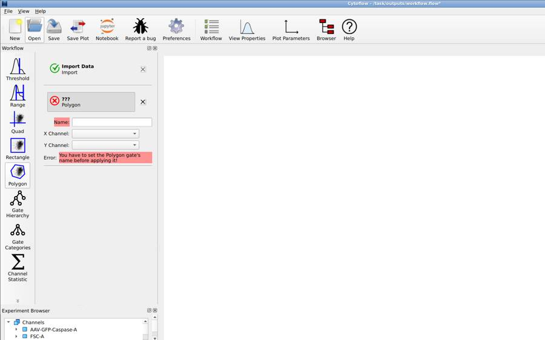
text(await tools.exec_command({cmd:"cu click 265 322 && cu type 'Cells' && cu click 354 353 && cu screenshot /tmp/screen.png","max_output_tokens":1000}));image((await tools.view_image({path:"/tmp/screen.png"})).image_url);
Script completed Wall time 0.4 seconds Output:
{"chunk_id":"b701f2","wall_time_seconds":0.228059878,"exit_code":0,"original_token_count":4,"output":"/tmp/screen.png\n"}
text(await tools.exec_command({cmd:"cu click 230 377 && cu click 353 385 && cu screenshot /tmp/screen.png","max_output_tokens":1000}));image((await tools.view_image({path:"/tmp/screen.png"})).image_url);
Script completed Wall time 0.3 seconds Output:
{"chunk_id":"7ef4d1","wall_time_seconds":0.099994569,"exit_code":0,"original_token_count":4,"output":"/tmp/screen.png\n"}
text(await tools.exec_command({cmd:"cu click 226 504 && cu click 653 71 && sleep 3 && cu screenshot /tmp/screen.png","max_output_tokens":1000}));image((await tools.view_image({path:"/tmp/screen.png"})).image_url);
Script completed Wall time 3.3 seconds Output:
{"chunk_id":"e075e0","wall_time_seconds":3.129161853,"exit_code":0,"original_token_count":4,"output":"/tmp/screen.png\n"}
text(await tools.exec_command({cmd:"cu click 921 482 && cu key ctrl+s && free -h && ps -eo pid,ppid,rss,args --sort=-rss | head -12 && rg --files /opt/cytoflow | head","max_output_tokens":3000}));
text(await tools.exec_command({cmd:"cu screenshot /tmp/screen.png","max_output_tokens":1000}));image((await tools.view_image({path:"/tmp/screen.png"})).image_url);
Script completed Wall time 0.2 seconds Output:
{"chunk_id":"eda96a","wall_time_seconds":0.002709561,"exit_code":0,"original_token_count":2611,"output":" total used free shared buff/cache available\nMem: 7.8Gi 834Mi 6.7Gi 15Mi 465Mi 6.9Gi\nSwap: 0B 0B 0B\n PID PPID RSS COMMAND\n 841 834 382016 /opt/cytoflow/cytoflow-1.3.2/cytoflow\n 7366 7145 118496 /root/.nvm/versions/node/v22.23.4/lib/node_modules/@openai/codex/node_modules/@openai/codex-linux-x64/vendor/x86_64-unknown-linux-musl/bin/codex exec --dangerously-bypass-approvals-and-sandbox --skip-git-repo-check --model gpt-6-astra --json --enable unified_exec -c model_reasoning_effort=xhigh -- # Gate one plate: caspase-3/7 + Zombie NIR in GRN-KO iPSC neurons (36 wells) **Goal:** in Cytoflow, gate all 36 wells with one gate set, report counts for five fixed populations per well, and flag every well whose data should not be used. ## Start 1. Cytoflow 1.3.2 (on screen) is the analysis tool. All gating, counting and per-well inspection of event data happens in Cytoflow. 2. File → Open → `/task/inputs/start.flow` (enter the path with `cu paste`) → answer **Yes** to run it. Loading takes about 40 s. 3. The Import step is already configured. - One tube per FCS file. - Conditions `well`, `construct`, `stain`, `replicate`, `is_control`, `control_type`, taken from `plate_layout.csv`. - Do not rebuild it. - Leave `Events per sample` empty (full data). 4. Terminal (bash; Python 3 with numpy/pandas/matplotlib/openpyxl; no flow-cytometry libraries). - Use it to read inputs, tabulate tables exported from Cytoflow, and write deliverables. - Do not parse FCS event data in the terminal. ## Experiment | Item | Value | |---|---| | Cells | PGP1 GRN-knockout iPSC-derived neurons | | Treatment | AAV1 transduction at 1e4 vg/cell: 9 GRN RNAswap v2.0 constructs, AAV1-GFP, or no virus; triplicate wells | | Readout | 14 days after transduction; acquired 17-Apr-2023, unfixed, Attune NxT | | Staining | Zombie NIR 1:500, 10 min on adherent cells → Accutase detachment → CellEvent Caspase-3/7 detection reagent 1:1000 in flow staining buffer, 30 min, 37 °C | ## Inputs | Path | Content | |---|---| | `/task/inputs/raw/` | 36 FCS 3.1 files `Caspase_KO_RNAswap-rep2_caspase_Group_<well>.fcs`, wells A1–C12 | | `/task/inputs/plate_layout.csv` | `file, well, construct, stain, replicate, is_control, control_type` | | `/task/inputs/gating_strategy.md` | The scientist's gating strategy (description, no coordinates) | | `/task/inputs/start.flow` | Cytoflow workflow with the Import step configured | ## Channels | Detector | Name shown in Cytoflow | Dye / signal | Marks | |---|---|---|---| | FSC-A, FSC-H, FSC-W | FSC-A, FSC-H, FSC-W | forward scatter | cell size | | SSC-A, SSC-H, SSC-W | SSC-A, SSC-H, SSC-W | side scatter | granularity; SSC-H vs SSC-A for singlets | | BL1-A | `AAV-GFP-Caspase-A` | CellEvent Caspase-3/7 Green | caspase-3/7-active (apoptotic) cells | | RL3-A | `LiveDead-Zombie NIR-A` | Zombie NIR | dead / membrane-compromised cells (bright) | | Time | `Time` | acquisition clock | — | - **BL1-A name is misleading.** `AAV-GFP-Caspase-A` is a reused instrument-template name. In this assay BL1-A is the CellEvent caspase-3/7 detector. - **GFP wells.** In the AAV1-GFP wells (C4–C6), GFP fluorescence is collected in the same detector, BL1-A. - **Punctuation.** If Cytoflow shows a name with punctuation replaced (e.g. underscores), it is the same channel. - No other fluorescence parameters were recorded. ## Plate layout Samples. All are stained with Zombie NIR + CellEvent (`stain` = zombie_caspase). `replicate` is 1/2/3 from left to right. | Wells | construct | |---|---| | A1–A3 | RSV | | A4–A6 | hSyn | | A7–A9 | 9523 | | A10–A12 | 3945 | | B1–B3 | 9421 | | B4–B6 | 3503 | | B7–B9 | 8820 | | B10–B12 | 8790 | | C1–C3 | 3945_3503 (3945 + 3503 combination) | Controls (`is_control` = yes): | Wells | Content | control_type | Use | |---|---|---|---| | C4–C6 | AAV1-GFP, both dyes | transduction_gfp | transduction reference; BL1-A carries GFP + caspase signal | | C7–C9 | no virus, both dyes | untreated_no_virus | untransduced, fully stained reference | | C10 | no virus, no dyes | unstained | unstained position on BL1-A and RL3-A | | C11 | no virus, Zombie NIR only | viability_dye_only | Zombie NIR negative vs bright on RL3-A | | C12 | no virus, CellEvent only | caspase_dye_only | caspase-negative vs positive on BL1-A | ## Populations (report exactly these, in this order) | # | population | parent_population | Definition | |---|---|---|---| | 1 | `Cells` | `All_events` | cells on FSC-A × SSC-A, debris excluded | | 2 | `Single_Cells` | `Cells` | singlets on SSC-H × SSC-A | | 3 | `Live` | `Single_Cells` | Zombie NIR-negative (RL3-A low) | | 4 | `Caspase_pos` | `Live` | CellEvent-positive live cells (early apoptotic) | | 5 | `Late_apoptosis` | `Single_Cells` | CellEvent-positive and Zombie NIR-bright | Gate shapes and channels are given in `gating_strategy.md`. ## Gating rules - **One operation per population.** Each population is one Cytoflow gate operation (Polygon, Rectangle, Range or Threshold). Its name must be exactly the population name above. - **Hierarchy.** - Cytoflow evaluates every gate on all events. - A population's membership is its own gate AND all its ancestors' gates. - Draw each gate with the view subset set to its parent chain. - Compute counts with the full ancestor chain. - **One gate set for all 36 wells.** No per-well gates. - **Raw (uncompensated) data only.** Do not add Bleedthrough, Autofluorescence or any other operation that changes channel values. - **FlowClean.** It may be used for inspection only. Do not use its output to define or filter any reported population. - **Getting counts per well.** - Use Channel Statistic (function Count, grouped by `well`, with the appropriate subset) → Table view → export CSV. - Intermediate exports may go in `/task/output
… [4,518 more characters not shown]{"chunk_id":"f8ccd9","wall_time_seconds":0.00000338,"exit_code":0,"original_token_count":4,"output":"/tmp/screen.png\n"}
text(await tools.exec_command({cmd:"cat /sys/fs/cgroup/memory.max /sys/fs/cgroup/memory.events && ls -lh /task/outputs/workflow.flow && cu click 652 70 && cu screenshot /tmp/screen.png","max_output_tokens":1500}));image((await tools.view_image({path:"/tmp/screen.png"})).image_url);
Script completed Wall time 0.0 seconds Output:
{"chunk_id":"bcc1d7","wall_time_seconds":0.00000357,"exit_code":1,"original_token_count":30,"output":"cat: /sys/fs/cgroup/memory.max: No such file or directory\ncat: /sys/fs/cgroup/memory.events: No such file or directory\n"}text(await tools.exec_command({cmd:"cu click 651 70 && cu screenshot /tmp/screen.png; ls -lh /task/outputs/workflow.flow; cat /sys/fs/cgroup/memory/memory.limit_in_bytes /sys/fs/cgroup/memory/memory.oom_control","max_output_tokens":1500}));image((await tools.view_image({path:"/tmp/screen.png"})).image_url);
Script completed Wall time 0.2 seconds Output:
{"chunk_id":"e15c32","wall_time_seconds":0.00000397,"exit_code":1,"original_token_count":59,"output":"/tmp/screen.png\n-rw-rw-r-- 1 cfapp task 23K Nov 5 00:09 /task/outputs/workflow.flow\ncat: /sys/fs/cgroup/memory/memory.limit_in_bytes: No such file or directory\ncat: /sys/fs/cgroup/memory/memory.oom_control: No such file or directory\n"}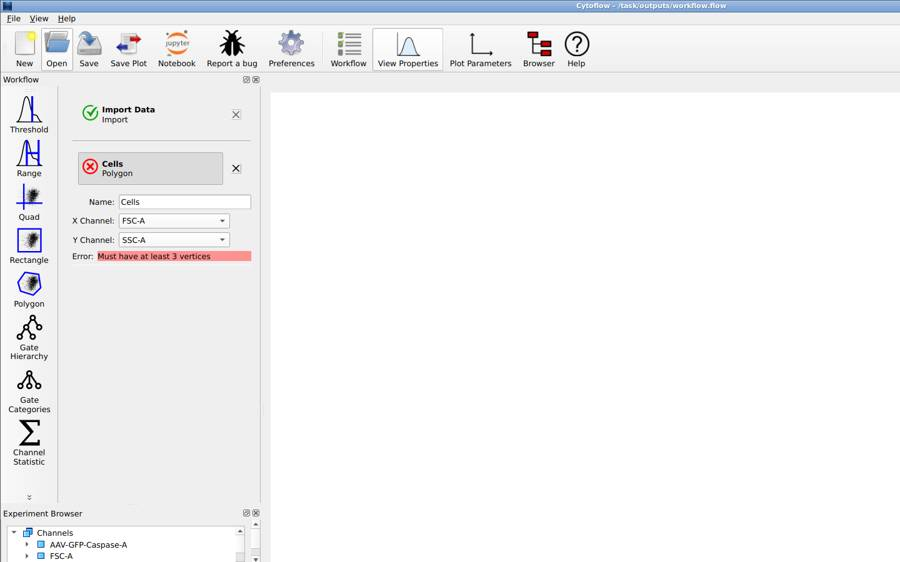
text(await tools.exec_command({cmd:"cu click 61 30 && cu screenshot /tmp/screen.png","max_output_tokens":1000}));image((await tools.view_image({path:"/tmp/screen.png"})).image_url);
Script completed Wall time 0.2 seconds Output:
{"chunk_id":"d1613a","wall_time_seconds":0.00000355,"exit_code":0,"original_token_count":4,"output":"/tmp/screen.png\n"}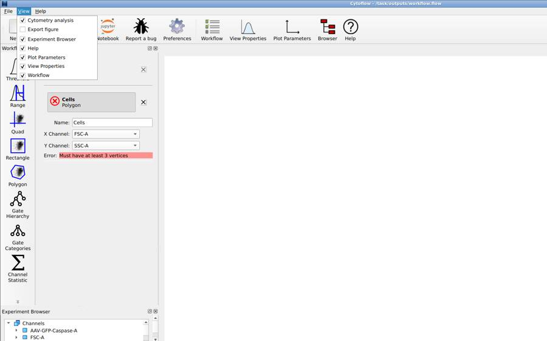
text(await tools.exec_command({cmd:"cu key Escape && cu key ctrl+s && kill 841 && sleep 2 && /opt/cytoflow/cytoflow-1.3.2/cytoflow >/tmp/cytoflow-ui.log 2>&1","yield_time_ms":1000,"max_output_tokens":1000}));
Script completed
Wall time 1.2 seconds
Output:
{"chunk_id":"3d4c8f","wall_time_seconds":1.001404505,"session_id":69799,"original_token_count":0,"output":""}text(await tools.exec_command({cmd:"sleep 5 && cu screenshot /tmp/screen.png","max_output_tokens":1000}));image((await tools.view_image({path:"/tmp/screen.png"})).image_url);
Script completed Wall time 5.1 seconds Output:
{"chunk_id":"bd43ae","wall_time_seconds":4.892513161,"exit_code":0,"original_token_count":4,"output":"/tmp/screen.png\n"}text(await tools.exec_command({cmd:"cu click 920 492 && cu key alt+F10 && cu click 90 70 && cu paste '/task/outputs/workflow.flow' && cu key Return && sleep 1 && cu screenshot /tmp/screen.png","max_output_tokens":1000}));image((await tools.view_image({path:"/tmp/screen.png"})).image_url);
Script completed Wall time 2.6 seconds Output:
{"chunk_id":"33c21b","wall_time_seconds":2.47292007,"exit_code":0,"original_token_count":4,"output":"/tmp/screen.png\n"}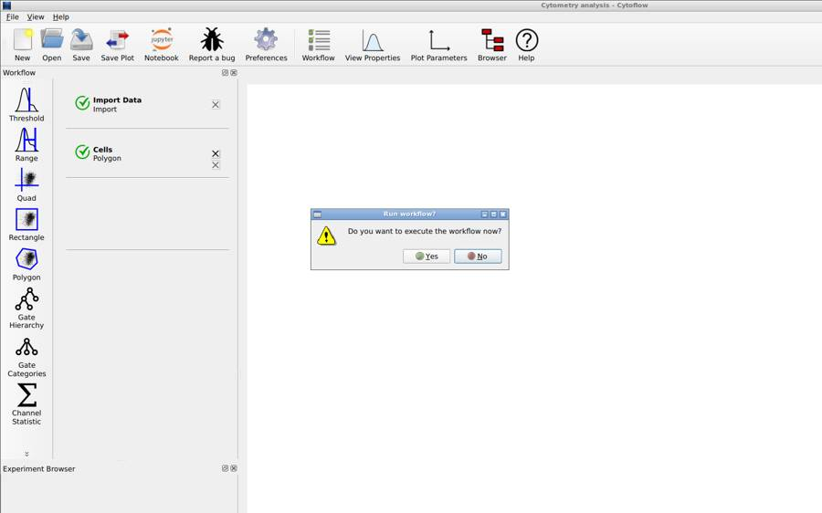
text(await tools.exec_command({cmd:"cu click 833 450 && cu click 240 266 && cu screenshot /tmp/screen.png && head -60 /task/outputs/workflow.flow","max_output_tokens":3000}));image((await tools.view_image({path:"/tmp/screen.png"})).image_url);
Script completed Wall time 0.3 seconds Output:
{"chunk_id":"9b165f","wall_time_seconds":0.099304088,"exit_code":0,"original_token_count":251,"output":"/tmp/screen.png\n- !workflow-item;5\n channels:\n - AAV-GFP-Caspase-A\n - FSC-A\n - FSC-H\n - FSC-W\n - LiveDead-Zombie NIR-A\n - SSC-A\n - SSC-H\n - SSC-W\n - Time\n conditions:\n construct: &id001 !pandas-series;3\n data:\n - '3503'\n - '3945'\n - '3945_3503'\n - '8790'\n - '8820'\n - '9421'\n - '9523'\n - AAV1_GFP\n - RSV\n - hSyn\n - no_virus\n dtype: object\n index: !pandas-index;1\n dtype: int64\n name: null\n values:\n - 5\n - 3\n - 8\n - 7\n - 6\n - 4\n - 2\n - 9\n - 0\n - 1\n - 10\n control_type: &id002 !pandas-series;3\n data:\n - caspase_dye_only\n - none\n - transduction_gfp\n - unstained\n - untreated_no_virus\n - viability_dye_only\n dtype: object\n index: !pandas-index;1\n dtype: int64\n name: null\n values:\n - 5\n - 0\n - 1\n - 3\n - 2\n - 4\n"}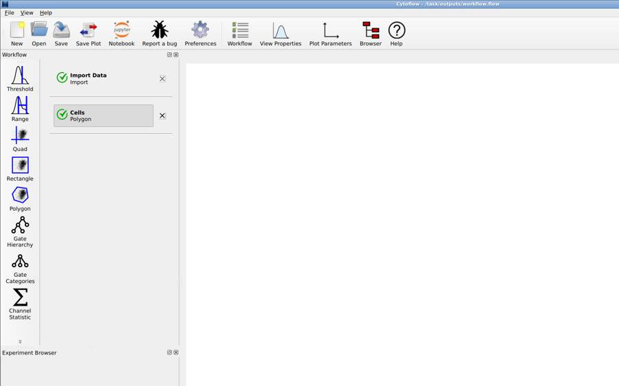
text(await tools.exec_command({cmd:"wmctrl -lG; xwininfo -root -tree | head -25; cu click 242 267 && sleep 1 && cu screenshot /tmp/screen.png","max_output_tokens":3000}));image((await tools.view_image({path:"/tmp/screen.png"})).image_url);
Script completed Wall time 1.2 seconds Output:
{"chunk_id":"4428a7","wall_time_seconds":0.998104223,"exit_code":0,"original_token_count":282,"output":"/bin/bash: line 1: wmctrl: command not found\n\nxwininfo: Window id: 0x21f (the root window) (has no name)\n\n Root window id: 0x21f (the root window) (has no name)\n Parent window id: 0x0 (none)\n 15 children:\n 0xe00018 \"Qt Clipboard Requestor Window\": () 3x3+0+0 +0+0\n 0xe00008 \"cytoflow\": () 1x1+0+0 +0+0\n 0xe00004 \"Qt Selection Owner for cytoflow\": () 3x3+0+0 +0+0\n 0xc0000e \"Openbox\": (\"\" (none)) 1x1+-100+-100 +-100+-100\n 0xc00062 (has no name): () 1x1+0+0 +0+0\n 1 child:\n 0xc00063 (has no name): () 1x1+0+0 +1+1\n 0xc00060 (has no name): () 1x1+0+0 +0+0\n 1 child:\n 0xc00061 (has no name): () 1x1+0+0 +1+1\n 0xc0005d (has no name): () 1x1+0+0 +0+0\n 1 child:\n 0xc0005e (has no name): () 1x1+0+0 +1+1\n 0xc00059 (has no name): (\"OPENBOX_FOCUS_CYCLE_POPUP\" \"OPENBOX_FOCUS_CYCLE_POPUP\") 1x1+0+0 +0+0\n 3 children:\n 0xc0005c (has no name): () 1x1+0+0 +1+1\n 0xc0005b (has no name): () 1x1+0+0 +1+1\n 0xc0005a (has no name): () 1x1+0+0 +1+1\n 0xc00056 (has no name): () 1x1+0+0 +0+0\n/tmp/screen.png\n"}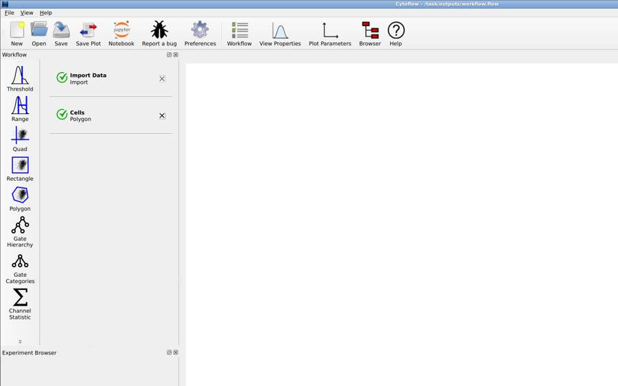
text(await tools.exec_command({cmd:"xwininfo -root -tree | tail -30; cu click 247 266 && sleep 1 && cu screenshot /tmp/screen.png","max_output_tokens":2000}));image((await tools.view_image({path:"/tmp/screen.png"})).image_url);
Script completed Wall time 1.2 seconds Output:
{"chunk_id":"2f7e6c","wall_time_seconds":0.999625264,"exit_code":0,"original_token_count":363,"output":" 0xc004ec (has no name): () 1x25+0+1 +0+1\n 0xc004eb (has no name): () 2082x18+1+1 +1+1\n 12 children:\n 0xc004ff (has no name): () 12x12+2034+3 +2035+4\n 0xc004fe (has no name): () 14x14+4+2 +5+3\n 0xc004fd (has no name): () 12x12+0+0 +1+1\n 0xc004fc (has no name): () 12x12+0+0 +1+1\n 0xc004fb (has no name): () 12x12+2066+3 +2067+4\n 0xc004fa (has no name): () 12x12+2050+3 +2051+4\n 0xc004f9 (has no name): () 1978x14+52+2 +53+3\n 0xc004f6 (has no name): () 4x18+2078+0 +2079+1\n 0xc004f5 (has no name): () 25x3+2057+0 +2058+1\n 0xc004f4 (has no name): () 4x18+0+0 +1+1\n 0xc004f3 (has no name): () 25x3+0+0 +1+1\n 0xc004f2 (has no name): () 2032x3+25+0 +26+1\n 0xc004e6 (has no name): () 1x1+0+0 +0+0\n 2 children:\n 0xc004e8 (has no name): () 1x1+0+0 +0+0\n 0xc004e7 (has no name): () 1x1+0+0 +0+0\n 0xc004e5 (has no name): () 1x1+0+0 +0+0\n 1 child:\n 0xc004ea (has no name): () 1x1+0+0 +0+0\n 0xc004e4 (has no name): () 1x1+0+0 +0+0\n 0xc004e3 (has no name): () 1x1+0+0 +0+0\n 1 child:\n 0xc004e9 (has no name): () 1x1+0+0 +0+0\n 0xc004e1 (has no name): () 2082x1171+1+20 +1+20\n 1 child:\n 0xc004e2 (has no name): () 2082x1171+0+0 +1+20\n\n/tmp/screen.png\n"}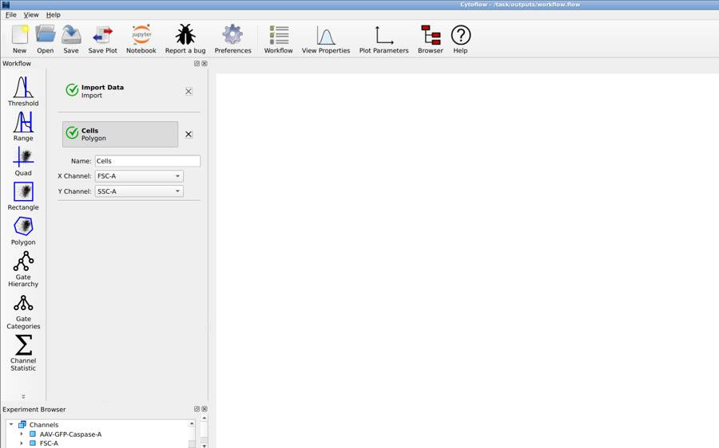
text(await tools.exec_command({cmd:"xwininfo -root -tree | rg 'Cytoflow|cytoflow'; cu key alt+F10 && sleep 1 && cu screenshot /tmp/screen.png","max_output_tokens":1000}));image((await tools.view_image({path:"/tmp/screen.png"})).image_url);
Script completed Wall time 1.1 seconds Output:
{"chunk_id":"826509","wall_time_seconds":0.921109844,"exit_code":0,"original_token_count":59,"output":" 0xe00008 \"cytoflow\": () 1x1+0+0 +0+0\n 0xe00004 \"Qt Selection Owner for cytoflow\": () 3x3+0+0 +0+0\n 0xe00006 \"Cytoflow - /task/outputs/workflow.flow\": (\"cytoflow\" \"cytoflow\") 2082x1171+1+20 +1+20\n/tmp/screen.png\n"}text(await tools.exec_command({cmd:"cu click 61 29 && cu click 93 129 && cu click 61 29 && cu click 96 150 && cu key alt+F10 && sleep 1 && cu screenshot /tmp/screen.png","max_output_tokens":1000}));image((await tools.view_image({path:"/tmp/screen.png"})).image_url);
Script completed Wall time 1.5 seconds Output:
{"chunk_id":"30e655","wall_time_seconds":1.336808424,"exit_code":0,"original_token_count":4,"output":"/tmp/screen.png\n"}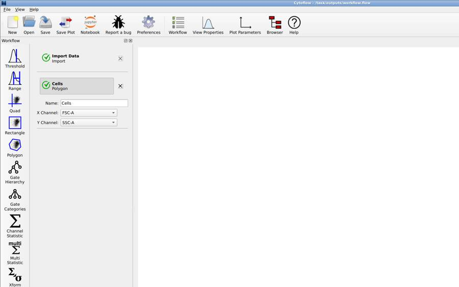
text(await tools.exec_command({cmd:"xrandr; xprop -id 0xe00006 WM_NORMAL_HINTS; tail -30 /tmp/cytoflow-ui.log","max_output_tokens":2500}));
Script completed
Wall time 0.0 seconds
Output:
{"chunk_id":"bed4b3","wall_time_seconds":0.00000447,"exit_code":0,"original_token_count":204,"output":"Screen 0: minimum 1 x 1, current 1440 x 900, maximum 1440 x 900\nscreen connected 1440x900+0+0 0mm x 0mm\n 1440x900 0.00* \nWM_NORMAL_HINTS(WM_SIZE_HINTS):\n\t\tuser specified location: 1, 20\n\t\tuser specified size: 2082 by 1171\n\t\tprogram specified minimum size: 501 by 316\n\t\tprogram specified resize increment: 1 by 1\n\t\tprogram specified base size: 0 by 0\n\t\twindow gravity: Static\nQStandardPaths: XDG_RUNTIME_DIR not set, defaulting to '/tmp/runtime-root'\nQXcbIntegration: Cannot create platform OpenGL context, neither GLX nor EGL are enabled\ntraits/etsconfig/etsconfig.py:425: UserWarning: Environment variable \"HOME\" not set, setting home directory to /tmp\n[7645:7645:1105/001004.819354:ERROR:zygote_host_impl_linux.cc(90)] Running as root without --no-sandbox is not supported. See https://crbug.com/638180.\n"}text(await tools.exec_command({cmd:"cu click 705 10 right && cu screenshot /tmp/screen.png","max_output_tokens":1000}));image((await tools.view_image({path:"/tmp/screen.png"})).image_url);
Script completed Wall time 0.2 seconds Output:
{"chunk_id":"d6105d","wall_time_seconds":0.00000493,"exit_code":0,"original_token_count":4,"output":"/tmp/screen.png\n"}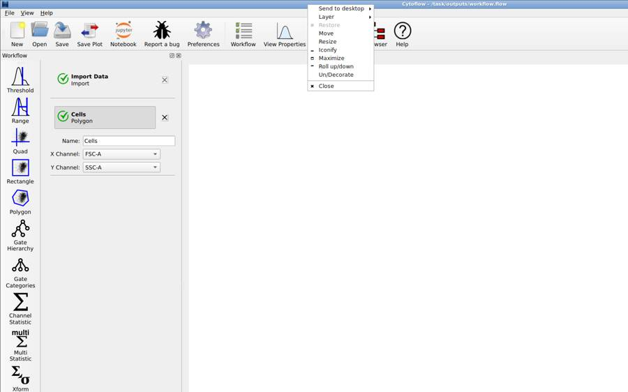
text(await tools.exec_command({cmd:"cu click 759 132 && sleep 1 && cu screenshot /tmp/screen.png","max_output_tokens":1000}));image((await tools.view_image({path:"/tmp/screen.png"})).image_url);
Script completed Wall time 1.2 seconds Output:
{"chunk_id":"41a7e0","wall_time_seconds":1.001345655,"exit_code":0,"original_token_count":4,"output":"/tmp/screen.png\n"}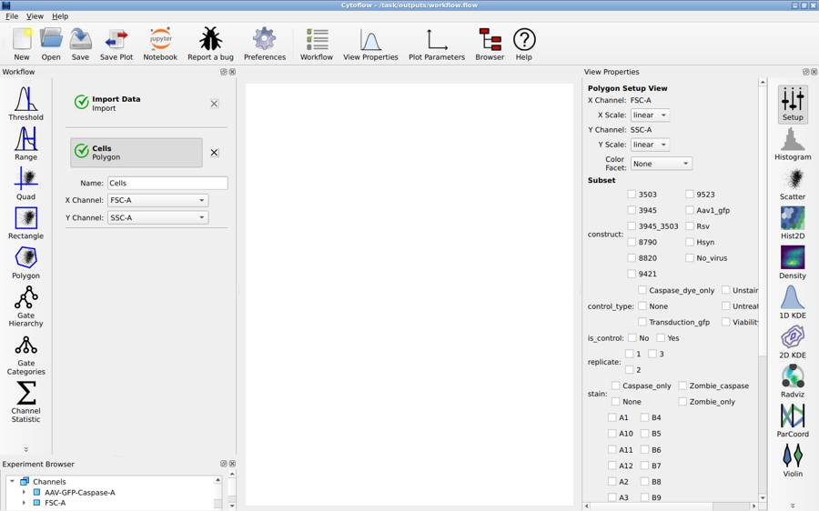
text(await tools.exec_command({cmd:"cu click 1077 735 && cu click 230 180 && sleep 0.5 && cu screenshot /tmp/screen.png","max_output_tokens":1000}));image((await tools.view_image({path:"/tmp/screen.png"})).image_url);
Script completed Wall time 0.8 seconds Output:
{"chunk_id":"7a212f","wall_time_seconds":0.604807383,"exit_code":0,"original_token_count":4,"output":"/tmp/screen.png\n"}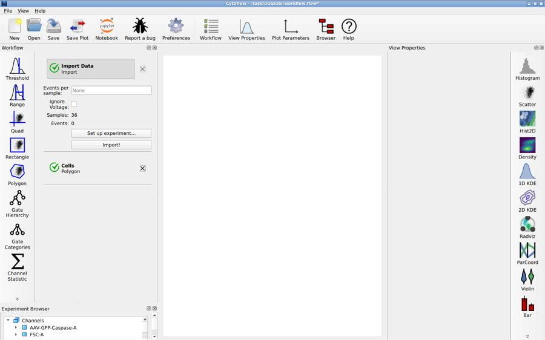
text(await tools.exec_command({cmd:"cu click 294 382 && cu key ctrl+s && sleep 40 && cu click 235 440 && sleep 2 && cu screenshot /tmp/screen.png","yield_time_ms":1000,"max_output_tokens":1000}));
Script completed
Wall time 1.2 seconds
Output:
{"chunk_id":"940954","wall_time_seconds":1.001290945,"session_id":16179,"original_token_count":0,"output":""}text(await tools.write_stdin({session_id:16179,chars:"","yield_time_ms":1000,"max_output_tokens":1000}));text(await tools.exec_command({cmd:"cu screenshot /tmp/screen.png","max_output_tokens":1000}));image((await tools.view_image({path:"/tmp/screen.png"})).image_url);
Script completed Wall time 5.1 seconds Output:
{"chunk_id":"179d98","wall_time_seconds":5.000751282,"session_id":16179,"original_token_count":0,"output":""}{"chunk_id":"72e3f0","wall_time_seconds":0.00000379,"exit_code":0,"original_token_count":4,"output":"/tmp/screen.png\n"}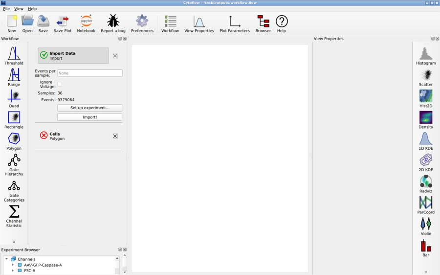
text(await tools.write_stdin({session_id:16179,chars:"","yield_time_ms":1000,"max_output_tokens":1000}));text(await tools.exec_command({cmd:"cu click 240 440 && sleep 3 && cu screenshot /tmp/screen.png","max_output_tokens":1000}));image((await tools.view_image({path:"/tmp/screen.png"})).image_url);
Script completed Wall time 8.2 seconds Output:
{"chunk_id":"bab451","wall_time_seconds":5.000750373,"session_id":16179,"original_token_count":0,"output":""}{"chunk_id":"24f044","wall_time_seconds":3.003321645,"exit_code":0,"original_token_count":4,"output":"/tmp/screen.png\n"}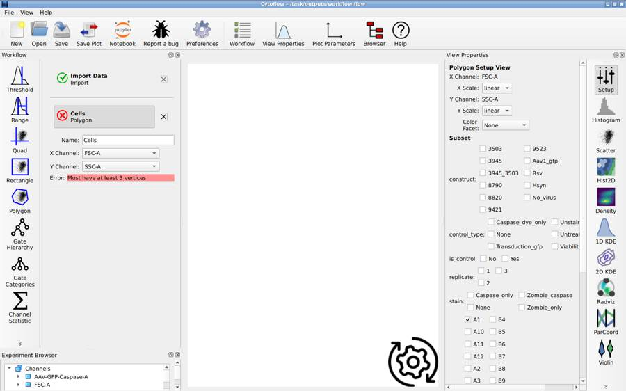
text(await tools.write_stdin({session_id:16179,chars:"","yield_time_ms":1000,"max_output_tokens":1000}));text(await tools.exec_command({cmd:"sleep 2 && cu screenshot /tmp/screen.png","max_output_tokens":1000}));image((await tools.view_image({path:"/tmp/screen.png"})).image_url);
Script completed Wall time 7.1 seconds Output:
{"chunk_id":"94a468","wall_time_seconds":5.000314342,"session_id":16179,"original_token_count":0,"output":""}{"chunk_id":"5ea567","wall_time_seconds":1.905844662,"exit_code":0,"original_token_count":4,"output":"/tmp/screen.png\n"}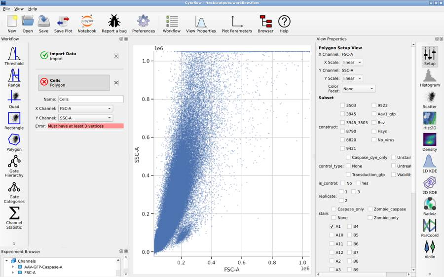
text(await tools.exec_command({cmd:"cu click 1166 202 && cu screenshot /tmp/screen.png","max_output_tokens":1000}));image((await tools.view_image({path:"/tmp/screen.png"})).image_url);
Script completed Wall time 0.2 seconds Output:
{"chunk_id":"a595be","wall_time_seconds":0.008593923,"exit_code":0,"original_token_count":4,"output":"/tmp/screen.png\n"}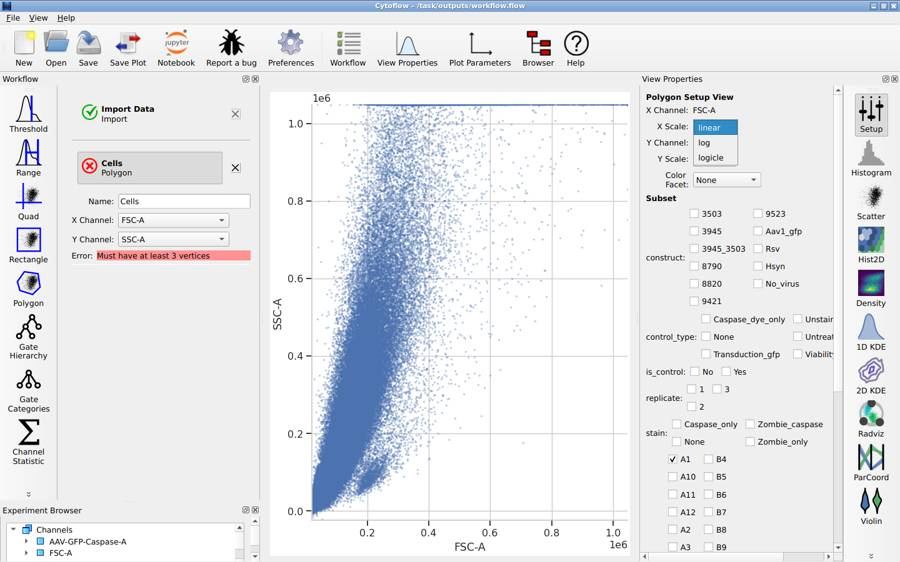
text(await tools.exec_command({cmd:"cu click 1139 229 && cu click 1166 254 && cu key l && cu key Return && sleep 3 && cu screenshot /tmp/screen.png","max_output_tokens":1000}));image((await tools.view_image({path:"/tmp/screen.png"})).image_url);
Script completed Wall time 3.3 seconds Output:
{"chunk_id":"62a4e2","wall_time_seconds":3.146938029,"exit_code":0,"original_token_count":4,"output":"/tmp/screen.png\n"}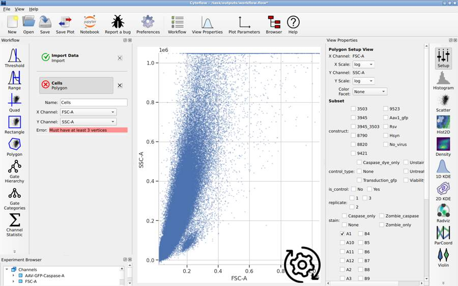
text(await tools.exec_command({cmd:"sleep 5 && cu screenshot /tmp/screen.png","max_output_tokens":1000}));image((await tools.view_image({path:"/tmp/screen.png"})).image_url);
Script completed Wall time 5.1 seconds Output:
{"chunk_id":"b87df5","wall_time_seconds":4.9001257240000005,"exit_code":0,"original_token_count":4,"output":"/tmp/screen.png\n"}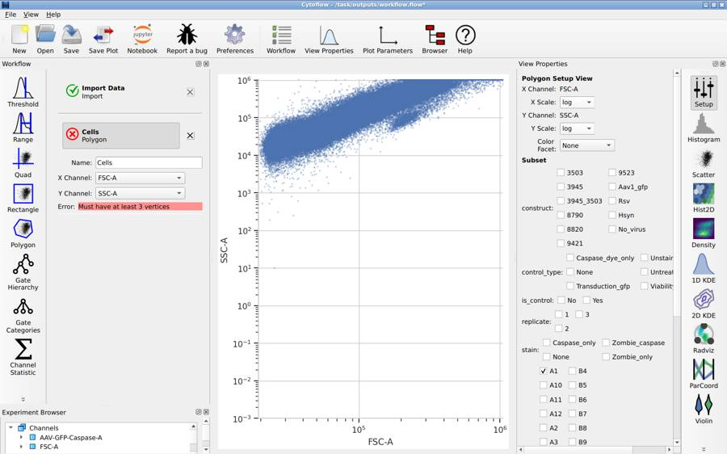
text(await tools.exec_command({cmd:"cu click 765 70 && sleep 0.5 && cu screenshot /tmp/screen.png","max_output_tokens":1000}));image((await tools.view_image({path:"/tmp/screen.png"})).image_url);
Script completed Wall time 0.7 seconds Output:
{"chunk_id":"45ae46","wall_time_seconds":0.506291934,"exit_code":0,"original_token_count":4,"output":"/tmp/screen.png\n"}text(await tools.exec_command({cmd:"cu drag 1192 803 1192 475 && sleep 0.5 && cu screenshot /tmp/screen.png","max_output_tokens":1000}));image((await tools.view_image({path:"/tmp/screen.png"})).image_url);
Script completed Wall time 0.6 seconds Output:
{"chunk_id":"f6ccf9","wall_time_seconds":0.432355896,"exit_code":0,"original_token_count":4,"output":"/tmp/screen.png\n"}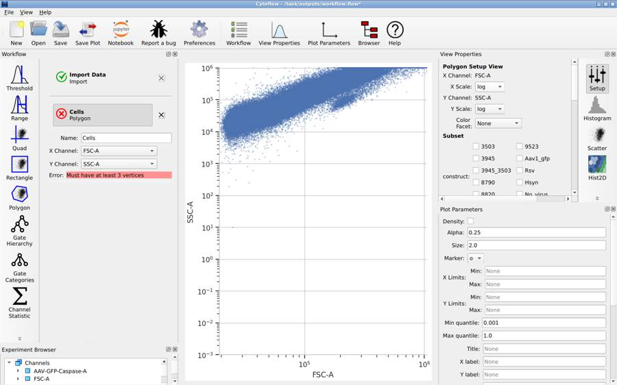
text(await tools.exec_command({cmd:"cu click 1098 517 && cu click 1231 635 && cu key ctrl+a && cu type '20000' && cu key Tab && cu click 1242 694 && cu key ctrl+a && cu type '1000' && cu key Tab && sleep 4 && cu screenshot /tmp/screen.png","max_output_tokens":1000}));image((await tools.view_image({path:"/tmp/screen.png"})).image_url);
Script completed Wall time 4.7 seconds Output:
{"chunk_id":"84d948","wall_time_seconds":4.530031881,"exit_code":0,"original_token_count":4,"output":"/tmp/screen.png\n"}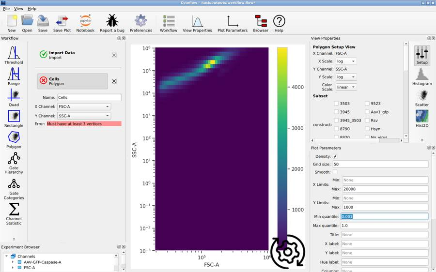
text(await tools.exec_command({cmd:"cu click 1222 595 && cu key ctrl+a && cu type '20000' && cu key Tab && cu click 1225 625 && cu key ctrl+a && cu type '1100000' && cu key Tab && cu click 1225 655 && cu key ctrl+a && cu type '1000' && cu key Tab && cu click 1225 686 && cu key ctrl+a && cu type '1100000' && cu key Tab && sleep 5 && cu screenshot /tmp/screen.png","max_output_tokens":1000}));image((await tools.view_image({path:"/tmp/screen.png"})).image_url);
Script completed Wall time 6.3 seconds Output:
{"chunk_id":"55e8da","wall_time_seconds":6.084252139,"exit_code":0,"original_token_count":4,"output":"/tmp/screen.png\n"}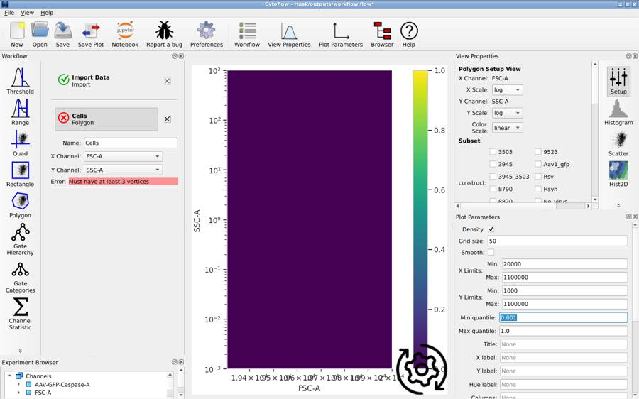
text(await tools.exec_command({cmd:"sleep 5 && cu screenshot /tmp/screen.png","max_output_tokens":1000}));image((await tools.view_image({path:"/tmp/screen.png"})).image_url);
Script completed Wall time 5.1 seconds Output:
{"chunk_id":"e6ee2b","wall_time_seconds":4.896699432,"exit_code":0,"original_token_count":4,"output":"/tmp/screen.png\n"}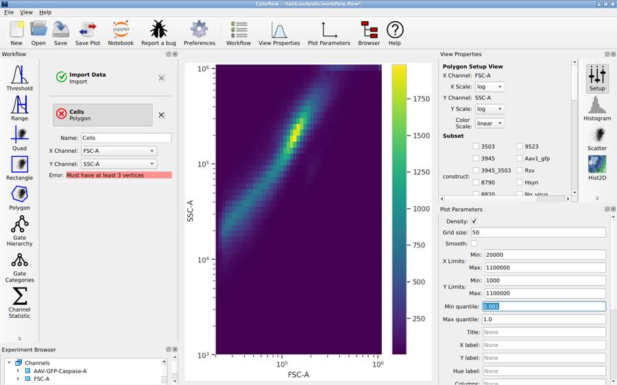
text(await tools.exec_command({cmd:"cu click 609 461 && cu click 659 500 && cu click 815 383 && cu click 889 153 && cu click 659 153 && cu click 609 316 double && cu key ctrl+s && sleep 5 && cu screenshot /tmp/screen.png","max_output_tokens":1000}));image((await tools.view_image({path:"/tmp/screen.png"})).image_url);
Script completed Wall time 5.8 seconds Output:
{"chunk_id":"bfa01f","wall_time_seconds":5.658063805,"exit_code":0,"original_token_count":4,"output":"/tmp/screen.png\n"}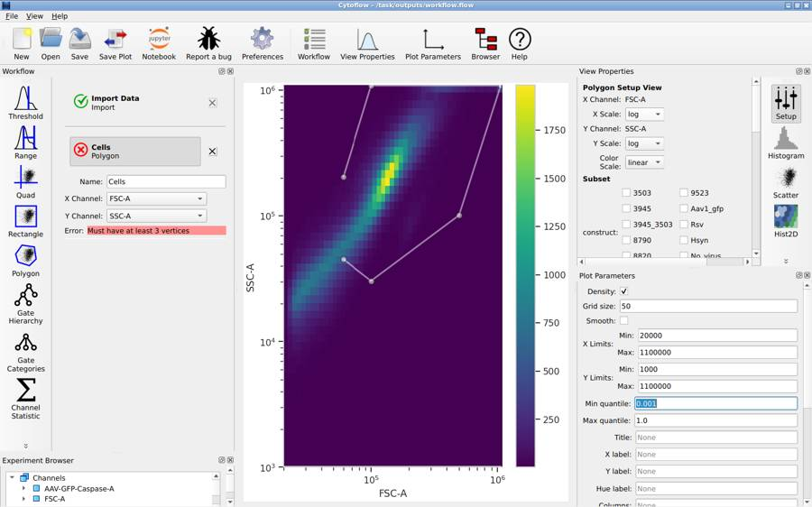
text(await tools.exec_command({cmd:"cu click 609 461 && sleep 4 && cu key ctrl+s && cu screenshot /tmp/screen.png","max_output_tokens":1000}));image((await tools.view_image({path:"/tmp/screen.png"})).image_url);
Script completed Wall time 4.2 seconds Output:
{"chunk_id":"53ee3a","wall_time_seconds":4.033914351,"exit_code":0,"original_token_count":4,"output":"/tmp/screen.png\n"}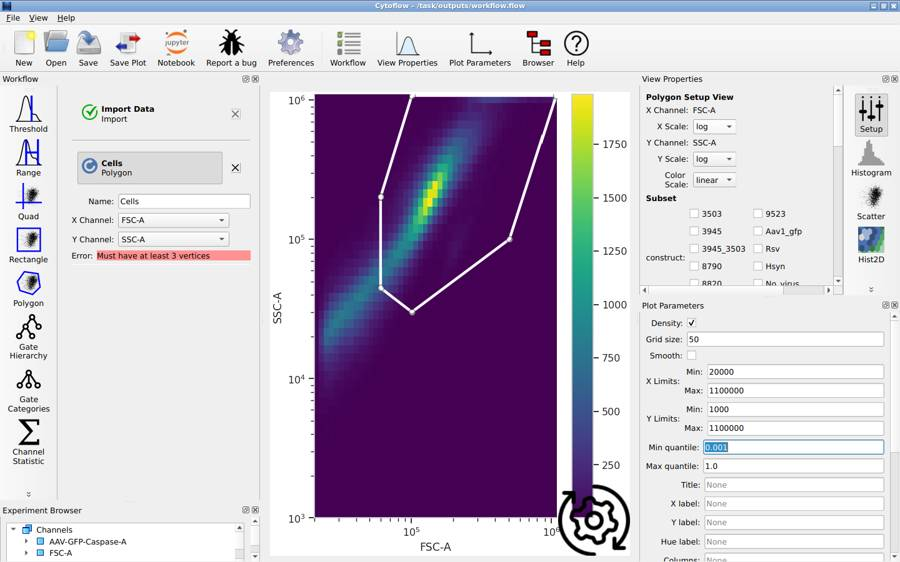
text(await tools.exec_command({cmd:"sleep 4 && cu click 1431 488 && cu click 46 451 && sleep 1 && cu screenshot /tmp/screen.png","max_output_tokens":1000}));image((await tools.view_image({path:"/tmp/screen.png"})).image_url);
Script completed Wall time 5.3 seconds Output:
{"chunk_id":"b680da","wall_time_seconds":5.109461304,"exit_code":0,"original_token_count":4,"output":"/tmp/screen.png\n"}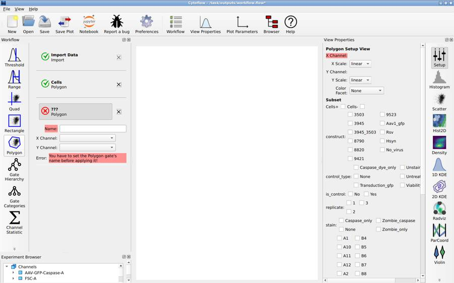
text(await tools.exec_command({cmd:"cu click 1088 338 && cu click 1076 758 && cu click 264 409 && cu type 'Single_Cells' && cu click 355 438 && cu screenshot /tmp/screen.png","max_output_tokens":1000}));image((await tools.view_image({path:"/tmp/screen.png"})).image_url);
Script completed Wall time 0.8 seconds Output:
{"chunk_id":"635cd3","wall_time_seconds":0.628391411,"exit_code":0,"original_token_count":4,"output":"/tmp/screen.png\n"}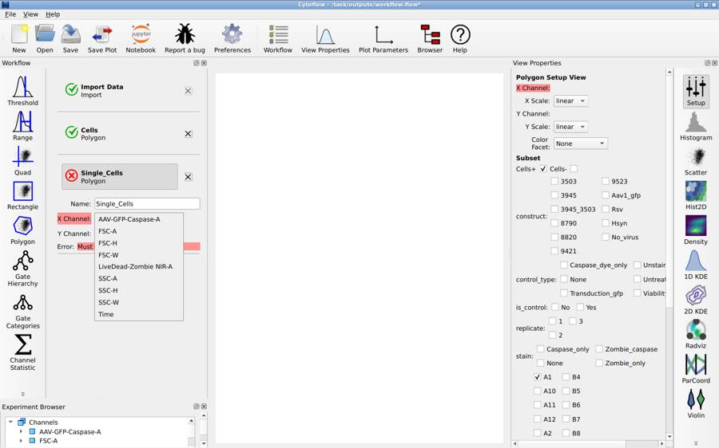
text(await tools.exec_command({cmd:"cu click 220 583 && cu click 355 469 && cu click 224 590 && sleep 5 && cu screenshot /tmp/screen.png","max_output_tokens":1000}));image((await tools.view_image({path:"/tmp/screen.png"})).image_url);
Script completed Wall time 5.4 seconds Output:
{"chunk_id":"84767c","wall_time_seconds":5.218680457,"exit_code":0,"original_token_count":4,"output":"/tmp/screen.png\n"}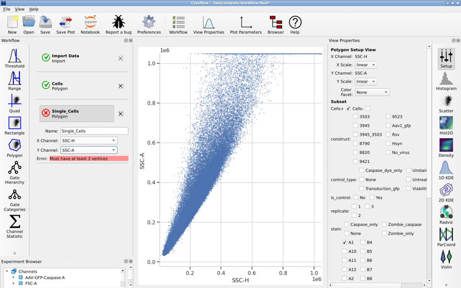
text(await tools.exec_command({cmd:"cu click 507 807 && cu click 531 797 && cu click 958 229 && cu click 958 173 && cu click 803 173 && cu click 507 782 && cu click 507 807 && sleep 5 && cu key ctrl+s && cu screenshot /tmp/screen.png","max_output_tokens":1000}));image((await tools.view_image({path:"/tmp/screen.png"})).image_url);
Script completed Wall time 5.8 seconds Output:
{"chunk_id":"a0fed1","wall_time_seconds":5.667415459,"exit_code":0,"original_token_count":4,"output":"/tmp/screen.png\n"}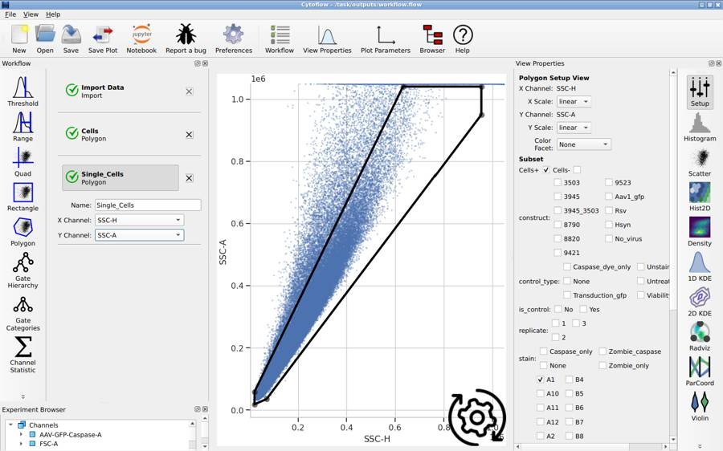
text(await tools.exec_command({cmd:"cu click 48 245 && sleep 1 && cu screenshot /tmp/screen.png","max_output_tokens":1000}));image((await tools.view_image({path:"/tmp/screen.png"})).image_url);
Script completed Wall time 1.2 seconds Output:
{"chunk_id":"428f22","wall_time_seconds":1.001223805,"exit_code":0,"original_token_count":4,"output":"/tmp/screen.png\n"}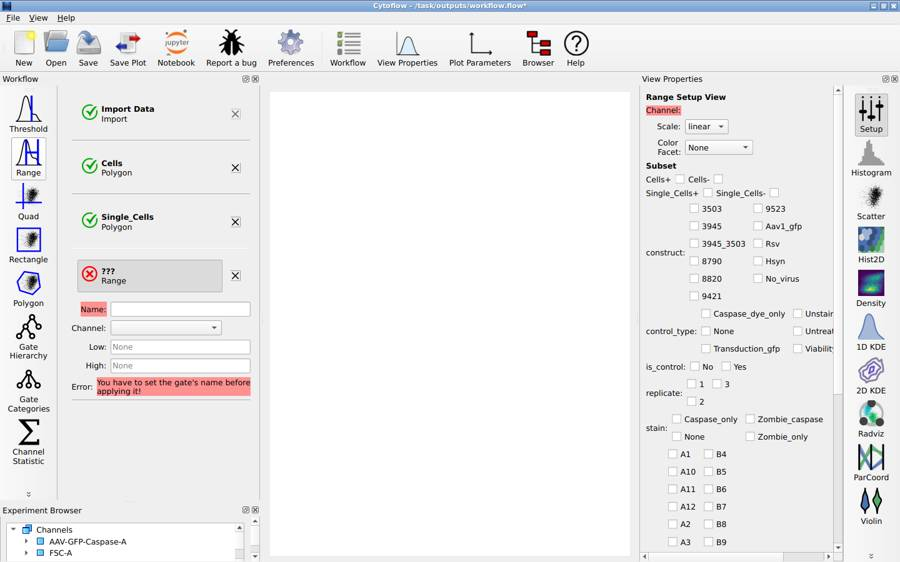
text(await tools.exec_command({cmd:"cu click 1088 286 && cu click 1132 307 && cu click 1276 557 && cu click 250 494 && cu type 'Live' && cu click 343 525 && cu screenshot /tmp/screen.png","max_output_tokens":1000}));image((await tools.view_image({path:"/tmp/screen.png"})).image_url);
Script completed Wall time 0.7 seconds Output:
{"chunk_id":"22620a","wall_time_seconds":0.524233132,"exit_code":0,"original_token_count":4,"output":"/tmp/screen.png\n"}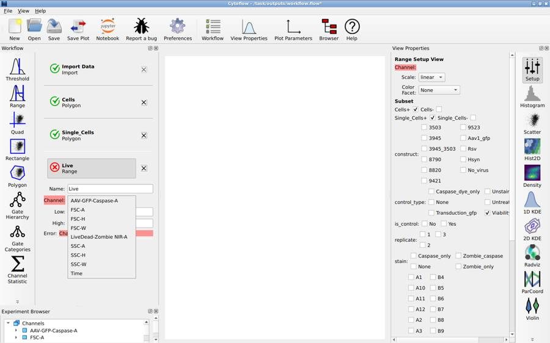
text(await tools.exec_command({cmd:"cu click 262 620 && cu click 1153 202 && cu screenshot /tmp/screen.png","max_output_tokens":1000}));image((await tools.view_image({path:"/tmp/screen.png"})).image_url);
Script completed Wall time 0.3 seconds Output:
{"chunk_id":"0f185f","wall_time_seconds":0.109188412,"exit_code":0,"original_token_count":4,"output":"/tmp/screen.png\n"}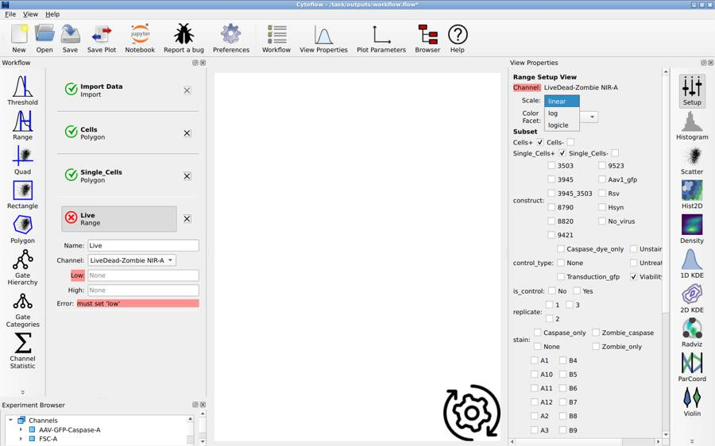
text(await tools.exec_command({cmd:"cu click 1126 252 && sleep 5 && cu screenshot /tmp/screen.png","max_output_tokens":1000}));image((await tools.view_image({path:"/tmp/screen.png"})).image_url);
Script completed Wall time 5.2 seconds Output:
{"chunk_id":"bd6a22","wall_time_seconds":5.004206194,"exit_code":0,"original_token_count":4,"output":"/tmp/screen.png\n"}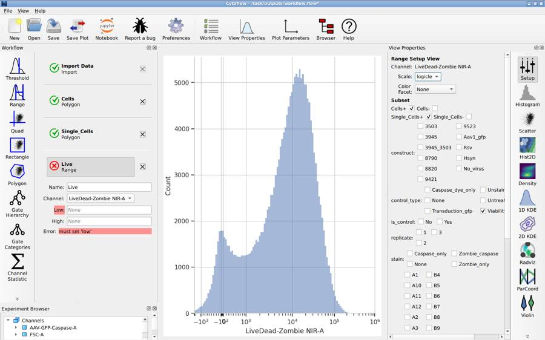
text(await tools.exec_command({cmd:"cu click 1276 501 && cu click 1276 557 && sleep 5 && cu screenshot /tmp/screen.png","max_output_tokens":1000}));image((await tools.view_image({path:"/tmp/screen.png"})).image_url);
Script completed Wall time 5.3 seconds Output:
{"chunk_id":"b4d5dc","wall_time_seconds":5.109845034,"exit_code":0,"original_token_count":4,"output":"/tmp/screen.png\n"}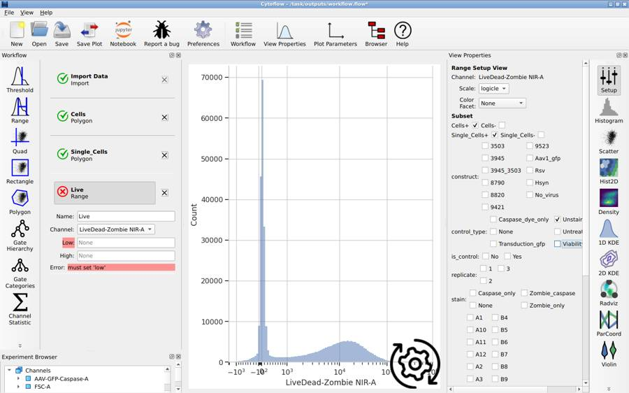
text(await tools.exec_command({cmd:"sleep 5 && cu screenshot /tmp/screen.png","max_output_tokens":1000}));image((await tools.view_image({path:"/tmp/screen.png"})).image_url);
Script completed Wall time 5.1 seconds Output:
{"chunk_id":"48fb05","wall_time_seconds":4.898654663,"exit_code":0,"original_token_count":4,"output":"/tmp/screen.png\n"}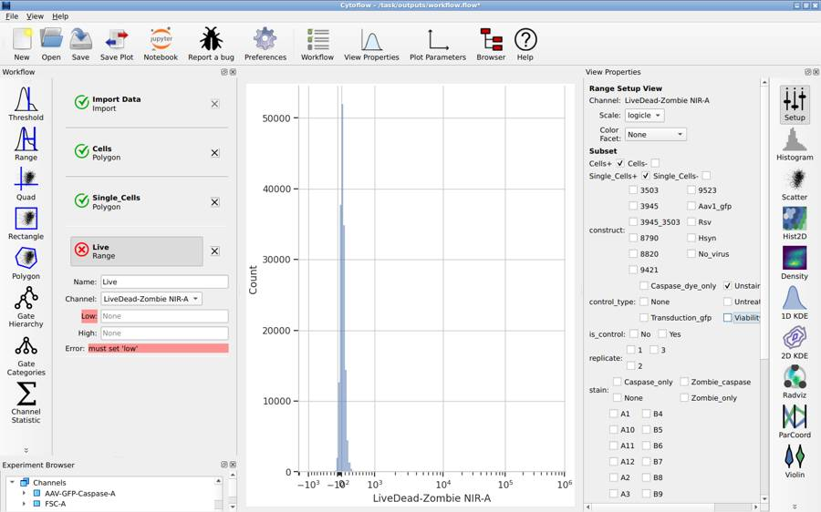
text(await tools.exec_command({cmd:"cu click 262 555 && cu key ctrl+a && cu type '-1000000' && cu key Tab && cu click 262 584 && cu key ctrl+a && cu type '1000' && cu key Tab && sleep 5 && cu key ctrl+s && cu click 47 245 && sleep 1 && cu screenshot /tmp/screen.png","max_output_tokens":1000}));image((await tools.view_image({path:"/tmp/screen.png"})).image_url);
Script completed Wall time 6.8 seconds Output:
{"chunk_id":"82b178","wall_time_seconds":6.638903282,"exit_code":0,"original_token_count":4,"output":"/tmp/screen.png\n"}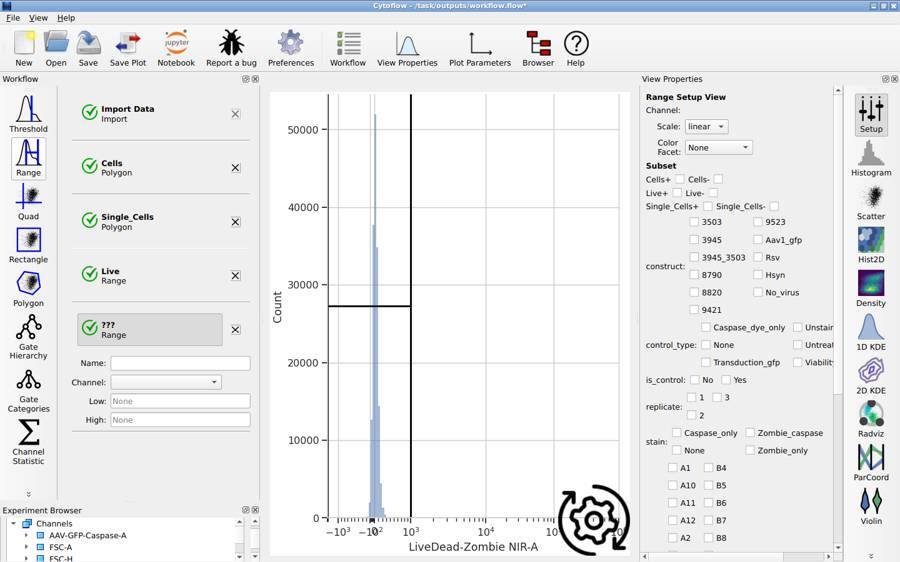
text(await tools.exec_command({cmd:"cu click 1088 287 && cu click 1083 308 && cu click 1132 330 && cu click 1129 523 && cu click 271 581 && cu type 'Caspase_pos' && cu click 343 611 && cu key Home && cu key Return && cu click 1152 202 && cu key End && cu key Return && sleep 10 && cu screenshot /tmp/screen.png","max_output_tokens":1000}));image((await tools.view_image({path:"/tmp/screen.png"})).image_url);
Script completed Wall time 10.2 seconds Output:
{"chunk_id":"64a9fb","wall_time_seconds":10.001528515,"session_id":20844,"original_token_count":0,"output":""}text(await tools.write_stdin({session_id:20844,chars:"","yield_time_ms":1000,"max_output_tokens":1000}));image((await tools.view_image({path:"/tmp/screen.png"})).image_url);
Script completed Wall time 0.0 seconds Output:
{"chunk_id":"046221","wall_time_seconds":0.00000362,"exit_code":0,"original_token_count":4,"output":"/tmp/screen.png\n"}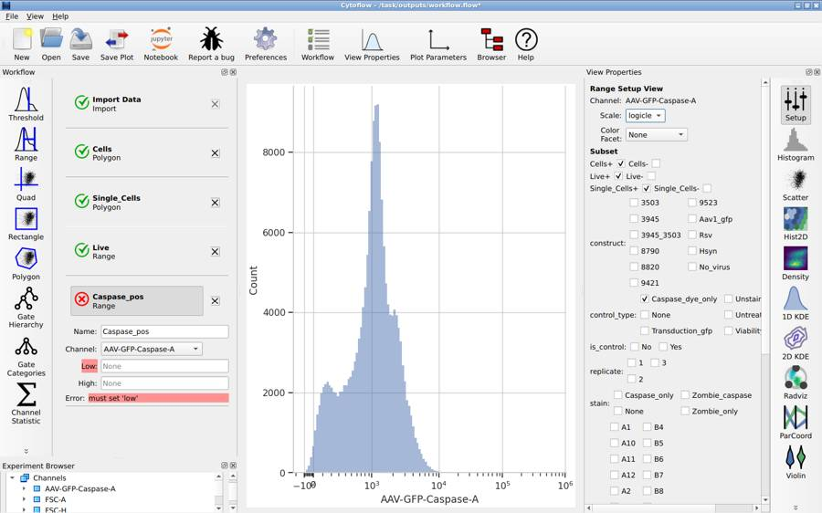
text(await tools.exec_command({cmd:"cu click 1277 523 && cu click 1129 523 && sleep 9 && cu screenshot /tmp/screen.png","yield_time_ms":10000,"max_output_tokens":1000}));image((await tools.view_image({path:"/tmp/screen.png"})).image_url);
Script completed Wall time 9.3 seconds Output:
{"chunk_id":"a6bb0b","wall_time_seconds":9.109968353,"exit_code":0,"original_token_count":4,"output":"/tmp/screen.png\n"}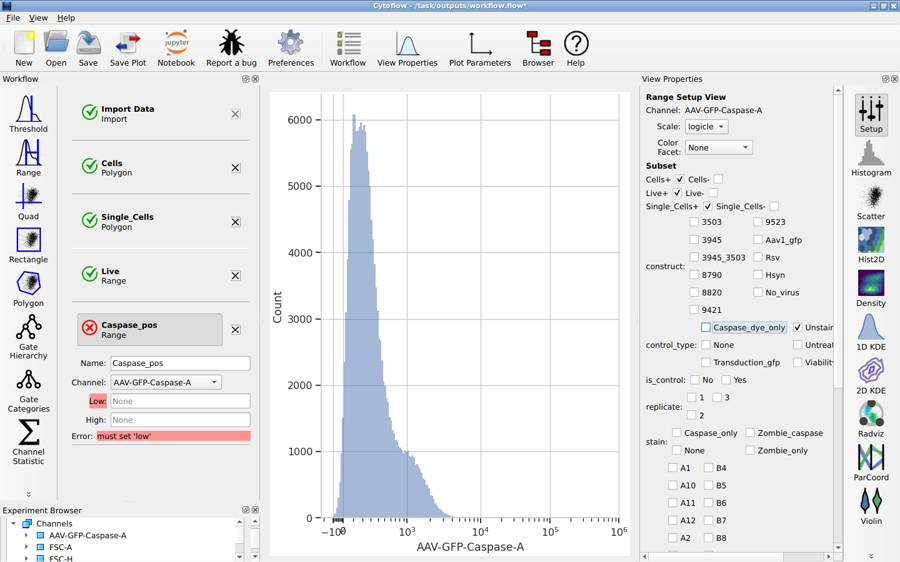
text(await tools.exec_command({cmd:"cu click 1276 580 && cu click 1276 523 && sleep 9 && cu screenshot /tmp/screen.png","max_output_tokens":1000}));image((await tools.view_image({path:"/tmp/screen.png"})).image_url);
Script completed Wall time 9.3 seconds Output:
{"chunk_id":"7bfe64","wall_time_seconds":9.109800472,"exit_code":0,"original_token_count":4,"output":"/tmp/screen.png\n"}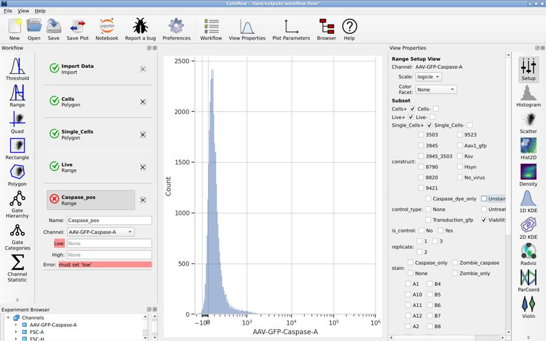
text(await tools.exec_command({cmd:"cu click 260 641 && cu key ctrl+a && cu type '500' && cu key Tab && cu click 260 672 && cu key ctrl+a && cu type '10000000' && cu key Tab && sleep 4 && cu key ctrl+s && cu click 46 452 && sleep 1 && cu screenshot /tmp/screen.png","max_output_tokens":1000}));image((await tools.view_image({path:"/tmp/screen.png"})).image_url);
Script completed Wall time 5.8 seconds Output:
{"chunk_id":"fc5800","wall_time_seconds":5.616373459,"exit_code":0,"original_token_count":4,"output":"/tmp/screen.png\n"}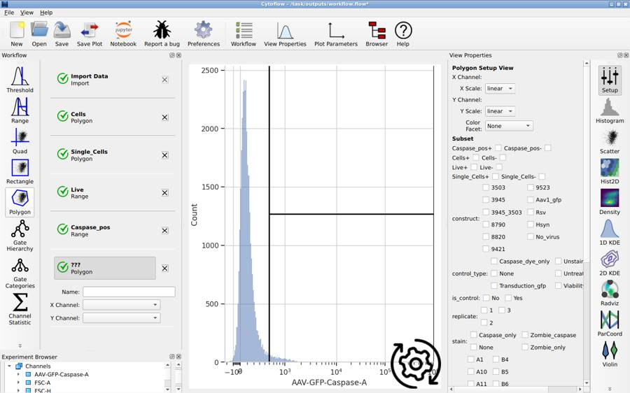
text(await tools.exec_command({cmd:"cu click 1088 360 && cu click 1132 404 && cu click 1276 626 && cu click 257 668 && cu type 'Late_apoptosis' && cu click 354 698 && cu key Home && cu key Return && cu click 354 728 && cu screenshot /tmp/screen.png","max_output_tokens":1000}));image((await tools.view_image({path:"/tmp/screen.png"})).image_url);
Script completed Wall time 1.1 seconds Output:
{"chunk_id":"87ee5f","wall_time_seconds":0.919232433,"exit_code":0,"original_token_count":4,"output":"/tmp/screen.png\n"}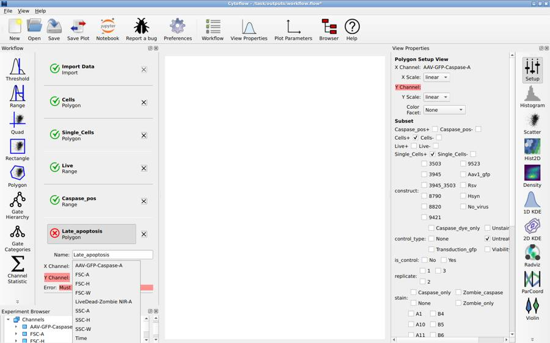
text(await tools.exec_command({cmd:"cu click 271 791 && cu click 1165 202 && cu key End && cu key Return && cu click 1165 255 && cu key End && cu key Return && sleep 9 && cu screenshot /tmp/screen.png","yield_time_ms":10000,"max_output_tokens":1000}));image((await tools.view_image({path:"/tmp/screen.png"})).image_url);
Script completed Wall time 9.4 seconds Output:
{"chunk_id":"aba985","wall_time_seconds":9.275963586,"exit_code":0,"original_token_count":4,"output":"/tmp/screen.png\n"}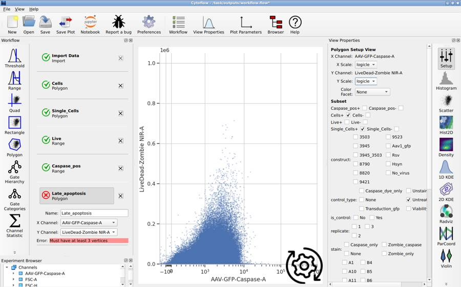
text(await tools.exec_command({cmd:"sleep 8 && cu screenshot /tmp/screen.png","max_output_tokens":1000}));image((await tools.view_image({path:"/tmp/screen.png"})).image_url);
Script completed Wall time 8.1 seconds Output:
{"chunk_id":"582fe6","wall_time_seconds":7.905411999,"exit_code":0,"original_token_count":4,"output":"/tmp/screen.png\n"}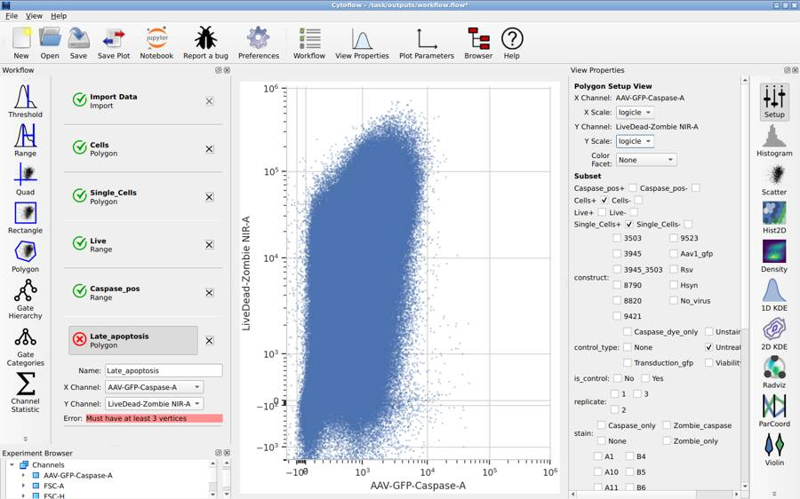
text(await tools.exec_command({cmd:"cu click 765 69 && sleep 0.5 && cu screenshot /tmp/screen.png","max_output_tokens":1000}));image((await tools.view_image({path:"/tmp/screen.png"})).image_url);
Script completed Wall time 0.7 seconds Output:
{"chunk_id":"433c5d","wall_time_seconds":0.508467656,"exit_code":0,"original_token_count":4,"output":"/tmp/screen.png\n"}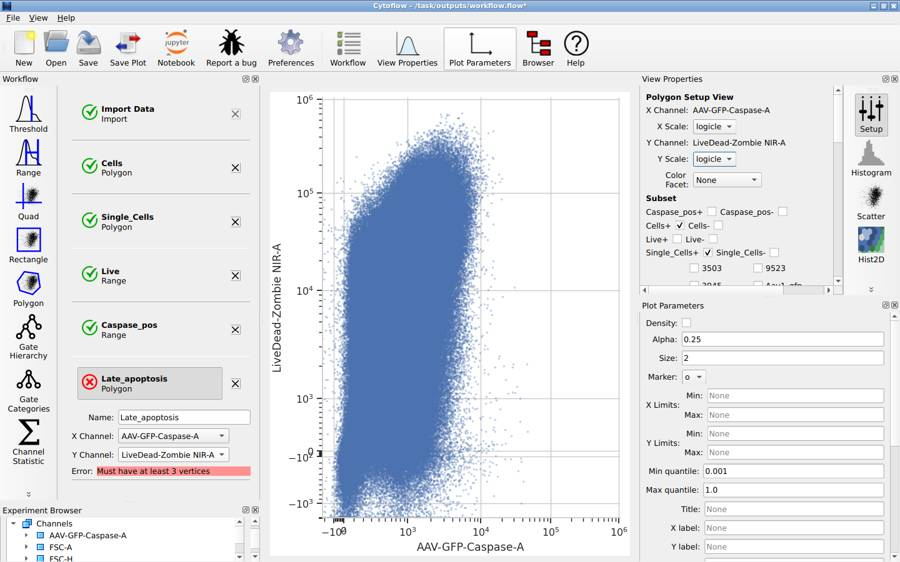
text(await tools.exec_command({cmd:"cu click 1098 518 && sleep 8 && cu screenshot /tmp/screen.png","max_output_tokens":1000}));image((await tools.view_image({path:"/tmp/screen.png"})).image_url);
Script completed Wall time 8.2 seconds Output:
{"chunk_id":"91d654","wall_time_seconds":8.004995188,"exit_code":0,"original_token_count":4,"output":"/tmp/screen.png\n"}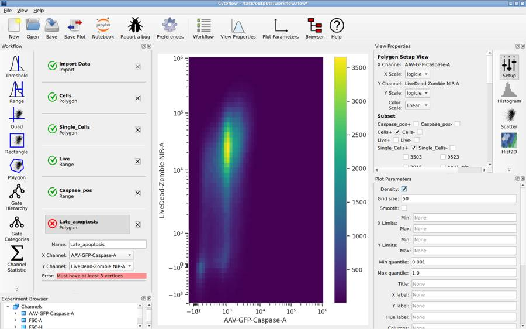
text(await tools.exec_command({cmd:"cu click 1244 625 && cu key ctrl+a && cu type '1100000' && cu key Tab && cu click 1244 685 && cu key ctrl+a && cu type '1100000' && cu key Tab && sleep 9 && cu screenshot /tmp/screen.png","max_output_tokens":1000}));image((await tools.view_image({path:"/tmp/screen.png"})).image_url);
Script completed Wall time 9.7 seconds Output:
{"chunk_id":"c63b7f","wall_time_seconds":9.559603415,"exit_code":0,"original_token_count":4,"output":"/tmp/screen.png\n"}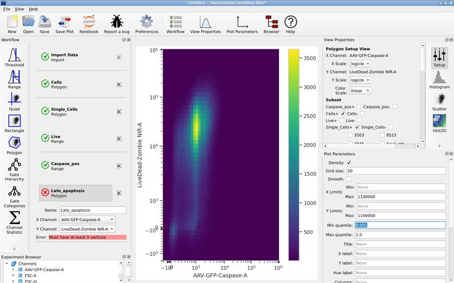
text(await tools.exec_command({cmd:"cu click 594 553 && cu click 883 553 && cu click 883 157 && cu click 594 157 && cu click 594 553 && sleep 5 && cu key ctrl+s && cu screenshot /task/outputs/work/late_gate.png && tail -140 /task/outputs/workflow.flow","max_output_tokens":5000}));image((await tools.view_image({path:"/task/outputs/work/late_gate.png"})).image_url);
Script completed Wall time 5.6 seconds Output:
{"chunk_id":"d8748c","wall_time_seconds":5.453893167,"exit_code":0,"original_token_count":613,"output":"/task/outputs/work/late_gate.png\n - 1100000.0\n ylabel: ''\n ylim: !!python/tuple\n - null\n - 1100000.0\n subset_list:\n - !bool-subset;1\n name: Caspase_pos\n selected_f: false\n selected_t: false\n values: []\n - !bool-subset;1\n name: Cells\n selected_f: false\n selected_t: true\n values: []\n - !bool-subset;1\n name: Live\n selected_f: false\n selected_t: false\n values: []\n - !bool-subset;1\n name: Single_Cells\n selected_f: false\n selected_t: true\n values: []\n - !category-subset;1\n name: construct\n selected: []\n values:\n - '3503'\n - '3945'\n - '3945_3503'\n - '8790'\n - '8820'\n - '9421'\n - '9523'\n - AAV1_GFP\n - RSV\n - hSyn\n - no_virus\n - !category-subset;1\n name: control_type\n selected:\n - untreated_no_virus\n values:\n - caspase_dye_only\n - none\n - transduction_gfp\n - unstained\n - untreated_no_virus\n - viability_dye_only\n - !category-subset;1\n name: is_control\n selected: []\n values:\n - 'no'\n - 'yes'\n - !category-subset;1\n name: replicate\n selected: []\n values:\n - '1'\n - '2'\n - '3'\n - !category-subset;1\n name: stain\n selected: []\n values:\n - caspase_only\n - none\n - zombie_caspase\n - zombie_only\n - !category-subset;1\n name: well\n selected: []\n values:\n - A1\n - A10\n - A11\n - A12\n - A2\n - A3\n - A4\n - A5\n - A6\n - A7\n - A8\n - A9\n - B1\n - B10\n - B11\n - B12\n - B2\n - B3\n - B4\n - B5\n - B6\n - B7\n - B8\n - B9\n - C1\n - C10\n - C11\n - C12\n - C2\n - C3\n - C4\n - C5\n - C6\n - C7\n - C8\n - C9\n metadata:\n AAV-GFP-Caspase-A: *id020\n Caspase_pos: *id021\n Cells: *id022\n FSC-A: *id023\n FSC-H: *id024\n FSC-W: *id025\n Live: *id026\n LiveDead-Zombie NIR-A: *id027\n SSC-A: *id028\n SSC-H: *id029\n SSC-W: *id030\n Single_Cells: *id031\n Time: *id032\n construct: *id033\n control_type: *id034\n ignore_v: *id035\n is_control: *id036\n name_metadata: $PnS\n replicate: *id037\n stain: *id038\n well: *id039\n operation: *id040\n statistics:\n Conditions: *id041\n views:\n - *id042\n"}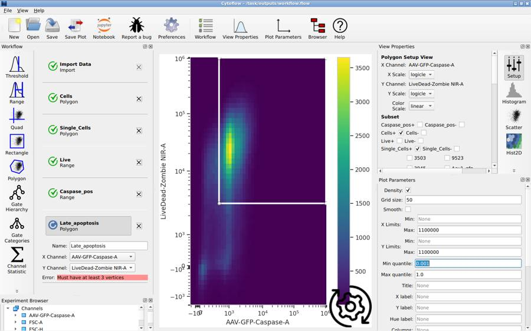
text(await tools.exec_command({cmd:"rg -n -A45 'name: (Cells|Single_Cells|Live|Caspase_pos|Late_apoptosis)$' /task/outputs/workflow.flow | head -200","max_output_tokens":5000}));
text(await tools.clock__curr_time({}));
Script completed
Wall time 0.0 seconds
Output:
{"chunk_id":"1a5400","wall_time_seconds":0.00000425,"exit_code":0,"original_token_count":1299,"output":"1168: name: Cells\n1169- vertices:\n1170- - !!python/tuple\n1171- - 60092.05884933113\n1172- - 44808.801730620544\n1173- - !!python/tuple\n1174- - 100734.68289882434\n1175- - 30107.7998398861\n1176- - !!python/tuple\n1177- - 506185.94885565335\n1178- - 100322.67276301315\n1179- - !!python/tuple\n1180- - 1086872.9696536341\n1181- - 1078543.8607490277\n1182- - !!python/tuple\n1183- - 100734.68289882434\n1184- - 1078543.8607490277\n1185- - !!python/tuple\n1186- - 60092.05884933113\n1187- - 201726.7178715055\n1188- - !!python/tuple\n1189- - 60092.05884933113\n1190- - 201726.7178715055\n1191- xchannel: FSC-A\n1192- xscale: log\n1193- ychannel: SSC-A\n1194- yscale: log\n1195- plot_params: !polygon-params;1\n1196- alpha: 0.25\n1197- col_wrap: null\n1198- density: true\n1199- despine: true\n1200- gridsize: 50\n1201- huelabel: ''\n1202- legend: true\n1203- marker: o\n1204- max_quantile: 1.0\n1205- min_quantile: 0.001\n1206- s: 2.0\n1207- sharex: true\n1208- sharey: true\n1209- smoothed: false\n1210- smoothed_sigma: 1.0\n1211- sns_context: notebook\n1212- sns_style: whitegrid\n1213- title: ''\n--\n1984: name: Single_Cells\n1985- vertices:\n1986- - !!python/tuple\n1987- - 19625.963106804993\n1988- - 18881.974183092738\n1989- - !!python/tuple\n1990- - 69257.23411477526\n1991- - 35648.43356305585\n1992- - !!python/tuple\n1993- - 953988.5868655494\n1994- - 949420.4697710462\n1995- - !!python/tuple\n1996- - 953988.5868655494\n1997- - 1039959.3504228471\n1998- - !!python/tuple\n1999- - 632464.2659878292\n2000- - 1039959.3504228471\n2001- - !!python/tuple\n2002- - 19625.963106804993\n2003- - 59121.47669500424\n2004- xchannel: SSC-H\n2005- xscale: linear\n2006- ychannel: SSC-A\n2007- yscale: linear\n2008- plot_params: !polygon-params;1\n2009- alpha: 0.25\n2010- col_wrap: null\n2011- density: false\n2012- despine: true\n2013- gridsize: 50\n2014- huelabel: ''\n2015- legend: true\n2016- marker: o\n2017- max_quantile: 1.0\n2018- min_quantile: 0.001\n2019- s: 2\n2020- sharex: true\n2021- sharey: true\n2022- smoothed: false\n2023- smoothed_sigma: 1.0\n2024- sns_context: notebook\n2025- sns_style: whitegrid\n2026- title: ''\n2027- xlabel: ''\n2028- xlim: !!python/tuple\n2029- - null\n--\n2037: name: Cells\n2038- selected_f: false\n2039- selected_t: true\n2040- values: []\n2041- - !category-subset;1\n2042- name: construct\n2043- selected: []\n2044- values:\n2045- - '3503'\n2046- - '3945'\n2047- - '3945_3503'\n2048- - '8790'\n2049- - '8820'\n2050- - '9421'\n2051- - '9523'\n2052- - AAV1_GFP\n2053- - RSV\n2054- - hSyn\n2055- - no_virus\n2056- - !category-subset;1\n2057- name: control_type\n2058- selected: []\n2059- values:\n2060- - caspase_dye_only\n2061- - none\n2062- - transduction_gfp\n2063- - unstained\n2064- - untreated_no_virus\n2065- - viability_dye_only\n2066- - !category-subset;1\n2067- name: is_control\n2068- selected: []\n2069- values:\n2070- - 'no'\n2071- - 'yes'\n2072- - !category-subset;1\n2073- name: replicate\n2074- selected: []\n2075- values:\n2076- - '1'\n2077- - '2'\n2078- - '3'\n2079- - !category-subset;1\n2080- name: stain\n2081- selected: []\n2082- values:\n--\n2821: name: Live\n2822- plot_params: !histogram-params;4\n2823- alpha: 0.5\n2824- col_wrap: null\n2825- density: false\n2826- despine: true\n2827- histtype: stepfilled\n2828- huelabel: ''\n2829- legend: true\n2830- legend_loc: upper right\n2831- lim: &id007 !!python/tuple\n2832- - null\n2833- - null\n2834- linestyle: solid\n2835- linewidth: null\n2836- margin_titles: false\n2837- max_quantile: 1.0\n2838- min_quantile: 0.001\n2839- num_bins: null\n2840- orientation: vertical\n2841- palette: ''\n2842- sharex: true\n2843- sharey: true\n2844- sns_context: notebook\n2845- sns_style: whitegrid\n2846- title: ''\n2847- xlabel: ''\n2848- ylabel: ''\n2849- scale: logicle\n2850- subset_list:\n2851- - !bool-subset;1\n2852: name: Cells\n2853- selected_f: false\n2854- selected_t: true\n2855- values: []\n2856- - !bool-subset;1\n2857: name: Single_Cells\n2858- selected_f: false\n2859- selected_t: true\n2860- values: []\n2861- - !category-subset;1\n2862- name: construct\n2863- selected: []\n2864- values:\n2865- - '3503'\n2866- - '3945'\n2867- - '3945_3503'\n2868- - '8790'\n2869- - '8820'\n2870- - '9421'\n2871- - '9523'\n2872- - AAV1_GFP\n2873- - RSV\n2874- - hSyn\n2875- - no_virus\n2876- - !category-subset;1\n2877- name: control_type\n2878- selected:\n2879- - unstained\n"}
{"current_time":"2026-11-05 00:18:19 UTC"}text(await tools.exec_command({cmd:"rg -n -B4 -A24 'name: Late_apoptosis$' /task/outputs/workflow.flow; rg -n -B5 -A2 'name: Caspase_pos$' /task/outputs/workflow.flow | head -12","max_output_tokens":1500}));
Script completed
Wall time 0.0 seconds
Output:
{"chunk_id":"7ba714","wall_time_seconds":0.00000402,"exit_code":0,"original_token_count":294,"output":"4305- current_plot: null\n4306- huefacet: ''\n4307- huescale: linear\n4308- op: &id040 !polygon;1\n4309: name: Late_apoptosis\n4310- vertices:\n4311- - !!python/tuple\n4312- - 509.85742945056734\n4313- - 3070.2640490030044\n4314- - !!python/tuple\n4315- - 1025916.9662450474\n4316- - 3070.2640490030044\n4317- - !!python/tuple\n4318- - 1025916.9662450474\n4319- - 1027691.2152450725\n4320- - !!python/tuple\n4321- - 509.85742945056734\n4322- - 1027691.2152450725\n4323- xchannel: AAV-GFP-Caspase-A\n4324- xscale: logicle\n4325- ychannel: LiveDead-Zombie NIR-A\n4326- yscale: logicle\n4327- plot_params: !polygon-params;1\n4328- alpha: 0.25\n4329- col_wrap: null\n4330- density: true\n4331- despine: true\n4332- gridsize: 50\n4333- huelabel: ''\n3654- huefacet: ''\n3655- op: &id008 !range;1\n3656- channel: AAV-GFP-Caspase-A\n3657- high: 10000000.0\n3658- low: 500.0\n3659: name: Caspase_pos\n3660- plot_params: !histogram-params;4\n3661- alpha: 0.5\n--\n4351- ylim: !!python/tuple\n4352- - null\n4353- - 1100000.0\n"}text(await tools.exec_command({cmd:"cu click 1244 625 && cu key ctrl+a && cu type '10000000' && cu key Tab && cu click 1244 685 && cu key ctrl+a && cu type '10000000' && cu key Tab && sleep 9 && cu screenshot /tmp/screen.png","max_output_tokens":1000}));image((await tools.view_image({path:"/tmp/screen.png"})).image_url);
Script completed Wall time 9.8 seconds Output:
{"chunk_id":"40ec6b","wall_time_seconds":9.605579063,"exit_code":0,"original_token_count":4,"output":"/tmp/screen.png\n"}text(await tools.exec_command({cmd:"cu click 1244 625 && cu key ctrl+a && cu paste '10000000' && cu key Tab && cu click 1244 685 && cu key ctrl+a && cu paste '10000000' && cu key Tab && sleep 10 && cu screenshot /tmp/screen.png","yield_time_ms":1000,"max_output_tokens":1000}));
Script completed
Wall time 1.2 seconds
Output:
{"chunk_id":"25e27e","wall_time_seconds":1.001092845,"session_id":29082,"original_token_count":0,"output":""}text(await tools.write_stdin({session_id:29082,chars:"","yield_time_ms":1000,"max_output_tokens":1000}));image((await tools.view_image({path:"/tmp/screen.png"})).image_url);
Script completed Wall time 0.0 seconds Output:
{"chunk_id":"0e4bf2","wall_time_seconds":0.00000378,"exit_code":0,"original_token_count":4,"output":"/tmp/screen.png\n"}text(await tools.exec_command({cmd:"cu click 1239 625 && cu key ctrl+a && cu paste '10000000' && sleep 1 && cu screenshot /tmp/screen.png","max_output_tokens":1000}));image((await tools.view_image({path:"/tmp/screen.png"})).image_url);
Script completed Wall time 2.5 seconds Output:
{"chunk_id":"07490b","wall_time_seconds":2.359362227,"exit_code":0,"original_token_count":4,"output":"/tmp/screen.png\n"}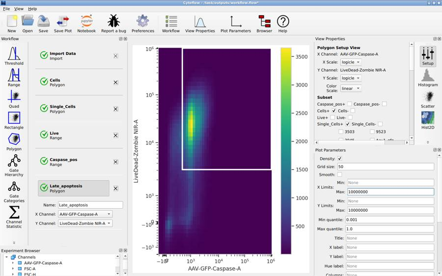
text(await tools.exec_command({cmd:"cu key Return && cu click 1239 685 && cu key Return && sleep 9 && cu screenshot /tmp/screen.png","max_output_tokens":1000}));image((await tools.view_image({path:"/tmp/screen.png"})).image_url);
Script completed Wall time 9.2 seconds Output:
{"chunk_id":"7e7094","wall_time_seconds":9.028692181,"exit_code":0,"original_token_count":4,"output":"/tmp/screen.png\n"}text(await tools.exec_command({cmd:"cu click 1430 487 && cu click 241 523 && sleep 0.5 && cu screenshot /tmp/screen.png","max_output_tokens":1000}));image((await tools.view_image({path:"/tmp/screen.png"})).image_url);
Script completed Wall time 0.8 seconds Output:
{"chunk_id":"4ac197","wall_time_seconds":0.613316216,"exit_code":0,"original_token_count":4,"output":"/tmp/screen.png\n"}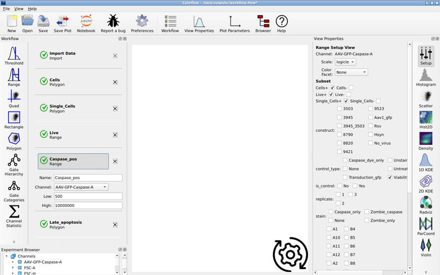
text(await tools.exec_command({cmd:"cu click 263 641 && cu key ctrl+a && cu paste '509.85742945056734' && cu key Tab && cu click 237 737 && sleep 5 && cu key ctrl+s && cu click 47 694 && sleep 1 && cu screenshot /tmp/screen.png","max_output_tokens":1000}));image((await tools.view_image({path:"/tmp/screen.png"})).image_url);
Script completed Wall time 7.8 seconds Output:
{"chunk_id":"29921d","wall_time_seconds":7.619554379,"exit_code":0,"original_token_count":4,"output":"/tmp/screen.png\n"}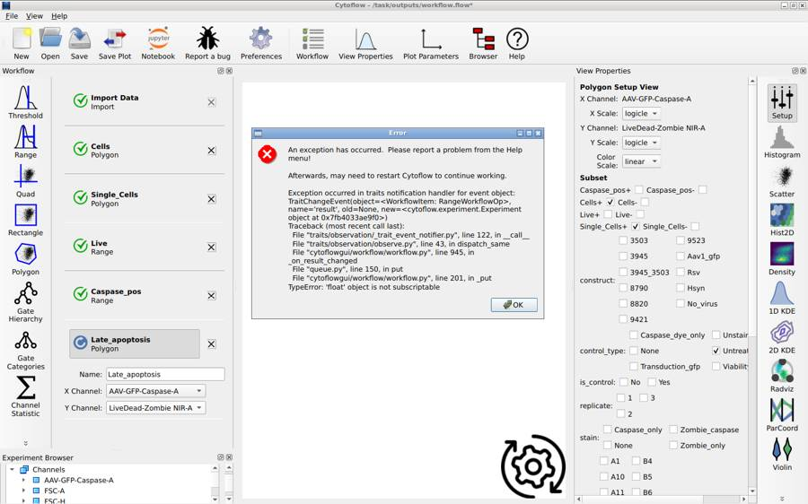
text(await tools.exec_command({cmd:"cu click 916 544 && sleep 5 && cu key ctrl+s && cu click 47 695 && sleep 1 && cu screenshot /tmp/screen.png","max_output_tokens":1000}));image((await tools.view_image({path:"/tmp/screen.png"})).image_url);
Script completed Wall time 6.3 seconds Output:
{"chunk_id":"0c32fc","wall_time_seconds":6.134362609,"exit_code":0,"original_token_count":4,"output":"/tmp/screen.png\n"}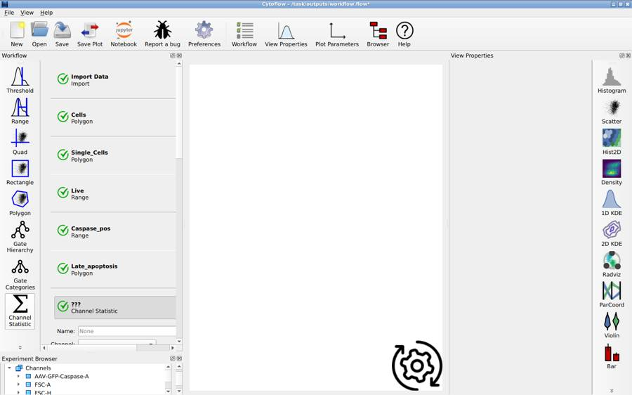
text(await tools.exec_command({cmd:"cu click 408 817 && cu scroll 330 703 down 6 && sleep 0.5 && cu screenshot /tmp/screen.png","max_output_tokens":1000}));image((await tools.view_image({path:"/tmp/screen.png"})).image_url);
Script completed Wall time 1.3 seconds Output:
{"chunk_id":"62d114","wall_time_seconds":1.108035656,"exit_code":0,"original_token_count":4,"output":"/tmp/screen.png\n"}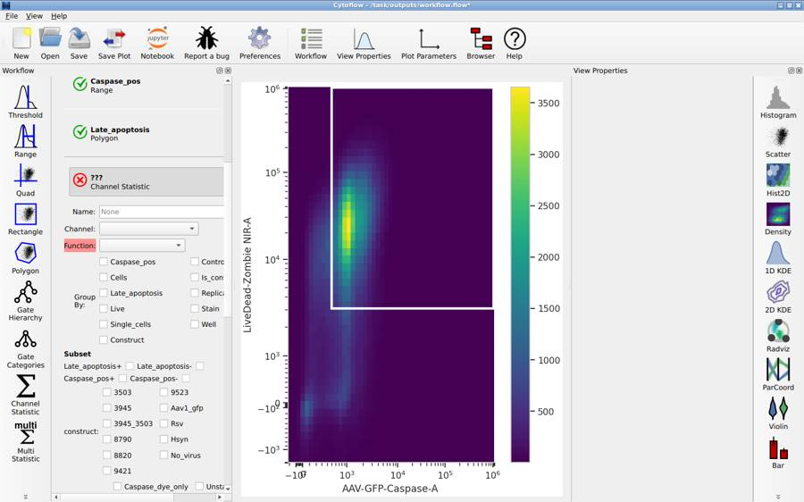
text(await tools.exec_command({cmd:"cu click 265 379 && cu key ctrl+a && cu paste 'N_All_events' && cu key Tab && cu click 344 409 && cu key Home && cu key Down && cu key Return && cu click 320 440 && cu screenshot /tmp/screen.png","max_output_tokens":1000}));image((await tools.view_image({path:"/tmp/screen.png"})).image_url);
Script completed Wall time 1.8 seconds Output:
{"chunk_id":"674f04","wall_time_seconds":1.622343943,"exit_code":0,"original_token_count":4,"output":"/tmp/screen.png\n"}text(await tools.exec_command({cmd:"cu click 210 441 && cu click 349 581 && cu scroll 1398 815 down 4 && sleep 5 && cu screenshot /tmp/screen.png","max_output_tokens":1000}));image((await tools.view_image({path:"/tmp/screen.png"})).image_url);
Script completed Wall time 5.7 seconds Output:
{"chunk_id":"924648","wall_time_seconds":5.511552459,"exit_code":0,"original_token_count":4,"output":"/tmp/screen.png\n"}text(await tools.exec_command({cmd:"cu click 1394 891 && cu click 1394 891 && cu click 1394 891 && cu screenshot /tmp/screen.png","max_output_tokens":1000}));image((await tools.view_image({path:"/tmp/screen.png"})).image_url);
Script completed Wall time 0.4 seconds Output:
{"chunk_id":"236d33","wall_time_seconds":0.214780693,"exit_code":0,"original_token_count":4,"output":"/tmp/screen.png\n"}text(await tools.exec_command({cmd:"cu click 1375 891 && sleep 0.5 && cu screenshot /tmp/screen.png","max_output_tokens":1000}));image((await tools.view_image({path:"/tmp/screen.png"})).image_url);
Script completed Wall time 0.7 seconds Output:
{"chunk_id":"408afc","wall_time_seconds":0.505963755,"exit_code":0,"original_token_count":4,"output":"/tmp/screen.png\n"}text(await tools.exec_command({cmd:"cu move 1394 890 && sleep 2 && cu screenshot /tmp/screen.png","max_output_tokens":1000}));image((await tools.view_image({path:"/tmp/screen.png"})).image_url);
Script completed Wall time 2.1 seconds Output:
{"chunk_id":"3f291b","wall_time_seconds":1.901210861,"exit_code":0,"original_token_count":4,"output":"/tmp/screen.png\n"}text(await tools.exec_command({cmd:"cu drag 1394 144 720 137 && sleep 1 && cu screenshot /tmp/screen.png","max_output_tokens":1000}));image((await tools.view_image({path:"/tmp/screen.png"})).image_url);
Script completed Wall time 1.1 seconds Output:
{"chunk_id":"bfcee4","wall_time_seconds":0.933790619,"exit_code":0,"original_token_count":4,"output":"/tmp/screen.png\n"}text(await tools.exec_command({cmd:"cu click 1430 182 && cu screenshot /tmp/screen.png","max_output_tokens":1000}));image((await tools.view_image({path:"/tmp/screen.png"})).image_url);
Script completed Wall time 0.2 seconds Output:
{"chunk_id":"7bafc5","wall_time_seconds":0.004657392,"exit_code":0,"original_token_count":4,"output":"/tmp/screen.png\n"}text(await tools.exec_command({cmd:"sleep 1 && cu screenshot /tmp/screen.png","max_output_tokens":1000}));image((await tools.view_image({path:"/tmp/screen.png"})).image_url);
Script completed Wall time 1.1 seconds Output:
{"chunk_id":"3c71b1","wall_time_seconds":0.899351536,"exit_code":0,"original_token_count":4,"output":"/tmp/screen.png\n"}text(await tools.exec_command({cmd:"cu click 1246 314 && sleep 1 && cu screenshot /tmp/screen.png","max_output_tokens":1000}));image((await tools.view_image({path:"/tmp/screen.png"})).image_url);
Script completed Wall time 1.2 seconds Output:
{"chunk_id":"79c82f","wall_time_seconds":1.004803077,"exit_code":0,"original_token_count":4,"output":"/tmp/screen.png\n"}text(await tools.exec_command({cmd:"cu click 1430 181 && sleep 0.5 && cu screenshot /tmp/screen.png","max_output_tokens":1000}));image((await tools.view_image({path:"/tmp/screen.png"})).image_url);
Script completed Wall time 0.7 seconds Output:
{"chunk_id":"d2b952","wall_time_seconds":0.503955864,"exit_code":0,"original_token_count":4,"output":"/tmp/screen.png\n"}text(await tools.exec_command({cmd:"cu click 1211 272 && cu screenshot /tmp/screen.png","max_output_tokens":1000}));image((await tools.view_image({path:"/tmp/screen.png"})).image_url);
Script completed Wall time 0.2 seconds Output:
{"chunk_id":"6d4a93","wall_time_seconds":0.00004678,"exit_code":0,"original_token_count":4,"output":"/tmp/screen.png\n"}text(await tools.exec_command({cmd:"cu click 1169 297 && cu click 1186 302 && cu key Home && cu key Return && cu click 1164 332 && cu key End && cu key Return && sleep 2 && cu screenshot /tmp/screen.png","max_output_tokens":1000}));image((await tools.view_image({path:"/tmp/screen.png"})).image_url);
Script completed Wall time 2.4 seconds Output:
{"chunk_id":"dcbdff","wall_time_seconds":2.272894894,"exit_code":0,"original_token_count":4,"output":"/tmp/screen.png\n"}text(await tools.exec_command({cmd:"cu click 1165 332 && cu screenshot /tmp/screen.png","max_output_tokens":1000}));image((await tools.view_image({path:"/tmp/screen.png"})).image_url);
Script completed Wall time 0.2 seconds Output:
{"chunk_id":"12b7d7","wall_time_seconds":0.00008949,"exit_code":0,"original_token_count":4,"output":"/tmp/screen.png\n"}text(await tools.exec_command({cmd:"cu click 1135 308 && sleep 1 && cu click 1268 484 && sleep 0.5 && cu screenshot /tmp/screen.png","max_output_tokens":1000}));image((await tools.view_image({path:"/tmp/screen.png"})).image_url);
Script completed Wall time 1.8 seconds Output:
{"chunk_id":"212cd7","wall_time_seconds":1.6155662309999999,"exit_code":0,"original_token_count":4,"output":"/tmp/screen.png\n"}text(await tools.exec_command({cmd:"cu paste '/task/outputs/work/All_events.csv' && cu key Return && sleep 1 && cu key ctrl+s && cu scroll 316 740 down 6 && cu screenshot /tmp/screen.png","max_output_tokens":1000}));image((await tools.view_image({path:"/tmp/screen.png"})).image_url);
Script completed Wall time 3.1 seconds Output:
{"chunk_id":"b9ad81","wall_time_seconds":2.884322729,"exit_code":0,"original_token_count":4,"output":"/tmp/screen.png\n"}text(await tools.exec_command({cmd:"ls -ld /task/outputs /task/outputs/work && ls -lh /task/outputs/work && chmod a+rwx /task/outputs/work && cu click 919 481 && sleep 0.5 && cu click 1267 484 && cu paste '/task/outputs/work/All_events.csv' && cu key Return && sleep 1 && cu screenshot /tmp/screen.png","max_output_tokens":1500}));image((await tools.view_image({path:"/tmp/screen.png"})).image_url);
Script completed Wall time 3.1 seconds Output:
{"chunk_id":"f0bfee","wall_time_seconds":2.959698488,"exit_code":0,"original_token_count":50,"output":"drwxrwsrwx 3 agent task 4096 Nov 5 00:09 /task/outputs\ndrwxr-sr-x 2 root task 4096 Nov 5 00:18 /task/outputs/work\ntotal 228K\n-rw-r--r-- 1 root task 228K Nov 5 00:18 late_gate.png\n/tmp/screen.png\n"}const r=await tools.exec_command({cmd:"cat /task/outputs/work/All_events.csv && cu scroll 312 748 down 6 && sleep 0.5 && cu screenshot /tmp/screen.png","max_output_tokens":2500});text(r.output);image((await tools.view_image({path:"/tmp/screen.png"})).image_url);
Script completed Wall time 1.2 seconds Output:
well = A1,183353.0 well = A10,335810.0 well = A11,228556.0 well = A12,330844.0 well = A2,221770.0 well = A3,222545.0 well = A4,160440.0 well = A5,169911.0 well = A6,230857.0 well = A7,282723.0 well = A8,236938.0 well = A9,241833.0 well = B1,254845.0 well = B10,187472.0 well = B11,271438.0 well = B12,286933.0 well = B2,319449.0 well = B3,275473.0 well = B4,219859.0 well = B5,225148.0 well = B6,369018.0 well = B7,186946.0 well = B8,412353.0 well = B9,219409.0 well = C1,250794.0 well = C10,276619.0 well = C11,364071.0 well = C12,307442.0 well = C2,305451.0 well = C3,418796.0 well = C4,230134.0 well = C5,206789.0 well = C6,189779.0 well = C7,317865.0 well = C8,214991.0 well = C9,222410.0 /tmp/screen.png
text(await tools.exec_command({cmd:"cu scroll 311 747 down 8 && sleep 0.5 && cu key ctrl+s && cu screenshot /tmp/screen.png && tail -260 /task/outputs/workflow.flow | head -170","max_output_tokens":3500}));image((await tools.view_image({path:"/tmp/screen.png"})).image_url);
Script completed Wall time 1.4 seconds Output:
{"chunk_id":"feddf1","wall_time_seconds":1.235140045,"exit_code":0,"original_token_count":792,"output":"/tmp/screen.png\n - 1\n - 3\n - 0\n - - 0\n - 4\n - 5\n - 6\n - 7\n - 8\n - 9\n - 10\n - 11\n - 1\n - 2\n - 3\n - 12\n - 16\n - 17\n - 18\n - 19\n - 20\n - 21\n - 22\n - 23\n - 13\n - 14\n - 15\n - 24\n - 28\n - 29\n - 30\n - 31\n - 32\n - 33\n - 34\n - 35\n - 25\n - 26\n - 27\n levels:\n - !pandas-index;1\n dtype: object\n name: construct\n values:\n - '3503'\n - '3945'\n - '3945_3503'\n - '8790'\n - '8820'\n - '9421'\n - '9523'\n - AAV1_GFP\n - RSV\n - hSyn\n - no_virus\n - !pandas-index;1\n dtype: object\n name: control_type\n values:\n - caspase_dye_only\n - none\n - transduction_gfp\n - unstained\n - untreated_no_virus\n - viability_dye_only\n - !pandas-index;1\n dtype: object\n name: is_control\n values:\n - 'no'\n - 'yes'\n - !pandas-index;1\n dtype: object\n name: replicate\n values:\n - '1'\n - '2'\n - '3'\n - !pandas-index;1\n dtype: object\n name: stain\n values:\n - caspase_only\n - none\n - zombie_caspase\n - zombie_only\n - !pandas-index;1\n dtype: object\n name: well\n values:\n - A1\n - A10\n - A11\n - A12\n - A2\n - A3\n - A4\n - A5\n - A6\n - A7\n - A8\n - A9\n - B1\n - B10\n - B11\n - B12\n - B2\n - B3\n - B4\n - B5\n - B6\n - B7\n - B8\n - B9\n - C1\n - C10\n - C11\n - C12\n - C2\n - C3\n - C4\n - C5\n - C6\n - C7\n - C8\n - C9\n names:\n - construct\n - control_type\n - is_control\n - replicate\n - stain\n - well\n N_All_events: !pandas-dataframe;1\n columns:\n - FSC-A\n data:\n FSC-A: !pandas-series;3\n data:\n - 183353.0\n - 335810.0\n - 228556.0\n - 330844.0\n - 221770.0\n - 222545.0\n - 160440.0\n - 169911.0\n - 230857.0\n - 282723.0\n - 236938.0\n - 241833.0\n - 254845.0\n - 187472.0\n - 271438.0\n - 286933.0\n - 319449.0\n - 275473.0\n - 219859.0\n - 225148.0\n - 369018.0\n - 186946.0\n - 412353.0\n - 219409.0\n - 250794.0\n - 276619.0\n - 364071.0\n - 307442.0\n - 305451.0\n - 418796.0\n - 230134.0\n"}text(await tools.exec_command({cmd:"cu click 47 694 && sleep 0.5 && cu scroll 323 741 down 10 && sleep 0.5 && cu screenshot /tmp/screen.png","max_output_tokens":1000}));image((await tools.view_image({path:"/tmp/screen.png"})).image_url);
Script completed Wall time 2.2 seconds Output:
{"chunk_id":"3d6c4a","wall_time_seconds":2.009767913,"exit_code":0,"original_token_count":4,"output":"/tmp/screen.png\n"}text(await tools.exec_command({cmd:"cu click 168 650 && cu scroll 315 460 up 10 && sleep 0.5 && cu screenshot /tmp/screen.png","max_output_tokens":1000}));image((await tools.view_image({path:"/tmp/screen.png"})).image_url);
Script completed Wall time 1.7 seconds Output:
{"chunk_id":"cb9a1e","wall_time_seconds":1.5120907909999999,"exit_code":0,"original_token_count":4,"output":"/tmp/screen.png\n"}text(await tools.exec_command({cmd:"cu click 271 196 && cu key ctrl+a && cu paste 'N_Cells' && cu key Tab && cu click 344 226 && cu key Home && cu key Down && cu key Return && cu click 320 256 && cu key Home && cu key Return && cu click 348 398 && cu click 1430 182 && sleep 1 && cu click 1244 314 && cu click 1430 182 && sleep 5 && cu screenshot /tmp/screen.png","max_output_tokens":1000}));image((await tools.view_image({path:"/tmp/screen.png"})).image_url);
Script completed Wall time 8.3 seconds Output:
{"chunk_id":"a1a3b0","wall_time_seconds":8.087702709,"exit_code":0,"original_token_count":4,"output":"/tmp/screen.png\n"}text(await tools.exec_command({cmd:"sleep 3 && cu click 1210 272 && cu key End && cu key Return && sleep 1 && cu click 1184 302 && cu key Home && cu key Return && cu click 1163 331 && cu key Home && cu key Return && sleep 1 && cu screenshot /tmp/screen.png","max_output_tokens":1000}));image((await tools.view_image({path:"/tmp/screen.png"})).image_url);
Script completed Wall time 5.5 seconds Output:
{"chunk_id":"53e35d","wall_time_seconds":5.305417229,"exit_code":0,"original_token_count":4,"output":"/tmp/screen.png\n"}text(await tools.exec_command({cmd:"cu click 1268 484 && cu paste '/task/outputs/work/Cells.csv' && cu key Return && sleep 1 && cu click 47 694 && sleep 0.5 && cu scroll 320 740 down 15 && sleep 0.5 && cu screenshot /tmp/screen.png","max_output_tokens":1000}));image((await tools.view_image({path:"/tmp/screen.png"})).image_url);
Script completed Wall time 5.1 seconds Output:
{"chunk_id":"89fa0b","wall_time_seconds":4.964709539,"exit_code":0,"original_token_count":4,"output":"/tmp/screen.png\n"}text(await tools.exec_command({cmd:"cu click 168 650 && cu click 213 673 && cu scroll 315 460 up 10 && sleep 0.5 && cu click 271 196 && cu key ctrl+a && cu paste 'N_Single_Cells' && cu key Tab && cu click 344 226 && cu key Home && cu key Down && cu key Return && cu click 320 256 && cu key Home && cu key Return && cu click 348 398 && cu click 1430 182 && sleep 1 && cu click 1244 314 && cu click 1430 182 && sleep 7 && cu screenshot /tmp/screen.png","yield_time_ms":1000,"max_output_tokens":1000}));
Script completed
Wall time 1.2 seconds
Output:
{"chunk_id":"ec479a","wall_time_seconds":1.001122315,"session_id":64382,"original_token_count":0,"output":""}text(await tools.write_stdin({session_id:64382,chars:"","yield_time_ms":1000,"max_output_tokens":1000}));image((await tools.view_image({path:"/tmp/screen.png"})).image_url);
Script completed Wall time 4.6 seconds Output:
{"chunk_id":"b06e72","wall_time_seconds":4.60382286,"exit_code":0,"original_token_count":4,"output":"/tmp/screen.png\n"}text(await tools.exec_command({cmd:"cu click 1210 272 && cu key End && cu key Return && sleep 1 && cu click 1184 302 && cu key Home && cu key Return && cu click 1163 331 && cu key Home && cu key Return && sleep 1 && cu click 1268 484 && cu paste '/task/outputs/work/Single_Cells.csv' && cu key Return && sleep 1 && cu key ctrl+s && cu screenshot /tmp/screen.png","max_output_tokens":1000}));image((await tools.view_image({path:"/tmp/screen.png"})).image_url);
Script completed Wall time 5.0 seconds Output:
{"chunk_id":"7a8c01","wall_time_seconds":4.7844782089999995,"exit_code":0,"original_token_count":4,"output":"/tmp/screen.png\n"}text(await tools.exec_command({cmd:"cu click 47 694 && sleep 0.5 && cu scroll 320 740 down 15 && sleep 0.5 && cu click 168 650 && cu click 213 673 && cu click 164 835 && cu scroll 315 460 up 10 && sleep 0.5 && cu click 271 196 && cu key ctrl+a && cu paste 'N_Live' && cu key Tab && cu click 344 226 && cu key Home && cu key Down && cu key Return && cu click 320 256 && cu key Home && cu key Return && cu click 348 398 && cu click 1430 182 && sleep 1 && cu click 1244 314 && cu click 1430 182 && sleep 7 && cu screenshot /tmp/screen.png","yield_time_ms":1000,"max_output_tokens":1000}));
Script completed
Wall time 1.2 seconds
Output:
{"chunk_id":"a1257c","wall_time_seconds":1.001179615,"session_id":55352,"original_token_count":0,"output":""}text(await tools.write_stdin({session_id:55352,chars:"","yield_time_ms":1000,"max_output_tokens":1000}));image((await tools.view_image({path:"/tmp/screen.png"})).image_url);
Script completed Wall time 0.0 seconds Output:
{"chunk_id":"950822","wall_time_seconds":0.00000393,"exit_code":0,"original_token_count":4,"output":"/tmp/screen.png\n"}text(await tools.exec_command({cmd:"cu click 1210 272 && cu screenshot /tmp/screen.png","max_output_tokens":1000}));image((await tools.view_image({path:"/tmp/screen.png"})).image_url);
Script completed Wall time 0.2 seconds Output:
{"chunk_id":"fa231f","wall_time_seconds":0.002855661,"exit_code":0,"original_token_count":4,"output":"/tmp/screen.png\n"}text(await tools.exec_command({cmd:"cu click 1158 344 && sleep 0.5 && cu click 1184 302 && cu key Home && cu key Return && cu click 1163 331 && cu key Home && cu key Return && sleep 1 && cu click 1268 484 && cu paste '/task/outputs/work/Live.csv' && cu key Return && sleep 1 && cu key ctrl+s && cu screenshot /tmp/screen.png","max_output_tokens":1000}));image((await tools.view_image({path:"/tmp/screen.png"})).image_url);
Script completed Wall time 4.4 seconds Output:
{"chunk_id":"5f72c4","wall_time_seconds":4.254454346,"exit_code":0,"original_token_count":4,"output":"/tmp/screen.png\n"}text(await tools.exec_command({cmd:"cu click 47 694 && sleep 0.5 && cu scroll 320 740 down 15 && sleep 0.5 && cu click 168 650 && cu click 213 673 && cu click 164 835 && cu scroll 315 460 up 10 && sleep 0.5 && cu click 220 494 && cu click 271 196 && cu key ctrl+a && cu paste 'N_Caspase_pos' && cu key Tab && cu click 344 226 && cu key Home && cu key Down && cu key Return && cu click 320 256 && cu key Home && cu key Return && cu click 348 398 && cu click 1430 182 && sleep 1 && cu click 1244 314 && cu click 1430 182 && sleep 7 && cu screenshot /tmp/screen.png","yield_time_ms":1000,"max_output_tokens":1000}));
Script completed
Wall time 1.2 seconds
Output:
{"chunk_id":"2e9e6a","wall_time_seconds":1.001285575,"session_id":19933,"original_token_count":0,"output":""}text(await tools.write_stdin({session_id:19933,chars:"","yield_time_ms":1000,"max_output_tokens":1000}));image((await tools.view_image({path:"/tmp/screen.png"})).image_url);
Script completed Wall time 5.0 seconds Output:
{"chunk_id":"b72025","wall_time_seconds":5.000710292,"session_id":19933,"original_token_count":0,"output":""}text(await tools.write_stdin({session_id:19933,chars:"","yield_time_ms":1000,"max_output_tokens":1000}));image((await tools.view_image({path:"/tmp/screen.png"})).image_url);
Script completed Wall time 0.0 seconds Output:
{"chunk_id":"234383","wall_time_seconds":0.00000397,"exit_code":0,"original_token_count":4,"output":"/tmp/screen.png\n"}text(await tools.exec_command({cmd:"cu click 1210 272 && cu key Home && cu key Down && cu key Down && cu key Return && sleep 0.5 && cu click 1184 302 && cu key Home && cu key Return && cu click 1163 331 && cu key Home && cu key Return && sleep 1 && cu click 1268 484 && cu paste '/task/outputs/work/Caspase_pos.csv' && cu key Return && sleep 1 && cu key ctrl+s && cu screenshot /tmp/screen.png","max_output_tokens":1000}));image((await tools.view_image({path:"/tmp/screen.png"})).image_url);
Script completed Wall time 4.5 seconds Output:
{"chunk_id":"c8ae46","wall_time_seconds":4.31731944,"exit_code":0,"original_token_count":4,"output":"/tmp/screen.png\n"}text(await tools.exec_command({cmd:"cu click 47 694 && sleep 0.5 && cu scroll 320 740 down 15 && sleep 0.5 && cu click 168 650 && cu click 213 673 && cu scroll 315 460 up 10 && sleep 0.5 && cu click 232 473 && cu click 271 196 && cu key ctrl+a && cu paste 'N_Late_apoptosis' && cu key Tab && cu click 344 226 && cu key Home && cu key Down && cu key Return && cu click 320 256 && cu key Home && cu key Return && cu click 348 398 && cu click 1430 182 && sleep 1 && cu click 1244 314 && cu click 1430 182 && sleep 7 && cu screenshot /tmp/screen.png","yield_time_ms":1000,"max_output_tokens":1000}));
Script completed
Wall time 1.2 seconds
Output:
{"chunk_id":"04f23b","wall_time_seconds":1.001003095,"session_id":93027,"original_token_count":0,"output":""}text(await tools.exec_command({cmd:"python - <<'PY'\nimport yaml\nwith open('/task/outputs/workflow.flow') as f: w=yaml.load(f, Loader=yaml.BaseLoader)\nfor item in w:\n op=item['operation']\n print(op.get('name', '(import)'), 'function=',op.get('function'),'by=',op.get('by'), 'low=',op.get('low'), 'high=',op.get('high'))\n if 'subset_list' in op:\n print(' subset=',[(s.get('name'),s.get('selected_t'),s.get('selected_f'),s.get('selected')) for s in op['subset_list'] if s.get('selected_t')=='true' or s.get('selected_f')=='true' or s.get('selected')])\nPY","max_output_tokens":2000}));
text(await tools.write_stdin({session_id:93027,chars:"","yield_time_ms":1000,"max_output_tokens":1000}));image((await tools.view_image({path:"/tmp/screen.png"})).image_url);
Script completed Wall time 0.0 seconds Output:
{"chunk_id":"e3ca4d","wall_time_seconds":0.00000431,"exit_code":127,"original_token_count":12,"output":"/bin/bash: line 1: python: command not found\n"}{"chunk_id":"c77bd3","wall_time_seconds":0.00000286,"exit_code":0,"original_token_count":4,"output":"/tmp/screen.png\n"}text(await tools.exec_command({cmd:"cu click 1210 272 && cu key Home && cu key Down && cu key Down && cu key Down && cu key Down && cu key Return && sleep 0.5 && cu click 1184 302 && cu key Home && cu key Return && cu click 1163 331 && cu key Home && cu key Return && sleep 1 && cu click 1268 484 && cu paste '/task/outputs/work/Late_apoptosis.csv' && cu key Return && sleep 1 && cu key ctrl+s && cu screenshot /tmp/screen.png","max_output_tokens":1000}));image((await tools.view_image({path:"/tmp/screen.png"})).image_url);
text(await tools.exec_command({cmd:"python3 - <<'PY'\nimport yaml\nwith open('/task/outputs/workflow.flow') as f: w=yaml.load(f, Loader=yaml.BaseLoader)\nfor item in w:\n op=item['operation']\n print(op.get('name', '(import)'), 'function=',op.get('function'),'by=',op.get('by'), 'low=',op.get('low'), 'high=',op.get('high'))\n if 'subset_list' in op:\n print(' subset=',[(s.get('name'),s.get('selected_t'),s.get('selected_f'),s.get('selected')) for s in op['subset_list'] if s.get('selected_t')=='true' or s.get('selected_f')=='true' or s.get('selected')])\nPY","max_output_tokens":2500}));
Script completed Wall time 4.6 seconds Output:
{"chunk_id":"0c9aa6","wall_time_seconds":4.337177597,"exit_code":0,"original_token_count":4,"output":"/tmp/screen.png\n"}{"chunk_id":"b7f702","wall_time_seconds":0.00000448,"exit_code":1,"original_token_count":30,"output":"Traceback (most recent call last):\n File \"<stdin>\", line 3, in <module>\nTypeError: 'NoneType' object is not iterable\n"}text(await tools.exec_command({cmd:"sleep 1 && python3 - <<'PY'\nimport yaml, pandas as pd\nwith open('/task/outputs/workflow.flow') as f: w=yaml.load(f, Loader=yaml.BaseLoader)\nfor item in w:\n op=item['operation']\n print(op.get('name', '(import)'), 'function=',op.get('function'),'by=',op.get('by'), 'low=',op.get('low'), 'high=',op.get('high'))\n if 'subset_list' in op:\n print(' subset=',[(s.get('name'),s.get('selected_t'),s.get('selected_f'),s.get('selected')) for s in op['subset_list'] if s.get('selected_t')=='true' or s.get('selected_f')=='true' or s.get('selected')])\nlayout=pd.read_csv('/task/inputs/plate_layout.csv')\npops=['All_events','Cells','Single_Cells','Live','Caspase_pos','Late_apoptosis']\ncounts={}\nfor pop in pops:\n t=pd.read_csv('/task/outputs/work/'+pop+'.csv',header=None,names=['well','count'])\n t['well']=t.well.str.replace('well = ','',regex=False)\n assert len(t)==36 and t.well.nunique()==36\n assert (t['count']%1==0).all()\n counts[pop]=t.set_index('well')['count'].astype(int)\nparents=['All_events','Cells','Single_Cells','Live','Single_Cells']\nrows=[]\nfor r in layout.itertuples(index=False):\n for pop,parent in zip(pops[1:],parents):\n n=int(counts[pop][r.well]); d=int(counts[parent][r.well])\n assert 0<=n<=d\n rows.append((r.file,r.well,pop,n,parent,100*n/d if d else 0.0))\nout=pd.DataFrame(rows,columns=['file','well','population','count','parent_population','pct_of_parent'])\nout.to_csv('/task/outputs/counts.csv',index=False)\nwide=pd.DataFrame(counts).reindex(layout.well)\nwide.to_csv('/task/outputs/work/counts_wide.csv')\nprint(wide.to_string())\nprint('Rows',len(out),'Total events',wide.All_events.sum())\nPY","max_output_tokens":5000}));
Script completed
Wall time 1.6 seconds
Output:
{"chunk_id":"cba06e","wall_time_seconds":1.485609971,"exit_code":0,"original_token_count":1049,"output":"(import) function= None by= None low= None high= None\nCells function= None by= None low= None high= None\nSingle_Cells function= None by= None low= None high= None\nLive function= None by= None low= -1000000.0 high= 1000.0\nCaspase_pos function= None by= None low= 509.85742945056734 high= 10000000.0\nLate_apoptosis function= None by= None low= None high= None\nN_All_events function= None by= ['well'] low= None high= None\n subset= []\nN_Cells function= None by= ['well'] low= None high= None\n subset= [('Cells', 'true', 'false', None)]\nN_Single_Cells function= None by= ['well'] low= None high= None\n subset= [('Cells', 'true', 'false', None), ('Single_Cells', 'true', 'false', None)]\nN_Live function= None by= ['well'] low= None high= None\n subset= [('Cells', 'true', 'false', None), ('Live', 'true', 'false', None), ('Single_Cells', 'true', 'false', None)]\nN_Caspase_pos function= None by= ['well'] low= None high= None\n subset= [('Caspase_pos', 'true', 'false', None), ('Cells', 'true', 'false', None), ('Live', 'true', 'false', None), ('Single_Cells', 'true', 'false', None)]\nN_Late_apoptosis function= None by= ['well'] low= None high= None\n subset= [('Cells', 'true', 'false', None), ('Late_apoptosis', 'true', 'false', None), ('Single_Cells', 'true', 'false', None)]\n All_events Cells Single_Cells Live Caspase_pos Late_apoptosis\nwell \nA1 183353 125436 113908 2183 740 87048\nA2 221770 151703 133397 6888 1967 98233\nA3 222545 155783 142950 7997 3762 105372\nA4 160440 115726 104288 4313 1304 79552\nA5 169911 118651 107554 7838 3021 78094\nA6 230857 162334 146612 11143 3192 109077\nA7 282723 195152 167622 12568 3068 121741\nA8 236938 167291 144878 16582 5579 101619\nA9 241833 172715 152256 9303 2557 115377\nA10 335810 232256 203892 8188 2116 155756\nA11 228556 152761 136404 10361 3678 101018\nA12 330844 222770 196035 11341 3609 147139\nB1 254845 172739 150647 14169 4177 104885\nB2 319449 214404 183720 27173 11496 120741\nB3 275473 191066 165689 20193 7434 115656\nB4 219859 147197 131463 6042 1925 96830\nB5 225148 151047 134761 9464 3212 97374\nB6 369018 247041 215934 18669 8405 154728\nB7 186946 127141 117005 5914 2176 88481\nB8 412353 281162 245864 15784 7110 178288\nB9 219409 149863 134776 6900 2504 101258\nB10 187472 125690 115479 4878 1641 86033\nB11 271438 187895 169028 10628 4486 127177\nB12 286933 197418 178145 11221 5126 131425\nC1 250794 179947 152540 3606 763 106003\nC2 305451 221208 189157 9261 3192 141974\nC3 418796 292811 247019 21324 9690 172986\nC4 230134 160920 145974 3079 1313 113059\nC5 206789 145753 132233 3734 1725 102803\nC6 189779 131656 120894 2032 1038 97728\nC7 317865 210121 178151 31904 19467 108753\nC8 214991 138180 120200 8425 3043 86066\nC9 222410 145956 124371 17891 7943 80546\nC10 276619 189083 160217 160169 32131 10\nC11 364071 242439 196918 32285 964 32151\nC12 307442 207814 176099 176012 138199 50\nRows 180 Total events 9379064\n"}text(await tools.exec_command({cmd:"cu click 1153 173 && sleep 1 && cu screenshot /tmp/screen.png","max_output_tokens":1000}));image((await tools.view_image({path:"/tmp/screen.png"})).image_url);
Script completed Wall time 1.2 seconds Output:
{"chunk_id":"edc01b","wall_time_seconds":1.004173166,"exit_code":0,"original_token_count":4,"output":"/tmp/screen.png\n"}text(await tools.exec_command({cmd:"cu click 1245 572 && cu key w && cu key Return && cu click 1297 272 && cu key End && cu key Return && cu click 1297 333 && cu key Home && cu key Down && cu key Return && sleep 8 && cu screenshot /tmp/screen.png","max_output_tokens":1000}));image((await tools.view_image({path:"/tmp/screen.png"})).image_url);
Script completed Wall time 8.5 seconds Output:
{"chunk_id":"d89604","wall_time_seconds":8.337253695,"exit_code":0,"original_token_count":4,"output":"/tmp/screen.png\n"}text(await tools.exec_command({cmd:"rg -n 'timestep|TIMESTEP|Time:|vol|date' /task/outputs/workflow.flow | head -40 && cu click 1190 362 && cu key Home && cu key Down && cu key Return && sleep 5 && cu screenshot /task/outputs/work/time_A1.png","max_output_tokens":1500}));image((await tools.view_image({path:"/task/outputs/work/time_A1.png"})).image_url);
Script completed Wall time 5.3 seconds Output:
{"chunk_id":"bb874a","wall_time_seconds":5.076029271,"exit_code":0,"original_token_count":249,"output":"182: voltage: '250'\n187: voltage: '30'\n192: voltage: '30'\n197: voltage: '30'\n202: voltage: '300'\n207: voltage: '300'\n212: voltage: '300'\n217: voltage: '300'\n218: Time:\n222: voltage: NA\n1315: voltage: '250'\n1327: voltage: '30'\n1332: voltage: '30'\n1337: voltage: '30'\n1342: voltage: '300'\n1347: voltage: '300'\n1352: voltage: '300'\n1357: voltage: '300'\n1358: Time:\n1362: voltage: NA\n2133: voltage: '250'\n2145: voltage: '30'\n2150: voltage: '30'\n2155: voltage: '30'\n2160: voltage: '300'\n2165: voltage: '300'\n2170: voltage: '300'\n2175: voltage: '300'\n2183: Time:\n2187: voltage: NA\n2953: voltage: '250'\n2965: voltage: '30'\n2970: voltage: '30'\n2975: voltage: '30'\n2987: voltage: '300'\n2992: voltage: '300'\n2997: voltage: '300'\n3002: voltage: '300'\n3010: Time:\n3014: voltage: NA\n/task/outputs/work/time_A1.png\n"}text(await tools.exec_command({cmd:"cu click 483 139 && cu key Right && sleep 5 && cu screenshot /task/outputs/work/time_A2.png","max_output_tokens":1000}));image((await tools.view_image({path:"/task/outputs/work/time_A2.png"})).image_url);
Script completed Wall time 5.2 seconds Output:
{"chunk_id":"6c70d9","wall_time_seconds":5.043172399,"exit_code":0,"original_token_count":8,"output":"/task/outputs/work/time_A2.png\n"}text(await tools.exec_command({cmd:"cu click 526 139 && sleep 5 && cu screenshot /task/outputs/work/time_A2.png","max_output_tokens":1000}));image((await tools.view_image({path:"/task/outputs/work/time_A2.png"})).image_url);
Script completed Wall time 5.2 seconds Output:
{"chunk_id":"e5f2ae","wall_time_seconds":5.029935403,"exit_code":0,"original_token_count":8,"output":"/task/outputs/work/time_A2.png\n"}text(await tools.exec_command({cmd:"for spec in 'A3 567' 'A4 609' 'A5 650' 'A6 692'; do set -- $spec; cu click \"$2\" 139; sleep 6; cu screenshot \"/task/outputs/work/time_$1.png\"; done\npython3 - <<'PY'\nfrom PIL import Image,ImageDraw\nwells=['A1','A2','A3','A4','A5','A6']\nout=Image.new('RGB',(1152,2310),'white')\nfor i,w in enumerate(wells):\n im=Image.open('/task/outputs/work/time_'+w+'.png').crop((432,125,1008,895))\n ImageDraw.Draw(im).text((85,35),w,fill='black',stroke_width=1)\n out.paste(im,((i%2)*576,(i//2)*770))\nout.save('/task/outputs/work/time_A1_A6.png')\nPY","yield_time_ms":1000,"max_output_tokens":1000}));
Script completed
Wall time 1.2 seconds
Output:
{"chunk_id":"c52943","wall_time_seconds":1.001669765,"session_id":79759,"original_token_count":0,"output":""}text(await tools.write_stdin({session_id:79759,chars:"","yield_time_ms":1000,"max_output_tokens":1000}));image((await tools.view_image({path:"/task/outputs/work/time_A1_A6.png",detail:"original"})).image_url);
Script completed Wall time 0.0 seconds Output:
{"chunk_id":"cd7655","wall_time_seconds":0.00000354,"exit_code":0,"original_token_count":31,"output":"/task/outputs/work/time_A3.png\n/task/outputs/work/time_A4.png\n/task/outputs/work/time_A5.png\n/task/outputs/work/time_A6.png\n"}text(await tools.exec_command({cmd:"cat > /task/outputs/work/montage.py <<'PY'\nfrom PIL import Image,ImageDraw,ImageFont\nimport sys\nprefix,outname,*wells=sys.argv[1:]\nfont=ImageFont.truetype('/usr/share/fonts/truetype/dejavu/DejaVuSans.ttf',22)\nout=Image.new('RGB',(1152,800*((len(wells)+1)//2)),'white')\nfor i,w in enumerate(wells):\n im=Image.open('/task/outputs/work/'+prefix+'_'+w+'.png').crop((432,125,1008,895))\n x,y=(i%2)*576,(i//2)*800\n out.paste(im,(x,y+30))\n ImageDraw.Draw(out).text((x+10,y+2),prefix+' '+w,fill='black',font=font)\nout.save('/task/outputs/work/'+outname+'.png')\nPY\nfor spec in 'A7 733' 'A8 775' 'A9 815' 'A10 863' 'A11 911' 'A12 959'; do set -- $spec; cu click \"$2\" 139; sleep 6; cu screenshot \"/task/outputs/work/time_$1.png\"; done\npython3 /task/outputs/work/montage.py time time_A7_A12 A7 A8 A9 A10 A11 A12","yield_time_ms":1000,"max_output_tokens":1000}));
Script completed
Wall time 1.2 seconds
Output:
{"chunk_id":"274d94","wall_time_seconds":1.000824535,"session_id":12948,"original_token_count":0,"output":""}text(await tools.write_stdin({session_id:12948,chars:"","yield_time_ms":1000,"max_output_tokens":1000}));image((await tools.view_image({path:"/task/outputs/work/time_A7_A12.png",detail:"original"})).image_url);
Script completed Wall time 0.0 seconds Output:
{"chunk_id":"da35c8","wall_time_seconds":0.00000337,"exit_code":0,"original_token_count":48,"output":"/task/outputs/work/time_A7.png\n/task/outputs/work/time_A8.png\n/task/outputs/work/time_A9.png\n/task/outputs/work/time_A10.png\n/task/outputs/work/time_A11.png\n/task/outputs/work/time_A12.png\n"}text(await tools.exec_command({cmd:"for i in $(seq 1 12); do cu click 999 139; done\nsleep 1\ncu screenshot /tmp/screen.png","max_output_tokens":1000}));image((await tools.view_image({path:"/tmp/screen.png"})).image_url);
Script completed Wall time 2.4 seconds Output:
{"chunk_id":"dc6f2e","wall_time_seconds":2.171959565,"exit_code":0,"original_token_count":4,"output":"/tmp/screen.png\n"}text(await tools.exec_command({cmd:"for spec in 'B1 471' 'B2 513' 'B3 555' 'B4 596' 'B5 638' 'B6 680'; do set -- $spec; cu click \"$2\" 139; sleep 6; cu screenshot \"/task/outputs/work/time_$1.png\"; done\npython3 /task/outputs/work/montage.py time time_B1_B6 B1 B2 B3 B4 B5 B6","yield_time_ms":1000,"max_output_tokens":1000}));
Script completed
Wall time 1.2 seconds
Output:
{"chunk_id":"74b679","wall_time_seconds":1.001073404,"session_id":9388,"original_token_count":0,"output":""}text(await tools.write_stdin({session_id:9388,chars:"","yield_time_ms":1000,"max_output_tokens":1000}));image((await tools.view_image({path:"/task/outputs/work/time_B1_B6.png",detail:"original"})).image_url);
Script completed Wall time 0.0 seconds Output:
{"chunk_id":"152bc2","wall_time_seconds":0.00000368,"exit_code":0,"original_token_count":47,"output":"/task/outputs/work/time_B1.png\n/task/outputs/work/time_B2.png\n/task/outputs/work/time_B3.png\n/task/outputs/work/time_B4.png\n/task/outputs/work/time_B5.png\n/task/outputs/work/time_B6.png\n"}text(await tools.exec_command({cmd:"cu screenshot /tmp/screen.png","max_output_tokens":1000}));image((await tools.view_image({path:"/tmp/screen.png"})).image_url);
Script completed Wall time 0.1 seconds Output:
{"chunk_id":"176fbd","wall_time_seconds":0.00000432,"exit_code":0,"original_token_count":4,"output":"/tmp/screen.png\n"}text(await tools.exec_command({cmd:"for spec in 'B7 742' 'B8 783' 'B9 825' 'B10 871' 'B11 921' 'B12 967'; do set -- $spec; cu click \"$2\" 139; sleep 6; cu screenshot \"/task/outputs/work/time_$1.png\"; done\npython3 /task/outputs/work/montage.py time time_B7_B12 B7 B8 B9 B10 B11 B12","yield_time_ms":1000,"max_output_tokens":1000}));
Script completed
Wall time 1.2 seconds
Output:
{"chunk_id":"c16eca","wall_time_seconds":1.000795154,"session_id":35081,"original_token_count":0,"output":""}text(await tools.write_stdin({session_id:35081,chars:"","yield_time_ms":1000,"max_output_tokens":1000}));image((await tools.view_image({path:"/task/outputs/work/time_B7_B12.png",detail:"original"})).image_url);
Script failed
Wall time 5.0 seconds
Output:
{"chunk_id":"cda81a","wall_time_seconds":5.001301423,"session_id":35081,"original_token_count":32,"output":"/task/outputs/work/time_B7.png\n/task/outputs/work/time_B8.png\n/task/outputs/work/time_B9.png\n/task/outputs/work/time_B10.png\n"}
Script error:
unable to locate image at `/task/outputs/work/time_B7_B12.png`: No such file or directory (os error 2)text(await tools.exec_command({cmd:"python3 - <<'PY'\nimport yaml\nw=yaml.load(open('/task/outputs/workflow.flow'),Loader=yaml.BaseLoader)\nfor item in w:\n op=item['operation']\n if op.get('name','').startswith('N_'):\n print({k:v for k,v in op.items() if k!='subset_list'})\nPY","max_output_tokens":1200}));
text(await tools.clock__curr_time({}));
Script completed
Wall time 0.3 seconds
Output:
{"chunk_id":"8c9a04","wall_time_seconds":0.095206057,"exit_code":0,"original_token_count":130,"output":"{'by': ['well'], 'channel': 'FSC-A', 'function_name': 'Count', 'name': 'N_All_events'}\n{'by': ['well'], 'channel': 'FSC-A', 'function_name': 'Count', 'name': 'N_Cells'}\n{'by': ['well'], 'channel': 'FSC-A', 'function_name': 'Count', 'name': 'N_Single_Cells'}\n{'by': ['well'], 'channel': 'FSC-A', 'function_name': 'Count', 'name': 'N_Live'}\n{'by': ['well'], 'channel': 'FSC-A', 'function_name': 'Count', 'name': 'N_Caspase_pos'}\n{'by': ['well'], 'channel': 'FSC-A', 'function_name': 'Count', 'name': 'N_Late_apoptosis'}\n"}
{"current_time":"2026-11-05 00:32:48 UTC"}text(await tools.write_stdin({session_id:35081,chars:"","yield_time_ms":1000,"max_output_tokens":1000}));image((await tools.view_image({path:"/task/outputs/work/time_B7_B12.png",detail:"original"})).image_url);
Script completed Wall time 0.0 seconds Output:
{"chunk_id":"21578c","wall_time_seconds":0.00000386,"exit_code":0,"original_token_count":16,"output":"/task/outputs/work/time_B11.png\n/task/outputs/work/time_B12.png\n"}text(await tools.exec_command({cmd:"for i in $(seq 1 12); do cu click 999 139; done\nsleep 1\ncu screenshot /tmp/screen.png","max_output_tokens":1000}));image((await tools.view_image({path:"/tmp/screen.png"})).image_url);
Script completed Wall time 2.4 seconds Output:
{"chunk_id":"81c27a","wall_time_seconds":2.177959387,"exit_code":0,"original_token_count":4,"output":"/tmp/screen.png\n"}text(await tools.exec_command({cmd:"for spec in 'C1 471' 'C2 513' 'C3 555' 'C4 596' 'C5 638' 'C6 680'; do set -- $spec; cu click \"$2\" 139; sleep 6; cu screenshot \"/task/outputs/work/time_$1.png\"; done\npython3 /task/outputs/work/montage.py time time_C1_C6 C1 C2 C3 C4 C5 C6","yield_time_ms":1000,"max_output_tokens":1000}));
Script completed
Wall time 1.2 seconds
Output:
{"chunk_id":"0fcd8f","wall_time_seconds":1.001080355,"session_id":94426,"original_token_count":0,"output":""}text(await tools.write_stdin({session_id:94426,chars:"","yield_time_ms":1000,"max_output_tokens":1000}));image((await tools.view_image({path:"/task/outputs/work/time_C1_C6.png",detail:"original"})).image_url);
Script completed Wall time 3.7 seconds Output:
{"chunk_id":"7ca1e4","wall_time_seconds":3.620088722,"exit_code":0,"original_token_count":47,"output":"/task/outputs/work/time_C1.png\n/task/outputs/work/time_C2.png\n/task/outputs/work/time_C3.png\n/task/outputs/work/time_C4.png\n/task/outputs/work/time_C5.png\n/task/outputs/work/time_C6.png\n"}text(await tools.exec_command({cmd:"for spec in 'C7 742' 'C8 783' 'C9 825' 'C10 871' 'C11 921' 'C12 967'; do set -- $spec; cu click \"$2\" 139; sleep 6; cu screenshot \"/task/outputs/work/time_$1.png\"; done\npython3 /task/outputs/work/montage.py time time_C7_C12 C7 C8 C9 C10 C11 C12","yield_time_ms":1000,"max_output_tokens":1000}));
Script completed
Wall time 1.2 seconds
Output:
{"chunk_id":"7e5b26","wall_time_seconds":1.001061675,"session_id":22576,"original_token_count":0,"output":""}text(await tools.write_stdin({session_id:22576,chars:"","yield_time_ms":1000,"max_output_tokens":1000}));image((await tools.view_image({path:"/task/outputs/work/time_C7_C12.png",detail:"original"})).image_url);
Script completed Wall time 0.0 seconds Output:
{"chunk_id":"d4508e","wall_time_seconds":0.00000404,"exit_code":0,"original_token_count":48,"output":"/task/outputs/work/time_C7.png\n/task/outputs/work/time_C8.png\n/task/outputs/work/time_C9.png\n/task/outputs/work/time_C10.png\n/task/outputs/work/time_C11.png\n/task/outputs/work/time_C12.png\n"}text(await tools.exec_command({cmd:"cu click 1075 172 && sleep 1 && cu screenshot /tmp/screen.png","max_output_tokens":1000}));image((await tools.view_image({path:"/tmp/screen.png"})).image_url);
Script completed Wall time 1.2 seconds Output:
{"chunk_id":"bc0180","wall_time_seconds":1.001643235,"exit_code":0,"original_token_count":4,"output":"/tmp/screen.png\n"}text(await tools.exec_command({cmd:"cu click 1213 482 && cu key w && cu key Return && cu click 1266 272 && cu key End && cu key Return && cu click 769 70 && sleep 6 && cu screenshot /tmp/screen.png","max_output_tokens":1000}));image((await tools.view_image({path:"/tmp/screen.png"})).image_url);
Script completed Wall time 6.4 seconds Output:
{"chunk_id":"2be928","wall_time_seconds":6.269997921,"exit_code":0,"original_token_count":4,"output":"/tmp/screen.png\n"}text(await tools.exec_command({cmd:"cu click 1243 520 && cu key ctrl+a && cu paste '100' && cu key Tab && cu click 1243 724 && cu key ctrl+a && cu paste '0' && cu key Tab && cu click 1243 755 && cu key ctrl+a && cu paste '42000' && cu key Tab && cu click 1243 785 && cu key ctrl+a && cu paste '0' && cu key Tab && sleep 9 && cu screenshot /tmp/screen.png","yield_time_ms":1000,"max_output_tokens":1000}));
Script completed
Wall time 1.2 seconds
Output:
{"chunk_id":"9f343b","wall_time_seconds":1.001210375,"session_id":86784,"original_token_count":0,"output":""}text(await tools.write_stdin({session_id:86784,chars:"","yield_time_ms":1000,"max_output_tokens":1000}));image((await tools.view_image({path:"/tmp/screen.png"})).image_url);
Script completed Wall time 0.0 seconds Output:
{"chunk_id":"49520b","wall_time_seconds":0.00000384,"exit_code":0,"original_token_count":4,"output":"/tmp/screen.png\n"}text(await tools.exec_command({cmd:"cu click 1243 785 && cu key ctrl+a && cu paste '0.001' && cu key Tab && cu click 1431 488 && sleep 3 && cu screenshot /task/outputs/work/rate_A1.png\nfor spec in 'A2 525' 'A3 567' 'A4 609' 'A5 650' 'A6 692'; do set -- $spec; cu click \"$2\" 139; sleep 4; cu screenshot \"/task/outputs/work/rate_$1.png\"; done\npython3 /task/outputs/work/montage.py rate rate_A1_A6 A1 A2 A3 A4 A5 A6","yield_time_ms":1000,"max_output_tokens":1000}));
Script completed
Wall time 1.2 seconds
Output:
{"chunk_id":"36078b","wall_time_seconds":1.001036705,"session_id":22213,"original_token_count":0,"output":""}text(await tools.write_stdin({session_id:22213,chars:"","yield_time_ms":1000,"max_output_tokens":1000}));image((await tools.view_image({path:"/task/outputs/work/rate_A1_A6.png",detail:"original"})).image_url);
Script completed Wall time 0.0 seconds Output:
{"chunk_id":"d32854","wall_time_seconds":0.00000337,"exit_code":0,"original_token_count":47,"output":"/task/outputs/work/rate_A1.png\n/task/outputs/work/rate_A2.png\n/task/outputs/work/rate_A3.png\n/task/outputs/work/rate_A4.png\n/task/outputs/work/rate_A5.png\n/task/outputs/work/rate_A6.png\n"}text(await tools.exec_command({cmd:"for spec in 'A7 733' 'A8 775' 'A9 815' 'A10 863' 'A11 911' 'A12 959'; do set -- $spec; cu click \"$2\" 139; sleep 4; cu screenshot \"/task/outputs/work/rate_$1.png\"; done\npython3 /task/outputs/work/montage.py rate rate_A7_A12 A7 A8 A9 A10 A11 A12","yield_time_ms":1000,"max_output_tokens":1000}));
Script completed
Wall time 1.2 seconds
Output:
{"chunk_id":"f417d1","wall_time_seconds":1.001375545,"session_id":42291,"original_token_count":0,"output":""}text(await tools.write_stdin({session_id:42291,chars:"","yield_time_ms":1000,"max_output_tokens":1000}));image((await tools.view_image({path:"/task/outputs/work/rate_A7_A12.png",detail:"original"})).image_url);
Script completed Wall time 0.0 seconds Output:
{"chunk_id":"4646ab","wall_time_seconds":0.00000375,"exit_code":0,"original_token_count":48,"output":"/task/outputs/work/rate_A7.png\n/task/outputs/work/rate_A8.png\n/task/outputs/work/rate_A9.png\n/task/outputs/work/rate_A10.png\n/task/outputs/work/rate_A11.png\n/task/outputs/work/rate_A12.png\n"}text(await tools.exec_command({cmd:"for i in $(seq 1 12); do cu click 999 139; done\nfor spec in 'B1 471' 'B2 513' 'B3 555' 'B4 596' 'B5 638' 'B6 680'; do set -- $spec; cu click \"$2\" 139; sleep 4; cu screenshot \"/task/outputs/work/rate_$1.png\"; done\npython3 /task/outputs/work/montage.py rate rate_B1_B6 B1 B2 B3 B4 B5 B6","yield_time_ms":1000,"max_output_tokens":1000}));
Script completed
Wall time 1.2 seconds
Output:
{"chunk_id":"0d592e","wall_time_seconds":1.000683805,"session_id":19068,"original_token_count":0,"output":""}text(await tools.write_stdin({session_id:19068,chars:"","yield_time_ms":1000,"max_output_tokens":1000}));image((await tools.view_image({path:"/task/outputs/work/rate_B1_B6.png",detail:"original"})).image_url);
Script completed Wall time 0.0 seconds Output:
{"chunk_id":"bf91a1","wall_time_seconds":0.00000381,"exit_code":0,"original_token_count":47,"output":"/task/outputs/work/rate_B1.png\n/task/outputs/work/rate_B2.png\n/task/outputs/work/rate_B3.png\n/task/outputs/work/rate_B4.png\n/task/outputs/work/rate_B5.png\n/task/outputs/work/rate_B6.png\n"}text(await tools.exec_command({cmd:"for spec in 'B7 742' 'B8 783' 'B9 825' 'B10 871' 'B11 921' 'B12 967'; do set -- $spec; cu click \"$2\" 139; sleep 4; cu screenshot \"/task/outputs/work/rate_$1.png\"; done\npython3 /task/outputs/work/montage.py rate rate_B7_B12 B7 B8 B9 B10 B11 B12","yield_time_ms":1000,"max_output_tokens":1000}));
Script completed
Wall time 1.2 seconds
Output:
{"chunk_id":"91a771","wall_time_seconds":1.000946734,"session_id":21692,"original_token_count":0,"output":""}text(await tools.write_stdin({session_id:21692,chars:"","yield_time_ms":1000,"max_output_tokens":1000}));image((await tools.view_image({path:"/task/outputs/work/rate_B7_B12.png",detail:"original"})).image_url);
Script completed Wall time 0.0 seconds Output:
{"chunk_id":"c3bae1","wall_time_seconds":0.00000403,"exit_code":0,"original_token_count":48,"output":"/task/outputs/work/rate_B7.png\n/task/outputs/work/rate_B8.png\n/task/outputs/work/rate_B9.png\n/task/outputs/work/rate_B10.png\n/task/outputs/work/rate_B11.png\n/task/outputs/work/rate_B12.png\n"}text(await tools.exec_command({cmd:"for i in $(seq 1 12); do cu click 999 139; done\nfor spec in 'C1 471' 'C2 513' 'C3 555' 'C4 596' 'C5 638' 'C6 680'; do set -- $spec; cu click \"$2\" 139; sleep 4; cu screenshot \"/task/outputs/work/rate_$1.png\"; done\npython3 /task/outputs/work/montage.py rate rate_C1_C6 C1 C2 C3 C4 C5 C6","yield_time_ms":1000,"max_output_tokens":1000}));
Script completed
Wall time 1.2 seconds
Output:
{"chunk_id":"d88725","wall_time_seconds":1.000863995,"session_id":28562,"original_token_count":0,"output":""}text(await tools.write_stdin({session_id:28562,chars:"","yield_time_ms":1000,"max_output_tokens":1000}));image((await tools.view_image({path:"/task/outputs/work/rate_C1_C6.png",detail:"original"})).image_url);
Script completed Wall time 0.1 seconds Output:
{"chunk_id":"d51a3f","wall_time_seconds":0.10432799,"exit_code":0,"original_token_count":47,"output":"/task/outputs/work/rate_C1.png\n/task/outputs/work/rate_C2.png\n/task/outputs/work/rate_C3.png\n/task/outputs/work/rate_C4.png\n/task/outputs/work/rate_C5.png\n/task/outputs/work/rate_C6.png\n"}text(await tools.exec_command({cmd:"for spec in 'C7 742' 'C8 783' 'C9 825' 'C10 871' 'C11 921' 'C12 967'; do set -- $spec; cu click \"$2\" 139; sleep 4; cu screenshot \"/task/outputs/work/rate_$1.png\"; done\npython3 /task/outputs/work/montage.py rate rate_C7_C12 C7 C8 C9 C10 C11 C12","yield_time_ms":1000,"max_output_tokens":1000}));
Script completed
Wall time 1.2 seconds
Output:
{"chunk_id":"a19819","wall_time_seconds":1.000338395,"session_id":48216,"original_token_count":0,"output":""}text(await tools.write_stdin({session_id:48216,chars:"","yield_time_ms":1000,"max_output_tokens":1000}));image((await tools.view_image({path:"/task/outputs/work/rate_C7_C12.png",detail:"original"})).image_url);
Script completed Wall time 0.0 seconds Output:
{"chunk_id":"bfd8c8","wall_time_seconds":0.00000345,"exit_code":0,"original_token_count":48,"output":"/task/outputs/work/rate_C7.png\n/task/outputs/work/rate_C8.png\n/task/outputs/work/rate_C9.png\n/task/outputs/work/rate_C10.png\n/task/outputs/work/rate_C11.png\n/task/outputs/work/rate_C12.png\n"}text(await tools.exec_command({cmd:"cu click 1277 172 && sleep 1 && cu screenshot /tmp/screen.png","max_output_tokens":1000}));image((await tools.view_image({path:"/tmp/screen.png"})).image_url);
Script completed Wall time 1.2 seconds Output:
{"chunk_id":"5d0143","wall_time_seconds":1.002252825,"exit_code":0,"original_token_count":4,"output":"/tmp/screen.png\n"}text(await tools.exec_command({cmd:"cu click 1217 506 && cu key w && cu key Return && cu click 1086 578 && cu click 1130 644 && cu click 1273 272 && cu key Home && cu key Return && cu click 1164 302 && cu key End && cu key Return && cu click 1273 332 && cu key Home && cu key Down && cu key Down && cu key Down && cu key Down && cu key Return && cu click 1164 362 && cu key End && cu key Return && cu click 1164 469 && cu key Home && cu key Down && cu key Return && sleep 9 && cu screenshot /tmp/screen.png","yield_time_ms":1000,"max_output_tokens":1000}));
Script completed
Wall time 1.2 seconds
Output:
{"chunk_id":"fd4a55","wall_time_seconds":1.000710655,"session_id":37973,"original_token_count":0,"output":""}text(await tools.write_stdin({session_id:37973,chars:"","yield_time_ms":1000,"max_output_tokens":1000}));image((await tools.view_image({path:"/tmp/screen.png"})).image_url);
Script completed Wall time 0.0 seconds Output:
{"chunk_id":"709779","wall_time_seconds":0.00000386,"exit_code":0,"original_token_count":4,"output":"/tmp/screen.png\n"}text(await tools.exec_command({cmd:"sleep 6 && cu screenshot /tmp/screen.png","max_output_tokens":1000}));image((await tools.view_image({path:"/tmp/screen.png"})).image_url);
Script completed Wall time 6.1 seconds Output:
{"chunk_id":"fb9dc7","wall_time_seconds":5.901457508,"exit_code":0,"original_token_count":4,"output":"/tmp/screen.png\n"}text(await tools.exec_command({cmd:"cu screenshot /task/outputs/work/fluor_A1.png\nfor spec in 'A2 525' 'A3 567' 'A4 609' 'A5 650' 'A6 692'; do set -- $spec; cu click \"$2\" 139; sleep 6; cu screenshot \"/task/outputs/work/fluor_$1.png\"; done\npython3 /task/outputs/work/montage.py fluor fluor_A1_A6 A1 A2 A3 A4 A5 A6","yield_time_ms":1000,"max_output_tokens":1000}));
Script completed
Wall time 1.2 seconds
Output:
{"chunk_id":"c1d643","wall_time_seconds":1.000419715,"session_id":3418,"original_token_count":8,"output":"/task/outputs/work/fluor_A1.png\n"}text(await tools.write_stdin({session_id:3418,chars:"","yield_time_ms":1000,"max_output_tokens":1000}));image((await tools.view_image({path:"/task/outputs/work/fluor_A1_A6.png",detail:"original"})).image_url);
Script completed Wall time 0.0 seconds Output:
{"chunk_id":"0a7625","wall_time_seconds":0.0000041,"exit_code":0,"original_token_count":40,"output":"/task/outputs/work/fluor_A2.png\n/task/outputs/work/fluor_A3.png\n/task/outputs/work/fluor_A4.png\n/task/outputs/work/fluor_A5.png\n/task/outputs/work/fluor_A6.png\n"}text(await tools.exec_command({cmd:"for spec in 'A7 733' 'A8 775' 'A9 815' 'A10 863' 'A11 911' 'A12 959'; do set -- $spec; cu click \"$2\" 139; sleep 6; cu screenshot \"/task/outputs/work/fluor_$1.png\"; done\npython3 /task/outputs/work/montage.py fluor fluor_A7_A12 A7 A8 A9 A10 A11 A12","yield_time_ms":1000,"max_output_tokens":1000}));
Script completed
Wall time 1.2 seconds
Output:
{"chunk_id":"64ca0e","wall_time_seconds":1.001385925,"session_id":84762,"original_token_count":0,"output":""}text(await tools.exec_command({cmd:"cat > /task/outputs/work/finalize_reports.py <<'PY'\nfrom pathlib import Path\nimport pandas as pd\nimport yaml\n\nroot=Path('/task/outputs')\nlayout=pd.read_csv('/task/inputs/plate_layout.csv',dtype=str)\npops=['Cells','Single_Cells','Live','Caspase_pos','Late_apoptosis']\nparents=dict(zip(pops,['All_events','Cells','Single_Cells','Live','Single_Cells']))\ncounts={}\nfor pop in ['All_events']+pops:\n tab=pd.read_csv(root/'work'/f'{pop}.csv',header=None,names=['well','count'])\n tab['well']=tab.well.str.replace('well = ','',regex=False)\n assert len(tab)==36 and tab.well.nunique()==36\n assert set(tab.well)==set(layout.well)\n assert (tab['count']%1==0).all()\n counts[pop]=tab.set_index('well')['count'].astype(int)\nwide=pd.DataFrame(counts).reindex(layout.well)\nrows=[]\nfor sample in layout.itertuples(index=False):\n for pop in pops:\n n=int(wide.loc[sample.well,pop]); p=parents[pop]\n d=int(wide.loc[sample.well,p])\n assert 0<=n<=d\n rows.append([sample.file,sample.well,pop,n,p,100*n/d if d else 0.0])\nresult=pd.DataFrame(rows,columns=['file','well','population','count','parent_population','pct_of_parent'])\nassert len(result)==180\nresult.to_csv(root/'counts.csv',index=False)\nwide.to_csv(root/'work'/'counts_wide.csv')\n\nfailures={\n'C1':('clog_or_interrupted_flow','Near-zero acquisition until Time ~5000, repeated interruptions through ~32000, and large FSC-A excursions around ~23000-25000 and ~31000-32000; 100-bin Time counts vary from near 0 to ~8500. Terminal scatter also collapses. Whole-well quantification is unreliable.'),\n'C2':('clog_or_interrupted_flow','Near-zero acquisition before Time ~5000; repeated pauses and FSC-A excursions over ~5000-21000. Time-bin counts fluctuate from <500 to ~6700 before settling near ~4000/bin. Roughly the first half of acquisition is unstable.'),\n'C7':('clog_or_interrupted_flow','Repeated flow interruptions, especially Time ~18000-19000 and ~26000-27000: 100-bin counts fall from ~3300 to <400 and near 0, followed by bursts up to ~6000. Low-FSC events occur around interruptions.'),\n'C8':('ran_dry','Terminal event-rate collapse over Time ~37000-41000 (~2200-2500/bin to near 0) with a falling FSC-A distribution, consistent with running dry. Also has a major interruption near ~23000 (<250/bin versus ~2400/bin before it).'),\n'C9':('clog_or_interrupted_flow','Repeated interruptions around Time ~27000 and ~30500: 100-bin counts fall from ~2400 to ~650 and ~450, with rebound bursts and low-FSC events around gaps. Multiple disturbed intervals make the unfiltered whole-well counts unsuitable.'),\n'C10':('clog_or_interrupted_flow','Unstained control has repeated interruptions near Time ~13000, ~17000 and ~25000-28000; counts fall from ~2900/bin to ~500 and rebound to ~4900, with low-FSC events around gaps. Exclude quantitative control frequencies; dominant fluorescence positions remain informative.'),\n'C11':('clog_or_interrupted_flow','Zombie-only control has repeated deep interruptions over Time ~25000-32000: counts drop from ~3800/bin to <100, with rebound bursts near ~5800 and low-FSC events. Exclude quantitative control frequencies; use fluorescence positions cautiously.')\n}\ntransient={\n'A3':'An isolated partial rate dip near Time ~23000 recovers without a sustained FSC-A change.',\n'A5':'A short partial pause near Time ~27500 recovers with the same FSC-A band.',\n'A7':'Brief rate dips around Time ~28000-31000 recover; no sustained FSC-A displacement.',\n'A11':'Short dips near Time ~29000 and ~32000 recover; the FSC-A band remains stable.',\n'B1':'A brief dip near Time ~28500 and terminal rate slowing occur without a sustained FSC-A displacement.',\n'B2':'Brief dips near Time ~16000 and ~30000 (latter ~500/bin versus ~3300/bin) recover promptly with a stable FSC-A distribution; retained.',\n'B3':'An isolated dip near Time ~26000 recovers; terminal slowing has no sustained FSC-A displacement.',\n'B10':'A brief dip near Time ~29500 (~450/bin versus ~1900/bin) recovers promptly with stable FSC-A; retained.',\n'C3':'Brief partial rate dips recover with a stable FSC-A band; unlike C1/C2, no prolonged disturbed startup.'\n}\nterminal={'A4','A6','A9','A10','A12','B5','B9','B11'}\nflags=[]\nfor sample in layout.itertuples(index=False):\n well=sample.well; n=int(wide.loc[well,'All_events']); s=int(wide.loc[well,'Single_Cells'])\n prefix=f'{n} acquired events; {s} Cells AND Single_Cells events. '\n if well in failures:\n category,detail=failures[well]; usable='no'\n else:\n usable='yes'; category='ok'\n if well in {'C4','C5','C6'}:\n c=int(wide.loc[well,'Caspase_pos']); live=int(wide.loc[well,'Live'])\n detail=f'Acquisition/scatter suitable for its assigned GFP-reference role; no dominant fluorescence ceiling pileup among singlets. BL1 contains GFP plus CellEvent: {c}/{live} Live events cross the BL1 gate, but this is NOT a caspase-specific fraction; exclude these wells from caspase/apoptosis comparisons.'\n elif well=='C12':\n live=int(wide.loc[well,'Live']); c=int(wide.loc[well,'Caspase_pos'])\n detail=f'Continuous acquisition without a major interruption or scatter collapse. CellEvent-only identity supported: {100*live/s:.2f}% of singlets are RL3-low and {100*c/live:.2f}% of those cross the BL1-positive gate; no dominant fluorescence ceiling pileup.'\n else:\n detail=transient.get(well,'Continuous acquisition over approximately Time 0-41000 with a stable FSC-A band.')\n if well in terminal:\n detail='Terminal rate decreases, but the FSC-A distribution remains stable without a debris/bubble transition; retained for population fractions.'\n detail+=' No dominant BL1/RL3 ceiling pileup among singlets.'\n flags.append([sample.file,well,usable,category,prefix+detail])\nflags=pd.DataFrame(flags,columns=['file','well','usable','reason
… [3,547 more characters not shown]Script completed
Wall time 0.0 seconds
Output:
{"chunk_id":"ac6bc6","wall_time_seconds":0.00000377,"exit_code":0,"original_token_count":0,"output":""}text(await tools.write_stdin({session_id:84762,chars:"","yield_time_ms":1000,"max_output_tokens":1000}));image((await tools.view_image({path:"/task/outputs/work/fluor_A7_A12.png",detail:"original"})).image_url);
Script completed Wall time 0.0 seconds Output:
{"chunk_id":"8a4010","wall_time_seconds":0.00000352,"exit_code":0,"original_token_count":49,"output":"/task/outputs/work/fluor_A7.png\n/task/outputs/work/fluor_A8.png\n/task/outputs/work/fluor_A9.png\n/task/outputs/work/fluor_A10.png\n/task/outputs/work/fluor_A11.png\n/task/outputs/work/fluor_A12.png\n"}text(await tools.exec_command({cmd:"for i in $(seq 1 12); do cu click 999 139; done\nfor spec in 'B1 471' 'B2 513' 'B3 555' 'B4 596' 'B5 638' 'B6 680'; do set -- $spec; cu click \"$2\" 139; sleep 6; cu screenshot \"/task/outputs/work/fluor_$1.png\"; done\npython3 /task/outputs/work/montage.py fluor fluor_B1_B6 B1 B2 B3 B4 B5 B6","yield_time_ms":1000,"max_output_tokens":1000}));
Script completed
Wall time 1.2 seconds
Output:
{"chunk_id":"2acd1f","wall_time_seconds":1.001040885,"session_id":14149,"original_token_count":0,"output":""}text(await tools.exec_command({cmd:"python3 - <<'PY'\nimport ast\nfrom pathlib import Path\np=Path('/task/outputs/work/finalize_reports.py')\nmod=ast.parse(p.read_text())\nfor node in mod.body:\n if isinstance(node,ast.Assign) and any(isinstance(t,ast.Name) and t.id=='notes' for t in node.targets):\n txt=ast.literal_eval(node.value)\n print('Notes word count:',len(txt.split()))\nPY","max_output_tokens":1000}));text(await tools.clock__curr_time({}));
Script completed
Wall time 0.1 seconds
Output:
{"chunk_id":"5bc411","wall_time_seconds":0.00000375,"exit_code":0,"original_token_count":6,"output":"Notes word count: 429\n"}
{"current_time":"2026-11-05 00:48:08 UTC"}text(await tools.write_stdin({session_id:14149,chars:"","yield_time_ms":1000,"max_output_tokens":1000}));image((await tools.view_image({path:"/task/outputs/work/fluor_B1_B6.png",detail:"original"})).image_url);
Script completed Wall time 0.0 seconds Output:
{"chunk_id":"cebd4f","wall_time_seconds":0.00000372,"exit_code":0,"original_token_count":48,"output":"/task/outputs/work/fluor_B1.png\n/task/outputs/work/fluor_B2.png\n/task/outputs/work/fluor_B3.png\n/task/outputs/work/fluor_B4.png\n/task/outputs/work/fluor_B5.png\n/task/outputs/work/fluor_B6.png\n"}text(await tools.exec_command({cmd:"for spec in 'B7 742' 'B8 783' 'B9 825' 'B10 871' 'B11 921' 'B12 967'; do set -- $spec; cu click \"$2\" 139; sleep 6; cu screenshot \"/task/outputs/work/fluor_$1.png\"; done\npython3 /task/outputs/work/montage.py fluor fluor_B7_B12 B7 B8 B9 B10 B11 B12","yield_time_ms":1000,"max_output_tokens":1000}));
Script completed
Wall time 1.2 seconds
Output:
{"chunk_id":"debe11","wall_time_seconds":1.000735435,"session_id":44823,"original_token_count":0,"output":""}text(await tools.write_stdin({session_id:44823,chars:"","yield_time_ms":1000,"max_output_tokens":1000}));image((await tools.view_image({path:"/task/outputs/work/fluor_B7_B12.png",detail:"original"})).image_url);
Script completed Wall time 0.0 seconds Output:
{"chunk_id":"5fed73","wall_time_seconds":0.00000377,"exit_code":0,"original_token_count":49,"output":"/task/outputs/work/fluor_B7.png\n/task/outputs/work/fluor_B8.png\n/task/outputs/work/fluor_B9.png\n/task/outputs/work/fluor_B10.png\n/task/outputs/work/fluor_B11.png\n/task/outputs/work/fluor_B12.png\n"}text(await tools.exec_command({cmd:"for i in $(seq 1 12); do cu click 999 139; done\nfor spec in 'C1 471' 'C2 513' 'C3 555' 'C4 596' 'C5 638' 'C6 680'; do set -- $spec; cu click \"$2\" 139; sleep 6; cu screenshot \"/task/outputs/work/fluor_$1.png\"; done\npython3 /task/outputs/work/montage.py fluor fluor_C1_C6 C1 C2 C3 C4 C5 C6","yield_time_ms":1000,"max_output_tokens":1000}));
Script completed
Wall time 1.2 seconds
Output:
{"chunk_id":"6e7e5c","wall_time_seconds":1.000349765,"session_id":71146,"original_token_count":0,"output":""}text(await tools.write_stdin({session_id:71146,chars:"","yield_time_ms":1000,"max_output_tokens":1000}));image((await tools.view_image({path:"/task/outputs/work/fluor_C1_C6.png",detail:"original"})).image_url);
Script completed Wall time 0.0 seconds Output:
{"chunk_id":"0f712a","wall_time_seconds":0.0000039,"exit_code":0,"original_token_count":48,"output":"/task/outputs/work/fluor_C1.png\n/task/outputs/work/fluor_C2.png\n/task/outputs/work/fluor_C3.png\n/task/outputs/work/fluor_C4.png\n/task/outputs/work/fluor_C5.png\n/task/outputs/work/fluor_C6.png\n"}text(await tools.exec_command({cmd:"for spec in 'C7 742' 'C8 783' 'C9 825' 'C10 871' 'C11 921' 'C12 967'; do set -- $spec; cu click \"$2\" 139; sleep 6; cu screenshot \"/task/outputs/work/fluor_$1.png\"; done\npython3 /task/outputs/work/montage.py fluor fluor_C7_C12 C7 C8 C9 C10 C11 C12","yield_time_ms":1000,"max_output_tokens":1000}));
Script completed
Wall time 1.2 seconds
Output:
{"chunk_id":"f8469f","wall_time_seconds":1.001243015,"session_id":4662,"original_token_count":0,"output":""}text(await tools.write_stdin({session_id:4662,chars:"","yield_time_ms":1000,"max_output_tokens":1000}));image((await tools.view_image({path:"/task/outputs/work/fluor_C7_C12.png",detail:"original"})).image_url);
Script completed Wall time 0.0 seconds Output:
{"chunk_id":"56c2a5","wall_time_seconds":0.00000382,"exit_code":0,"original_token_count":49,"output":"/task/outputs/work/fluor_C7.png\n/task/outputs/work/fluor_C8.png\n/task/outputs/work/fluor_C9.png\n/task/outputs/work/fluor_C10.png\n/task/outputs/work/fluor_C11.png\n/task/outputs/work/fluor_C12.png\n"}text(await tools.exec_command({cmd:"cu click 1153 173 && cu click 769 70 && sleep 5 && cu screenshot /tmp/screen.png","max_output_tokens":1000}));image((await tools.view_image({path:"/tmp/screen.png"})).image_url);
Script completed Wall time 5.3 seconds Output:
{"chunk_id":"7de1a1","wall_time_seconds":5.132377603,"exit_code":0,"original_token_count":4,"output":"/tmp/screen.png\n"}text(await tools.exec_command({cmd:"cu click 1234 520 && cu key ctrl+a && cu paste '0.15' && cu key Tab && cu click 1234 550 && cu key ctrl+a && cu paste '1' && cu key Tab && cu click 1234 612 && cu key ctrl+a && cu paste '0' && cu key Tab && cu click 1234 642 && cu key ctrl+a && cu paste '42000' && cu key Tab && cu click 1234 672 && cu key ctrl+a && cu paste '10000' && cu key Tab && cu click 1234 702 && cu key ctrl+a && cu paste '1100000' && cu key Tab && sleep 8 && cu screenshot /tmp/screen.png","yield_time_ms":1000,"max_output_tokens":1000}));
Script completed
Wall time 1.2 seconds
Output:
{"chunk_id":"6921ca","wall_time_seconds":1.001098105,"session_id":78602,"original_token_count":0,"output":""}text(await tools.exec_command({cmd:"python3 /task/outputs/work/finalize_reports.py && ls -lh /task/outputs/workflow.flow /task/outputs/counts.csv /task/outputs/flags.csv /task/outputs/notes.md","max_output_tokens":2000}));
text(await tools.write_stdin({session_id:78602,chars:"","yield_time_ms":1000,"max_output_tokens":1000}));image((await tools.view_image({path:"/tmp/screen.png"})).image_url);
Script completed Wall time 0.2 seconds Output:
{"chunk_id":"399118","wall_time_seconds":0.058126272,"exit_code":0,"original_token_count":85,"output":"Counts: 180 Flags: 36 Excluded: C1,C2,C7,C8,C9,C10,C11 Notes words: 429\n-rw-r--r-- 1 root task 17K Nov 5 00:54 /task/outputs/counts.csv\n-rw-r--r-- 1 root task 11K Nov 5 00:54 /task/outputs/flags.csv\n-rw-r--r-- 1 root task 3.1K Nov 5 00:54 /task/outputs/notes.md\n-rw-rw-r-- 1 cfapp task 222K Nov 5 00:26 /task/outputs/workflow.flow\n"}{"chunk_id":"eeb3a2","wall_time_seconds":0.00000358,"exit_code":0,"original_token_count":4,"output":"/tmp/screen.png\n"}text(await tools.exec_command({cmd:"cu click 1431 488\nfor i in $(seq 1 24); do cu click 999 139; done\ncu click 471 139\nsleep 7\ncu screenshot /task/outputs/work/zoom_C1.png\ncu click 534 139\nsleep 7\ncu screenshot /task/outputs/work/zoom_C2.png\ncu click 784 139\nsleep 7\ncu screenshot /task/outputs/work/zoom_C8.png\npython3 /task/outputs/work/montage.py zoom zoom_flagged C1 C2 C8","yield_time_ms":1000,"max_output_tokens":1000}));
Script completed
Wall time 1.2 seconds
Output:
{"chunk_id":"d40bd3","wall_time_seconds":1.000824315,"session_id":4345,"original_token_count":0,"output":""}text(await tools.exec_command({cmd:"python3 - <<'PY'\nimport yaml\nw=yaml.load(open('/task/outputs/workflow.flow'),Loader=yaml.BaseLoader)\nprint({k:v for k,v in w[0]['operation'].items() if k!='tubes'})\nlast=w[-1]\ns=last['statistics']['N_All_events']['data']['FSC-A']\nprint('Statistic series keys:',list(s))\nprint('Statistic index:',s['index'])\nPY","max_output_tokens":2500}));
Script completed
Wall time 0.3 seconds
Output:
{"chunk_id":"f5b1aa","wall_time_seconds":0.096968107,"exit_code":0,"original_token_count":211,"output":"{'channels_list': [], 'conditions': {'construct': 'category', 'control_type': 'category', 'is_control': 'category', 'replicate': 'category', 'stain': 'category', 'well': 'category'}, 'events': 'null', 'ignore_v_bool': 'false', 'name_metadata': 'null'}\nStatistic series keys: ['data', 'dtype', 'index']\nStatistic index: {'codes': [['0', '1', '2', '3', '4', '5', '6', '7', '8', '9', '10', '11', '12', '13', '14', '15', '16', '17', '18', '19', '20', '21', '22', '23', '24', '25', '26', '27', '28', '29', '30', '31', '32', '33', '34', '35']], 'levels': [{'dtype': 'object', 'name': 'well', 'values': ['A1', 'A10', 'A11', 'A12', 'A2', 'A3', 'A4', 'A5', 'A6', 'A7', 'A8', 'A9', 'B1', 'B10', 'B11', 'B12', 'B2', 'B3', 'B4', 'B5', 'B6', 'B7', 'B8', 'B9', 'C1', 'C10', 'C11', 'C12', 'C2', 'C3', 'C4', 'C5', 'C6', 'C7', 'C8', 'C9']}], 'names': ['well']}\n"}text(await tools.write_stdin({session_id:4345,chars:"","yield_time_ms":1000,"max_output_tokens":1000}));image((await tools.view_image({path:"/task/outputs/work/zoom_flagged.png",detail:"original"})).image_url);
Script completed Wall time 0.0 seconds Output:
{"chunk_id":"64b353","wall_time_seconds":0.00000364,"exit_code":0,"original_token_count":24,"output":"/task/outputs/work/zoom_C1.png\n/task/outputs/work/zoom_C2.png\n/task/outputs/work/zoom_C8.png\n"}text(await tools.exec_command({cmd:"cu screenshot /tmp/screen.png","max_output_tokens":1000}));image((await tools.view_image({path:"/tmp/screen.png"})).image_url);
Script completed Wall time 0.1 seconds Output:
{"chunk_id":"6fd005","wall_time_seconds":0.00000479,"exit_code":0,"original_token_count":4,"output":"/tmp/screen.png\n"}text(await tools.exec_command({cmd:"cu click 541 139\nsleep 7\ncu screenshot /task/outputs/work/zoom_C1.png\ncu click 584 139\nsleep 7\ncu screenshot /task/outputs/work/zoom_C2.png\ncu click 833 139\nsleep 7\ncu screenshot /task/outputs/work/zoom_C8.png\npython3 /task/outputs/work/montage.py zoom zoom_flagged C1 C2 C8","yield_time_ms":1000,"max_output_tokens":1000}));
Script completed
Wall time 1.2 seconds
Output:
{"chunk_id":"84f4cf","wall_time_seconds":1.001415205,"session_id":65678,"original_token_count":0,"output":""}text(await tools.exec_command({cmd:"cat > /task/outputs/work/validate_reports.py <<'PY'\nfrom pathlib import Path\nimport json\nimport pandas as pd\nimport numpy as np\nimport yaml\n\nroot=Path('/task/outputs')\nlayout=pd.read_csv('/task/inputs/plate_layout.csv',dtype=str)\ncounts=pd.read_csv(root/'counts.csv')\nflags=pd.read_csv(root/'flags.csv')\nworkflow=yaml.load((root/'workflow.flow').read_text(),Loader=yaml.BaseLoader)\npops=['Cells','Single_Cells','Live','Caspase_pos','Late_apoptosis']\nchains={'All_events':set(),'Cells':{'Cells'},'Single_Cells':{'Cells','Single_Cells'},'Live':{'Cells','Single_Cells','Live'},'Caspase_pos':{'Cells','Single_Cells','Live','Caspase_pos'},'Late_apoptosis':{'Cells','Single_Cells','Late_apoptosis'}}\nparents=dict(zip(pops,['All_events','Cells','Single_Cells','Live','Single_Cells']))\nassert list(counts)==['file','well','population','count','parent_population','pct_of_parent']\nassert list(flags)==['file','well','usable','reason_category','evidence']\nassert len(counts)==180 and len(flags)==36\nassert flags.well.nunique()==36 and counts.groupby('well').size().eq(5).all()\nassert list(flags.well)==list(layout.well)\nfor w,g in counts.groupby('well',sort=False):\n assert list(g.population)==pops\n assert list(g.parent_population)==[parents[p] for p in pops]\nassert set(counts.well)==set(flags.well)==set(layout.well)\nfilemap=layout.set_index('well').file\nassert (counts.file==counts.well.map(filemap)).all()\nassert (flags.file==flags.well.map(filemap)).all()\nassert pd.api.types.is_integer_dtype(counts['count']) and counts['count'].ge(0).all()\nassert counts.pct_of_parent.between(0,100).all()\nassert ((flags.usable=='yes')==(flags.reason_category=='ok')).all()\nallowed={'ok','clog_or_interrupted_flow','ran_dry','too_few_events','saturation','bad_control','mislabeled_or_unexpected','other'}\nassert set(flags.reason_category)<=allowed and set(flags.usable)<={'yes','no'}\nassert flags.evidence.str.len().ge(30).all()\n\nops=[item['operation'] for item in workflow]\nassert len(ops)==12\nassert ops[0]['events']=='null' and len(ops[0]['tubes'])==36\nfor tube in ops[0]['tubes']:\n row=layout.set_index('well').loc[tube['conditions']['well']]\n assert Path(tube['file']).name==row.file\n for c in ['construct','stain','replicate','is_control','control_type']:\n assert tube['conditions'][c]==row[c], (tube['conditions']['well'],c)\ngates=ops[1:6]\nassert [g['name'] for g in gates]==pops\nassert ['vertices' in g for g in gates]==[True,True,False,False,True]\nassert gates[2]['channel']=='LiveDead-Zombie NIR-A'\nassert gates[3]['channel']=='AAV-GFP-Caspase-A'\nassert float(gates[2]['low'])<0 and float(gates[2]['high'])==1000\nassert float(gates[3]['low'])==float(gates[4]['vertices'][0][0])\nassert gates[4]['xscale']==gates[4]['yscale']=='logicle'\n\nwide=pd.read_csv(root/'work'/'counts_wide.csv').set_index('well')\nfor op in ops[6:]:\n pop=op['name'][2:]\n assert op['name']=='N_'+pop and pop in chains\n assert op['function_name']=='Count' and op['by']==['well']\n selected={s['name'] for s in op['subset_list'] if s.get('selected_t')=='true'}\n assert selected==chains[pop],(pop,selected)\n assert not any(s.get('selected_f')=='true' or s.get('selected',[]) for s in op['subset_list'])\n series=workflow[-1]['statistics'][op['name']]['data']['FSC-A']\n idx=series['index']; names=idx['levels'][0]['values']\n wells=[names[int(i)] for i in idx['codes'][0]]\n saved=pd.Series([int(float(v)) for v in series['data']],index=wells)\n assert saved.reindex(wide.index).equals(wide[pop].astype(int))\nfor r in counts.itertuples(index=False):\n assert r.count==wide.loc[r.well,r.population]\n denom=wide.loc[r.well,r.parent_population]\n expect=100*r.count/denom if denom else 0\n assert np.isclose(r.pct_of_parent,expect,rtol=0,atol=1e-10)\nassert wide.All_events.sum()==9379064\nassert (wide.Live+wide.Late_apoptosis<=wide.Single_Cells).all()\nfor prefix in ['time','rate','fluor']:\n for well in layout.well:\n assert (root/'work'/f'{prefix}_{well}.png').is_file()\nassert len((root/'notes.md').read_text().split())<=500\nsummary={'status':'passed','files':4,'count_rows':180,'flag_rows':36,'wells':36,'gates':5,'per_well_count_statistics':6,'all_events':int(wide.All_events.sum()),'excluded_wells':list(flags.loc[flags.usable=='no','well']),'qc_screenshots':108,'notes_words':len((root/'notes.md').read_text().split())}\n(root/'work'/'validation.json').write_text(json.dumps(summary,indent=2)+'\\n')\nprint(json.dumps(summary,indent=2))\nPY","max_output_tokens":1000}));
Script completed
Wall time 0.0 seconds
Output:
{"chunk_id":"91f92e","wall_time_seconds":0.00000346,"exit_code":0,"original_token_count":0,"output":""}text(await tools.exec_command({cmd:"python3 - <<'PY'\nimport yaml\nw=yaml.load(open('/task/outputs/workflow.flow'),Loader=yaml.BaseLoader)\nprint(list(w[1]))\nfor item in w[1:6]:\n print(item['operation']['name'],[(k,type(v).__name__) for k,v in item.items() if 'view' in k])\nPY","max_output_tokens":1500}));
text(await tools.write_stdin({session_id:65678,chars:"","yield_time_ms":1000,"max_output_tokens":1000}));image((await tools.view_image({path:"/task/outputs/work/zoom_flagged.png",detail:"original"})).image_url);
Script completed Wall time 0.3 seconds Output:
{"chunk_id":"0b677e","wall_time_seconds":0.096651527,"exit_code":0,"original_token_count":93,"output":"['channels', 'conditions', 'current_view', 'metadata', 'operation', 'statistics', 'views']\nCells [('current_view', 'dict'), ('views', 'list')]\nSingle_Cells [('current_view', 'dict'), ('views', 'list')]\nLive [('current_view', 'dict'), ('views', 'list')]\nCaspase_pos [('current_view', 'dict'), ('views', 'list')]\nLate_apoptosis [('current_view', 'dict'), ('views', 'list')]\n"}{"chunk_id":"ce790c","wall_time_seconds":0.00000339,"exit_code":0,"original_token_count":24,"output":"/task/outputs/work/zoom_C1.png\n/task/outputs/work/zoom_C2.png\n/task/outputs/work/zoom_C8.png\n"}text(await tools.exec_command({cmd:"python3 - <<'PY'\nfrom pathlib import Path\np=Path('/task/outputs/work/validate_reports.py')\ns=p.read_text().replace(\"assert gates[2]['channel']=='LiveDead-Zombie NIR-A'\", \"assert gates[0]['xchannel']=='FSC-A' and gates[0]['ychannel']=='SSC-A'\\nassert gates[1]['xchannel']=='SSC-H' and gates[1]['ychannel']=='SSC-A'\\nassert gates[4]['xchannel']=='AAV-GFP-Caspase-A' and gates[4]['ychannel']=='LiveDead-Zombie NIR-A'\\nfor item in workflow[1:6]:\\n pop=item['operation']['name']\\n selected={s['name'] for s in item['current_view']['subset_list'] if s.get('selected_t')=='true'}\\n assert selected==chains[parents[pop]], (pop,selected)\\nassert gates[2]['channel']=='LiveDead-Zombie NIR-A'\")\np.write_text(s)\nPY\ncu scroll 313 461 up 50\ncu key ctrl+s\nsleep 2\ncu screenshot /task/outputs/work/final_screen.png\npython3 /task/outputs/work/validate_reports.py","max_output_tokens":3000}));image((await tools.view_image({path:"/task/outputs/work/final_screen.png"})).image_url);
Script completed Wall time 7.6 seconds Output:
{"chunk_id":"15b7d5","wall_time_seconds":7.431684007,"exit_code":0,"original_token_count":87,"output":"/task/outputs/work/final_screen.png\n{\n \"status\": \"passed\",\n \"files\": 4,\n \"count_rows\": 180,\n \"flag_rows\": 36,\n \"wells\": 36,\n \"gates\": 5,\n \"per_well_count_statistics\": 6,\n \"all_events\": 9379064,\n \"excluded_wells\": [\n \"C1\",\n \"C2\",\n \"C7\",\n \"C8\",\n \"C9\",\n \"C10\",\n \"C11\"\n ],\n \"qc_screenshots\": 108,\n \"notes_words\": 429\n}\n"}const r = await tools.exec_command({cmd:"python3 /task/outputs/work/validate_reports.py","max_output_tokens":3000}); text(r);
text(await tools.exec_command({cmd:"ls -lh /task/outputs/workflow.flow /task/outputs/counts.csv /task/outputs/flags.csv /task/outputs/notes.md /task/outputs/work/validation.json","max_output_tokens":1000}));
Script completed
Wall time 0.5 seconds
Output:
{"chunk_id":"992846","wall_time_seconds":0.340860101,"exit_code":0,"original_token_count":78,"output":"{\n \"status\": \"passed\",\n \"files\": 4,\n \"count_rows\": 180,\n \"flag_rows\": 36,\n \"wells\": 36,\n \"gates\": 5,\n \"per_well_count_statistics\": 6,\n \"all_events\": 9379064,\n \"excluded_wells\": [\n \"C1\",\n \"C2\",\n \"C7\",\n \"C8\",\n \"C9\",\n \"C10\",\n \"C11\"\n ],\n \"qc_screenshots\": 108,\n \"notes_words\": 429\n}\n"}
{"chunk_id":"36168a","wall_time_seconds":0.00000477,"exit_code":0,"original_token_count":87,"output":"-rw-r--r-- 1 root task 17K Nov 5 00:54 /task/outputs/counts.csv\n-rw-r--r-- 1 root task 11K Nov 5 00:54 /task/outputs/flags.csv\n-rw-r--r-- 1 root task 3.1K Nov 5 00:54 /task/outputs/notes.md\n-rw-r--r-- 1 root task 312 Nov 5 00:59 /task/outputs/work/validation.json\n-rw-rw-r-- 1 cfapp task 230K Nov 5 00:57 /task/outputs/workflow.flow\n"}text(await tools.exec_command({cmd:"cat /task/outputs/notes.md","max_output_tokens":2500}));
const r=await tools.view_image({path:"/task/outputs/work/final_screen.png"});image(r.image_url);
Script completed Wall time 0.1 seconds Output:
{"chunk_id":"183746","wall_time_seconds":0.00000537,"exit_code":0,"original_token_count":776,"output":"All 36 tubes were analyzed in Cytoflow 1.3.2 with full event imports (9,379,064 events), raw channel values, one shared gate set, and no compensation, autofluorescence correction, or FlowClean filtering. Numerical boundaries are in instrument units; exact polygon vertices are saved in workflow.flow.\n\n- **Cells:** FSC-A × SSC-A polygon, placed around the main cell-density cluster on logarithmic scatter displays. The left edge is approximately FSC-A 60,092; the sloped lower boundary excludes the lower-scatter debris cluster while retaining the broad cell distribution.\n- **Single_Cells:** SSC-H × SSC-A polygon drawn with Cells selected. It follows the diagonal singlet band, excluding excess SSC-A relative to height and the SSC-A ceiling; its upper SSC-A boundary is approximately 1,039,959.\n- **Live:** permitted Range equivalent of the rectangle, RL3-A −1,000,000 to 1,000. C10 locates the unstained population near zero; the trough in C11 separates the low population from the bright population. The low bound retains negative-valued events.\n- **Caspase_pos:** permitted Range equivalent, BL1-A 509.857429 to 10,000,000, drawn within Cells AND Single_Cells AND Live. The boundary follows the separation in C12 and is checked against C10 and viable C11 cells. C4–C6 were not used to set it.\n- **Late_apoptosis:** four-vertex polygon on logicle BL1-A × RL3-A, within Cells AND Single_Cells: BL1-A approximately 510–1,025,917 and RL3-A approximately 3,070–1,027,691. Its left edge exactly matches Caspase_pos. RL3-intermediate events between 1,000 and 3,070 are deliberately unreported. Live and Late_apoptosis are siblings.\n\nFluorescence displays used logicle scales. Boundaries were checked on C7–C9 and the per-well distributions. Apart from the explicitly allowed Range substitutions, the supplied shapes/hierarchy were followed. All six count tables (including All_events) were exported from Channel Statistic/Count, grouped only by well. Every reported population uses its full ancestor conjunction; quality exclusions never filter counts.csv.\n\nQC reviewed Time × FSC-A, 100-bin Time histograms, and BL1-A × RL3-A for every well. C1, C2, C7, C9, C10 and C11 are excluded for unstable/interrupted flow; C8 shows terminal collapse consistent with drying. Time intervals and bin heights in flags.csv are approximate visual readings in raw Time units. Short recovered pauses or terminal rate slowing without scatter instability were retained. No well was excluded solely for low viability.\n\n“Usable” means suitable within the assigned role. C4–C6 remain GFP references only: their Caspase_pos/Late_apoptosis counts are not caspase-specific and must not enter apoptosis comparisons. C10/C11 fluorescence positions informed gates, but their acquisition faults compromise quantitative control frequencies. Background overlaps the BL1 cutoff (20.1% of C10 Live and 3.0% of C11 Live cross it; 16.3% of C11 singlets enter Late_apoptosis). These operational positives require caution. All fully stained no-virus references are flagged, limiting comparisons to that reference group.\n"}